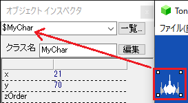
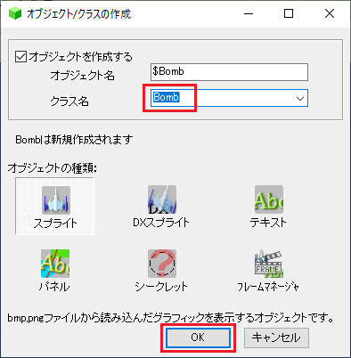
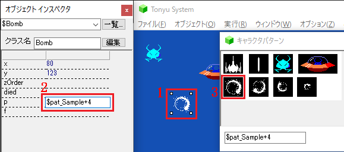
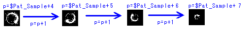

チュートリアル - 実践編 - シューティングゲーム (5/11)
自機を破壊する
敵と自機がぶつかったら、自機が死ぬ
敵を作りましたが、このままでは弾があたっても、自機がぶつかっても何もおきません。
まず、敵が自機にあたると自機が破壊されるようにしましょう
敵オブジェクトをダブルクリックして、次の行を追加します
extends SpriteChar;
while (y<$screenHeight) {
y=y+2;
if (crashTo($MyChar)) $MyChar.die();
update();
}
まずifの条件部から見ていきましょう
if (crashTo($MyChar)) ...
crashToは、この敵が自機($MyChar)に当たっているかという判定を行います。 当たっている場合はif文の後ろが実行されます。
なお、自機の名前は、自機をクリックし、オブジェクトインスペクタで確認できます。

ぶつかった場合の処理は次のようになります
... $MyChar.die();
これによって自機が死にます。
xx.die();は、xxで表されるオブジェクトを殺す命令で、殺されたオブジェクトはただちに処理が止まり、画面上からいなくなります。
それでは実行してみましょう。敵が自機にふれると、自機が消えてしまいました。
爆発パターンを作る
しかし、いきなり消えるのはあっけないので、爆発するアニメーションをつけてみましょう。
新規オブジェクトを作成します。

キャラクタパターンを、爆発パターンの一番先頭のパターンにします。

ダブルクリックして、動作を次のように書きます
extends SpriteChar;
wait(5);
p=p+1;
wait(5);
p=p+1;
wait(5);
p=p+1;
wait(5);
新しくwait(5);という命令が出てきました。これはupdate();に似ています。
書式
wait(待機フレーム数);
これを行うことにより待機フレーム(コマ)数で指定しただけオブジェクトの動作が止まります。
ここでは5フレーム(5コマ)待機します。
その後、変数pの値を１増やしています。変数pは、このオブジェクトのキャラクタパターンを表します。
つまり、pを1増やすことにより、キャラクタパターンが次のように変化していきます

実行してみると、爆発しているようなアニメーションを見ることができます。
爆発パターンを出現させる
爆発パターンを、自機が死んだときに発生させるようにしましょう。
自機オブジェクトをダブルクリックして、次のように変更します
extends SpriteChar;
function onDie() {
appear(new Bomb($MyChar.x , $MyChar.y ,$pat_Sample+4));
}
while(1) {
if (getkey(39)>0 && x<$screenWidth ) x=x+3;
if (getkey(37)>0 && x>0) x=x-3;
if (getkey(32)==1) appear(new Tama(x,y,$pat_Sample+1));
update();
}
敵を出現させるで出てきたメソッドを使いました。
しかし、先ほどと違ってこの onDieというメソッドはプログラム中から呼ばれていません。
実はこの onDieという名前をつけたメソッドは特別な意味を持ち、そのオブジェクトが死んだときに行わせる処理を記述できます。
実際には、敵のオブジェクトが$MyChar.die(); を呼んだときに、自動的にこの onDieメソッドが呼ばれます。
onDieメソッドの中では、次の処理によって爆発オブジェクトを出現させています。
appear(new Bomb($MyChar.x , $MyChar.y ,$pat_Sample+4));
appearの使い方をもう一度復習しておきましょう
- Bombは、出現させたいオブジェクトのクラスです。
- $MyChar.x , $MyChar.y は、オブジェクトの出現する座標です。
- $pat_Sample+4は、オブジェクトのキャラクタパターンを指定します。ここではです。
$MyChar.xは、「$MyCharのx」と解釈できます。
このように、オブジェクトに続いてドット(.)と変数名書くと、そのオブジェクトが持っている変数を参照することができます。
ここでは、自機のいる場所に爆発を出現させるのにこの参照を用いています。
チュートリアル - 実践編 - シューティングゲーム (4/11)
敵を出現させる
UFOを作る
この敵はすぐ下に消えてしまうので、次々と新しいオブジェクトを出現させる仕組みを作ります。
ここでは、UFOを作り、UFOから敵があらわれるという設定にします。 オブジェクトを作るを参考にUFOのオブジェクトを作成します
キャラクタパターンを設定します。
ダブルクリックして次のように動きを記述します。
extends SpriteChar;
while(1) {
while(x<$screenWidth) {
x=x+2;
update();
}
while(x>0) {
x=x-2;
update();
}
}
実行させると、UFOが画面を横方向に往復します。
UFOから敵が出現する
さらに、このUFOから敵が出現するようにします。
extends SpriteChar;
while(1) {
while(x<$screenWidth) {
x=x+2;
if (rnd(100)==0) appear(new Enemy(x,y,$pat_Sample+2));
update();
}
while(x>0) {
x=x-2;
update();
}
}
追加した部分について解説します。
if (rnd(100)==0) ..
rnd(100)は、0から99までの整数乱数を返します。その値が0のとき、つまり100分の１の確率でifの後ろが実行されます。
.. appear(new Enemy(x,y,$pat_Sample+2));
これによって、敵クラス(Enemy)のオブジェクトが作成されます。 出現場所はUFOのいる場所、キャラクタパターンは $pat_Sample+2 です (弾を撃つ参考)
上の処理では、左から右に移動しているときしか敵が出現しません。 右から左に移動中にもこの処理を挿入する必要があります。
extends SpriteChar;
while(1) {
while(x<$screenWidth) {
x=x+2;
if (rnd(100)==0) appear(new Enemy(x,y,$pat_Sample+2));
update();
}
while(x>0) {
x=x-2;
if (rnd(100)==0) appear(new Enemy(x,y,$pat_Sample+2));
update();
}
}
メソッドを定義する
このプログラムでは敵を出現させるために、全く同じ処理を２箇所に書いたことになります。
これでもプログラムは正しく動くのですが、いくつか不便な点があります。
例えば出現確率を変えたいとか、敵のキャラクタパターンを変えたいとかいったときに、両方書き換える必要があります。
そこで、この敵出現処理をまとめることを行います。
extends SpriteChar; function appearEnemy() { if (rnd(100)==0) appear(new Enemy(x,y,$pat_Sample+2)); } while(1) { while(x<$screenWidth) { x=x+2; appearEnemy(); update(); } while(x>0) { x=x-2; appearEnemy(); update(); } }
まず、一番上に書いた部分について解説します。
function appearEnemy() {
if (rnd(100)==0) appear(new Enemy(x,y,$pat_Sample+2));
}
これはメソッドと呼ばれ、ある処理に名前をつけて何度も使えるようにしたものです。
ここでは、1/100の確率で敵を出現させる処理に appearEnemyという名前（メソッド名）をつけています。
この部分は、最初にいきなり実行されるわけではなく、あとからこのメソッドを呼び出すことによって実行されます。
その呼び出しを行うのが、下のほうに書いた
appearEnemy();
です。このように
書式メソッドの呼び出し
メソッド名();
と書くことで、いつでもメソッドを呼ぶことができます。
試しに、敵の出現確率を1/50に変えてみましょう。それにはappearEnemyの一箇所を書き換えればよいのです。
このようにメソッドを使って、よく使う処理をまとめておくと、後で修正が楽になります。
extends SpriteChar;
function appearEnemy() {
if (rnd(50)==0) appear(new Enemy(x,y,$pat_Sample+2));
}
while(1) {
while(x<$screenWidth) {
x=x+2;
appearEnemy();
update();
}
while(x>0) {
x=x-2;
appearEnemy();
update();
}
}
チュートリアル - 実践編 - シューティングゲーム (3/11)
敵を動かす
今度は敵を作ってみましょう。オブジェクトを作るを参考にオブジェクトを作成します
キャラクタパターンを指定します
とりあえず、上から下に飛んでくる動きにしてみましょう。敵をダブルクリックして次のように入力します。
extends SpriteChar;
while (y<$screenHeight) {
y=y+2;
update();
}
チュートリアル - 実践編 - シューティングゲーム (2/11)
弾を撃つ
弾を作る
オブジェクトを作るを参考に弾のオブジェクトを作ります。
オブジェクトのキャラクタパターンを指定するを参考に、弾のパターンを指定します
弾をダブルクリックし、次のように入力します。
extends SpriteChar;
while(y>0) {
y=y-8;
update();
}
実行すると、弾が上に飛んでいくのが見えます。 よく見えなかった場合、F2で止めて、弾をドラッグして下の方にもっていくと見やすいでしょう。
スペースキーを押すと弾が出る
しかし実際には弾は自機から発射するものです。 スペースキーを押すと自機から弾が出るようにしましょう。
自機をダブルクリックし、次のように変更します
extends SpriteChar;
while(1) {
if (getkey(39)>0 && x<$screenWidth) x=x+3;
if (getkey(37)>0 && x>0) x=x-3;
if (getkey(32)==1) appear(new Tama(x,y,$pat_Sample+1));
update();
}
まず前半部(if文の条件)から解説します
if (getkey(32)==1) ...
これは、自機を動かすでも出てきましたが、キーの状態を判定します 32はスペースキーを表す番号です。
スペースキーが押された瞬間だけ if文のあとの処理を行います(押しっぱなしでは弾が撃てません)
そして、スペースキーがおされていた場合の、弾を撃つ処理です
... appear(new Tama(x,y,$pat_Sample+1));
これは、新しいオブジェクトを作るときの決まり文句で、次のような パラメータを指定します。
書式
appear(new クラス名 ( x座標 , y座標 ,キャラクタパターン ))
クラス名には、作成したいオブジェクトのクラス名を指定します。
...といっても、クラスの話は少し難しいので、ここでは次の手順でクラス名を決めてください。
まず、今は弾を出したいのですから、とりあえず画面上の弾をクリックします。
すると、オブジェクトインスペクタに弾の内容が表示されますが、「クラス名」という欄に注目してください。
ここに「Tama」とかいてあります。これが弾のクラス名になります
x座標 , y座標
作成するオブジェクトの位置を指定します。ここでは、自機から発射されるので、自機のx,y座標をそのまま使います
キャラクタパターン
作成するオブジェクトのキャラクタパターンを指定します。
キャラクタパターンを指定するには、下図のように、キャラクタパターンウィンドウからキャラクタパターンを選ぶと、ステータスバーのところにキャラクタパターンの値が表示されます。
この値（$pat_Sample+1）をパラメータとして記述します。
同時に、この値がクリップボードにコピーされます。
さて、これで実行させてみましょう。スペースキーを押すと弾が発射されるようになりました。
チュートリアル - 実践編 - シューティングゲーム (1/11)
自機を動かす
まず、「ファイル」＞「メインメニュー」で最初の画面に戻ってください。
新規プロジェクトを参考に新規ページを作成してください。
自機を作る
自機を作ってみましょう。オブジェクトを作るを参考にオブジェクトを作成します
オブジェクトのキャラクタパターンを指定するを参考に、自機のパターンを指定します。
先ほど用いた"Projects"フォルダの下のSample.bmpを使います
自機の動きを定義する
自機をダブルクリックし、次のように入力します。
extends SpriteChar;
while(1) {
if (getkey(39)>0) x=x+3;
if (getkey(37)>0) x=x-3;
update();
}
自機の位置は画面下のほうがよいので、ドラッグして移動しておきます。 実行してみましょう。カーソルキーの右と左で自機を動かせます。
まず
while(1) {...
について解説します。
whileは()内の条件が成り立っている間、次の{}内を実行するものですが、条件のところに 1と書いてあります。
1というのは「いつでも成り立つ」といった意味があります。
つまりwhile(1)と書くと、その後ろの処理を永久に行うことになります。(参考：while)
次に、その永久に繰り返される処理の内容を解説していきます。
getkey(x)は、キーが押されているかどうかの判定を行います。
xは調べたいキーの番号で 39がカーソルキーの右, 37が左です
getkey(x)はキーの状態によって、次のような値を表します
- 0:押されていない
- 1:今押されたばかり
- 2以上:押しっぱなしになっている
※ 他のキーの状態を調べたい場合はgetkeyを参照してください
以上をふまえて、移動の仕組みをまとめると、次のようになります。
if (getkey(39)>0) x=x+3;
↑右がおされたら ↑右に移動
if (getkey(37)>0) x=x-3;
↑左がおされたら ↑左に移動
画面はみだし判定
ところで、このままだと右端や左端にはみだしてもそのまま画面外を移動できてしまうので、次のように変更します
extends SpriteChar;
while(1) {
if (getkey(39)>0 && x<$screenWidth) x=x+3;
if (getkey(37)>0 && x>0) x=x-3;
update();
}
このように && で条件をつなげると「～かつ～ならば」という記述ができます。
if (getkey(39)>0 && x<$screenWidth) x=x+3;
↑右がおされて ↑かつ、画面右端に到達してないなら ↑右に移動
if (getkey(37)>0 && x>0) x=x-3;
↑左がおされて ↑かつ、画面左端に到達してないなら ↑左に移動
チュートリアル - 実践編 - 迷路ゲーム (7/7)
配布する
これでゲームは一通り完成です。 このゲームを配布したいとします。
他の人にTonyuをダウンロードさせるのは大変なので、単体で動くプログラム（ランタイム）を作成しましょう。
ファイル＞ランタイム作成を選びます。
「メインページ」を $page_startにします。
これにより、最初にタイトルページが開くようになります。
タイトル、作者等の情報を入れます。
「ネットランキング管理者パスワード」は空欄にしてください。
「配布条件」について説明します。
このランタイムには、今までつくったプログラムのソースファイルがそのまま含まれます。
このため、他のユーザが簡単にプログラムの中身を書き換えることができます。
内容を書き換えたゲーム（または今あなたがつくったゲームそのもの）を、他の人が勝手に配っていいかを決めるのが配布条件です
- 再配布、改造ともに無断で許可
プログラムの中身を変えようと変えまいと、他の人が勝手に配ってよいという、いちばん緩い条件です - 内容を変更しない再配布を無断で許可、改造は不可
プログラムの中身を変えなければ、勝手に配ってよいという条件です - 再配布、改造は要連絡
他の人が配布したい場合、作者への連絡が必要、という条件です。この場合メールアドレス等、あなたの連絡先を書いてください。 - 再配布、改造は不可
勝手に配るな、といういちばんきつい条件です。 - その他
どれにもあてはまらない場合は、条件を自分で書くことができます。
最後に、ランタイムを作成するディレクトリを選び、OKを押します。
ランタイム作成が完了したら、「OK」を選んでフォルダを開いてみます
このフォルダのTonyuRun.exeを実行すれば、作ったゲームが実行できます。
このフォルダを圧縮ツール等でまとめたものを配布してください。
チュートリアル - 実践編 - 迷路ゲーム (6/7)
次の面に移る
敵をすべて倒すと、次の面に移る処理を行いましょう。
2面を作る
といっても、今のところゲーム画面が１つしかないので もう１つ面をつくることにしましょう。
今までのゲーム画面を１面、これから新しく作る面を２面とします。
まず１面のページを開きます。 そして「ファイル」の「名前をつけて保存」を選びます。
ここではstage2.cmmlという名前で保存します。
これで、１面の内容が２面にコピーされました。
今は２面が開いているので、２面のパターンを作ってみましょう
敵の数をふやしたり、はしごの配置をかえたり、いろいろ変更をくわえてみてください。
1面をクリアしたら、2面を開始する処理を作る
さらに、1面をクリアしたらこの2面が始まるようにしましょう
プロジェクトマネージャを開き、再び１面を開きます。
まず、クリアしたかどうかの判定を行いましょう
クリアしたら２面に移動するという動作を行うオブジェクトを作ります。
オブジェクトを作るを参考にオブジェクトを作成します。ここでは $stage1 という名前にします。
さらに、「オブジェクトの種類」を「シークレット」にします。
このオブジェクトは、クリアしたかどうかの判定だけを行うので、実行中は表示する必要がありません。
「シークレット」にすると実行中に表示されないオブジェクトになります。
オブジェクトをダブルクリックし、次のように入力します。
extends SecretChar;
enemyLives=1;
while (enemyLives==1) {
enemyLives=0;
for (e in $chars) {
if (e is Enemy) enemyLives=1;
}
update();
}
$projectManager.loadPage( $page_stage2 );
$page_stage2の部分は、２面のページの名前です。
これはプロジェクトマネージャで確認して、もし違う名前だったらその名前にしてください。
実行してみると、敵が全滅すると２面が開始します。
ここで、 $stage1オブジェクトの動作を説明します。
まず、敵が全滅するまでは、この部分を実行します:
enemyLives=1;
while (enemyLives==1) {
enemyLives=0;
for (e in $chars) {
if (e is Enemy) enemyLives=1;
}
update();
}
while文の働きにより、enemyLivesが１のときは次の部分(while文の中)を実行します。
enemyLives=0;
for (e in $chars) {
if (e is Enemy) enemyLives=1;
}
update();
↑この処理は、enemyLivesが０になるまで繰り返します。
enemyLivesは
enemyLives=0;
によって、一旦０になりますが
for (e in $chars) {
if (e is Enemy) enemyLives=1;
}
によって、画面内に敵が１つでもいる場合、１になります
結果として、敵がまったくいなくなると、enemyLivesが０になり、while文以降の処理に以降します。
while文以降の処理では、２面を読み込みます。
$projectManager.loadPage($page_stage2);
2面をクリアしたときの処理を追加する
今回は簡単のため、２面クリアしたら終わりにして、タイトルに戻るようにしましょう。
まず２面を読み込みます
オブジェクトを作るを参考にオブジェクトを作成します。
ここでは $stage2 という名前にします。
また、先ほどと同じく、「シークレット」を選択します。
オブジェクトをダブルクリックし、次のように入力します。
extends SecretChar;
enemyLives=1;
while (enemyLives==1) {
enemyLives=0;
for (e in $chars) {
if (e is Enemy) enemyLives=1;
}
update();
}
$projectManager.loadPage( $page_start );
$page_startの部分は、スタート画面のページの名前です。
これはプロジェクトマネージャで確認して、もし違う名前だったらその名前にしてください。
チュートリアル - 実践編 - 迷路ゲーム (5/7)
スタート画面を作る
ゲーム開始前のスタート画面を作ってみましょう
まずスタート画面用の新規ページを作ります。
メニューの「ファイル」＞「プロジェクトに新規ページを追加」を選びます。
ゲーム画面のファイルがあるディレクトリと同じディレクトリに、 start.cmmlというファイル名のページを作成します。
ここでは単に"Press Space Key"と表示させ、スペースキーの入力が あったらゲーム画面に移動しましょう
Press Space Key という文字を表示する
オブジェクトを作るを参考にオブジェクトを作成します ただし、「オブジェクトの種類」に「テキスト」を選択してください。
オブジェクトクリックし、オブジェクトインスペクタでtextの値を編集します。
オブジェクトをダブルクリックし、次のように入力します。
extends TextChar;
while(1) {
update();
}
実行させると、画面にPress Space Keyと出ます。
ページを変える
さらに、スペースキーを押すと先ほどのゲーム画面に移動するようにします。
まず少し準備が要ります。ツールメインウィンドウのを選んでください。
すると、このように $page_index、 $page_start といった２つの項目が現れます。
これは、このゲームが使用するページの一覧です
ここでは、
- スタート画面のページを$page_start
- ゲーム画面のページを$page_index
としてすすめていきます。
先ほどPress Space Keyを表示させるオブジェクトをダブルクリックし、次のように変更します。
extends TextChar;
while(1) {
if (getkey(32)>0) $projectManager.loadPage($page_index);
update();
}
実行させてみましょう。
スペースキーをおすと、先ほどのゲーム画面に移動します。
プログラムを停止させ、もう一度プロジェクトマネージャを開いてください。
"$page_start"の欄をダブルクリックして、スタート画面に移動してください。
さきほどのプログラムの解説です。
if (getkey(32)>0)
この部分は、自機を動かすで説明したように、キーボードの入力を判定します。
32はスペースキーを表します。
スペースキーが押されると、次の部分を実行します。
$projectManager.loadPage($page_index);
これは、他のページを読み込む命令で、次のような使い方をします
書式
$projectManager.loadPage(ページ名);
ページ名は、さきほどプロジェクトマネージャで確認したページの名前です。
自機が死んだらスタート画面に戻る
先ほどのページを読み込む命令を使って、自機が死んだらスタート画面に戻るようにしましょう
プロジェクトマネージャを開いてください。
"$page_index"の欄をダブルクリックして、ゲーム画面に移動してください。
敵をダブルクリックし、次のように変更します。
extends SpriteChar;
vx=2;
while(1) {
x+=vx;
if (x<0) vx=2; if (x>$screenWidth) vx=-2; if (rnd(500)==0) vx=-vx;
if (crashTo($MyChar)) {
//↑敵と自機がぶつかったときに
if ((vx>0 && $MyChar.x<x) || (vx<0 && $MyChar.x>x)) {
//↑敵が右方向、自機が左 または 敵が左方向、自機が右
die();
//↑ならば、敵が死ぬ
} else {
$MyChar.die();
//↑そうでなければ自機が死ぬ」
$projectManager.loadPage($page_start);
}
}
if (vx<0) f=1; else f=0;
update();
}
これにより、自機が死ぬとスタート画面($page_start)が読み込まれます。
チュートリアル - 実践編 - 迷路ゲーム (4/7)
自機や敵を破壊する
このゲームでは、敵をやっつける方法が少々変わっていて 「敵の背後から体当たりする」という方法を使います
敵と自機がぶつかったら、自機が死ぬ
とりあえず、敵にぶつかったら自機が死ぬようにしましょう
敵オブジェクトをダブルクリックして、次の行を追加します
extends SpriteChar;
vx=2;
while(1) {
x+=vx;
if (x<0) vx=2;
if (x>$screenWidth) vx=-2;
if (rnd(500)==0) vx=-vx;
if (crashTo($MyChar)) $MyChar.die();
if (vx<0) f=1; else f=0;
update();
}
まずifの条件部から見ていきましょう
if (crashTo($MyChar)) ...
crashToは、この敵が自機($MyChar)に当たっているかという判定を行います。
当たっている場合はif文の後ろが実行されます。
なお、自機の名前は、自機をクリックし、オブジェクトインスペクタで確認できます。
敵と自機がぶつかったら、敵が死ぬ
このままだと必ず自機が死ぬので、自機が敵の背後からぶつかった場合には、
敵のほうが死ぬようにしましょう。
ところで「背後からぶつかる」というのをもう少し詳しく説明すると
「敵の進行方向と反対側から自機がぶつかる」
ということになります、もうすこし具体的にいうと
「敵が右(左)に進んでいるとき、自機が左(右)からぶつかる」
となります。
さらに、「自機が左(右)からぶつかる」は、いいかえると
「敵と自機がぶつかったとき、自機が敵より左(右)にいる」
となります。
これらのことをまとめると
「敵と自機がぶつかったときに、
敵が右に進んでいて、自機が左にいる または
敵が左に進んでいて、自機が右にいる
ならば、敵が死ぬ。そうでなければ自機が死ぬ」
という条件を記述すればよさそうです。 これらを踏まえて、プログラムは次のようになります。
extends SpriteChar;
vx=2;
while(1) {
x+=vx;
if (x<0) vx=2; if (x>$screenWidth) vx=-2; if (rnd(500)==0) vx=-vx;
if (crashTo($MyChar)) {
//↑敵と自機がぶつかったときに
if ((vx>0 && $MyChar.x<x) || (vx<0 && $MyChar.x>x)) {
//↑敵が右方向、自機が左 または 敵が左方向、自機が右
die();
//↑ならば、敵が死ぬ
} else {
$MyChar.die();
//↑そうでなければ自機が死ぬ」
}
}
if (vx<0) f=1; else f=0;
update();
}
チュートリアル - 実践編 - 迷路ゲーム (3/7)
敵を動かす
敵を作ってみましょう 敵は次にあげるようなごく単純な動きしかしないものとします
- 左右移動しかしない
- 画面端にくるか、一定の確率で移動方向が反転する
敵を作る
オブジェクトを作るを参考にオブジェクトを作成します
オブジェクトのキャラクタパターンを指定するを参考に、自機のパターンを指定します。
先ほど用いたSamplesの下のMaze.bmpを使います
敵の動きを定義する
敵をダブルクリックし、次のように入力します。
extends SpriteChar;
vx=2;
while(1) {
x+=vx;
if (x<0) vx=2;
if (x>$screenWidth) vx=-2;
if (rnd(500)==0) vx=-vx;
update();
}
実行してみましょう。
左に進んでいるとき、向きが反対になっています。
そこで、次のような部分を追加してください
extends SpriteChar;
vx=2;
while(1) {
x+=vx;
if (x<0) vx=2;
if (x>$screenWidth) vx=-2;
if (rnd(500)==0) vx=-vx;
if (vx<0) f=1; else f=0;
update();
}
変数fは、0以外の値を設定すると、パターンが左右反転します。
敵をたくさん配置する
敵が１匹ではおもしろくないので、敵をたくさん配置してみましょう。
まず敵をクリックし、そのあとメニューの 「オブジェクト」＞「コピー」を選んでください
さらに、 「オブジェクト」＞「貼り付け」を選んでください
敵がふえました。 この要領で敵をいくつか配置してみてください。
チュートリアル - 実践編 - 迷路ゲーム (2/7)
自機を動かす
自機を作る
自機を作ってみましょう。オブジェクトを作るを参考にオブジェクトを作成します
オブジェクトのキャラクタパターンを指定するを参考に、自機のパターンを指定します。
先ほど用いたSamplesの下のMaze.bmpを使います
自機の動きを定義する
自機をダブルクリックし、次のように入力します。
extends SpriteChar;
while(1) {
if (getkey(39)>0) x+=3;
if (getkey(37)>0) x-=3;
update();
}
実行してみましょう。カーソルキーの右と左で自機を動かせます。
下に落ちる
しかし、これだと自機が空中に浮いています。
下に落ちる処理を付け加えて見ましょう。
extends SpriteChar;
while(1) {
if (getkey(39)>0) x+=3;
if (getkey(37)>0) x-=3;
y+=3;
update();
}
これで実行すると、自機はどんどん下におちていきます。
床やはしごの判定を加える
今度は、ずっと落ちっぱなしですね。
床やはしごにあたったら止まるようにしないといけません。
extends SpriteChar;
while(1) {
if (getkey(39)>0) x+=3;
if (getkey(37)>0) x-=3;
if ($map.getAt(x,y)==$pat_Maze+1) y+=3;
update();
}
ここで新しく$map.getAt(x,y)という命令がでてきますが、これは
「(x,y)地点にあるマップのキャラクタパターンを返す」
という働きがあります
(x,y)とは自分のいる地点ですから、
自分が床でもはしごでもない場所（紺色の空間）にいる場合だけ落ちるようにすればよいのです。
めり込みを修正する
さて、実行させてみると、確かに床で止まるのですが、
ちょっとめりこんだ格好になっています。
この仕組みを説明しましょう。次の図をみてください。
これで、すこしめりこんだ理由はわかったでしょうか
めりこまないようにするには、もう少し下の点で判定をすればよいのです。
extends SpriteChar;
while(1) {
if (getkey(39)>0) x+=3;
if (getkey(37)>0) x-=3;
if ($map.getAt(x,y+16)==$pat_Maze+1) y+=3;
update();
}
さて、これでうごかしてみましょう。 まだ足りないものがあります。
はしごを使っての上下移動ができません。
そこで、自分がはしごの上にいたら上下キーで移動できるようにしましょう
extends SpriteChar;
while(1) {
if (getkey(39)>0) x+=3;
if (getkey(37)>0) x-=3;
if ($map.getAt(x,y+16)==$pat_Maze+1) y+=3;
if ($map.getAt(x,y)==$pat_maze+2) {
if (getkey(40)>0) y+=3;
if (getkey(38)>0) y-=3;
}
update();
}
追加した部分の解説をします。
if ($map.getAt(x,y)==$pat_maze+2) {
↑ここは、自分のいる場所にはしご（キャラクタパターン番号：$pat_maze+2)があるかどうかの判定です
はしごがある場合はif文の中の処理を行います
if (getkey(40)>0) y+=3;
if (getkey(38)>0) y-=3;
↑それぞれ、上や下がおされたら上または下に移動します。
実行させてみましょう。
とりあえずはしごを使って上下移動ができるようですが...
ずっと下を押していたら、壁にめりこんでしまいました。
プログラムをもう一度みてみましょう
extends SpriteChar;
while(1) {
if (getkey(39)>0) x+=3;
if (getkey(37)>0) x-=3;
if ($map.getAt(x,y+16)==$pat_Maze+1) y+=3;
if ($map.getAt(x,y)==$pat_maze+2) {
if (getkey(40)>0) y+=3;
if (getkey(38)>0) y-=3;
}
update();
}
下を押したら、下に移動するという処理は
if (getkey(40)>0) y+=3;
でやっていますが、 ここに「下のほうに壁があったらとまる」という 判定を加えたほうがよさそうです。
逆にいえば「下が押されていて、かつ下に壁がなかったら、下に移動できる」と書けばよいのです。
先ほどの
if ($map.getAt(x,y+16)==$pat_Maze+1) y+=3;
という処理は 「下になにもない空間があった場合、下に移動する（落ちる）」 という処理でした。
これにならって、次のようにかきなおします
extends SpriteChar;
while(1) {
if (getkey(39)>0) x+=3;
if (getkey(37)>0) x-=3;
if ($map.getAt(x,y+16)==$pat_Maze+1) y+=3;
if ($map.getAt(x,y)==$pat_maze+2) {
if (getkey(40)>0 && $map.getAt(x,y+16)!=$pat_Maze+0) y+=3;
if (getkey(38)>0) y-=3;
}
update();
}
実行させてみましょう。自機の動きはひとまず完成です。
チュートリアル - 実践編 - 迷路ゲーム (1/7)
マップを描く
今回作るゲームは、下の図のように横からみた4階建ての建物のなかを主人公が移動し、
画面上の敵をすべて退治するものです。
まず、「ファイル」＞「メインメニュー」で最初の画面に戻ってください。
迷路ゲーム用の新規プロジェクトを作ります。 新規プロジェクトを作るを参考にしてください。
まず迷路用のマップを描きましょう メニューの「ウィンドウ」から「マップ作成」を選びます。
次のように値を入力し、OKを押します
ツールウィンドウの をクリックし、キャラクタパターンウィンドウを表示します。
「追加」をクリックし、"Projects"フォルダのmaze.bmpを選びます。
追加された欄をダブルクリックします。このなかで、左から２番目のの紺色のパターンをクリックします
さらに、ツールウィンドウの左端のリストから"Bold"を選びます。
メインウィンドウ上でのマウスカーソルがペンの形になります。
とりあえず画面中をこの紺色のパターンでぬりつぶしましょう。
メインウィンドウ上で左ボタンを押しながらドラッグすると、パターンが塗られます。
次に、ツールウィンドウで"Fine"を選択します。
キャラクタパターンウィンドウで、左端のブロックのパターンを選びます
次の図のようにマップを描きます
同様に、３番目のはしごのパターンを選び、次のようにマップを描きます
※右クリックでマウスと重なっているマップのパターンを拾えます。
マップを描き終わったら、ツールウィンドウで"Object"を選んでおきましょう
チュートリアル - 基礎編 (付録)
キャラクタパターン用ビットマップの作り方
Tonyuに読み込むキャラクタパターンは、bmpファイルまたはpngファイルから読み込みます。
その際、bmp/png画像は次の規則に従って描画してください。
まず、全体を同じ色で塗ります。これがこの画像全体の「背景色」になります
キャラクタパターンを描画するには、まず描画したい矩形領域全体を同じ色で塗ります。
これがこのパターンの「透過色」になります。左上の1ドットは背景色を残して下さい。
この領域にキャラクタパターンを描くのですが、周囲1ドットは透過色以外を塗らないでください。
同様に他のパターンを描きます。このとき、パターン同士が隣接しないようにしてください。
※ここで書いた方式に従っていない画像を読み込むと、次のようにパターンの切り分けに失敗した場所に×が点滅します。
この場合は全体を1枚のパターンとみなします。
チュートリアル - 基礎編 (9/9)
オブジェクトを追いかけるオブジェクト
カーソルキーで動くオブジェクト で作成したオブジェクトを追いかけるオブジェクトを作ってみます。
まず、カーソルキーで動くオブジェクト で作成したオブジェクトをクリックしてください。
オブジェクトインスペクタで、このオブジェクトの名前を確認します。
下の図では $Cursorという名前になっています。
新しくオブジェクトを作成します
新しいオブジェクトをダブルクリックし、次のように入力します。
extends SpriteChar;
while(1) {
if (x < $Cursor.x) x+=2;
if (x > $Cursor.x) x-=2;
if (y < $Cursor.y) y+=2;
if (y > $Cursor.y) y-=2;
update();
}
$Cursorの部分は、先ほど確認したカーソルキーで動くオブジェクトで作成したオブジェクトの名前にしてください。
実行させると、新しくつくったオブジェクトは、カーソルキーで動かせるオブジェクトのいる方にちかづいてきます。
プログラムの説明をします。
if (x < $Cursor.x) x+=2;
ここででてくる $Cursor.xの読み方は「オブジェクト$Cursorのxの値」、つまり、カーソルキーでうごかせるオブジェクト( $Cursor )のx座標です。
if文の条件は
「自分のx座標が $Cursorのx座標より小さければ 」
つまり
「自分が$Cursorより左にいれば」
となります。
さらに、その条件が成り立った場合はxを増やします。つまり右に移動します。 よって
「自分が$Cursorより左にいれば、右方向にうごく」 ということになります。 次の３行も同様に
「自分が$Cursorより右にいれば、左方向にうごく」
「自分が$Cursorより上にいれば、下方向にうごく」
「自分が$Cursorより下にいれば、上方向にうごく」 ということを表します。
チュートリアル - 基礎編 (8/9)
カーソルキーで動くオブジェクト
基礎編のまとめとして、典型的なオブジェクトを２つほど作ってみます。まずカーソルキーを使って動かせるオブジェクトです。
オブジェクトを作るを参考に、新しいオブジェクトを作成します
オブジェクトをダブルクリックし、次のように入力します。
extends SpriteChar;
while(1) {
if (getkey(39)>0) x+=3;
if (getkey(37)>0) x-=3;
if (getkey(40)>0) y+=3;
if (getkey(38)>0) y-=3;
update();
}
新しくgetkeyというものがでてきましたが、 これはキー入力を判定するのに用います。
getkey(x)は、キーが押されているかどうかの判定を行います。
xは調べたいキーの番号で
39がカーソルキーの右, 37が左です
38がカーソルキーの上, 40が下です
getkey(x)はキーの状態によって、次のような値を表します:
- 0:押されていない
- 1:今押されたばかり
- 2以上:押しっぱなしになっている
※他のキーの状態を調べたい場合はgetkeyを参照してください。 getkeyの部分は次のようにいいかえられます
if (右がおされた) 右に3だけ移動;
if (左がおされた) 左に3だけ移動;
if (下がおされた) 下に3だけ移動;
if (上がおされた) 上に3だけ移動;
実行してみましょう。カーソルキーをつかって動かせます。
チュートリアル - 基礎編 (7/9)
オブジェクトいろいろ
オブジェクト作成時に、オブジェクトの種類を指定すると、いろいろなオブジェクトを作ることができます
DXスプライト
半透明、回転拡大縮小ができるオブジェクトです
メニューの「オブジェクト」→「新規」を選び、次の操作をしてみましょう
クラス名を入力
「DXスプライト」をクリック
「OK」をクリック
オブジェクトが表示されました
オブジェクトインスペクタで、次の値を変更してみましょう
- angle
オブジェクトの回転角度を指定します。単位は度です - alpha
オブジェクトの透明度を指定します。値は0から255の範囲で、値が小さいほど透けて見えます - scaleX
オブジェクトの大きさを指定します。もとの大きさは1です
例：
テキスト
文字を表示するオブジェクトです
メニューの「オブジェクト」→「新規」を選び、次の操作をしてみましょう
クラス名を入力
「テキスト」をクリック
「OK」をクリック
オブジェクトが表示されました
オブジェクトインスペクタで、次の値を変更してみましょう
- text
表示する文字列を指定します。
注意：textはかならず文字列を"(ダブルクォート)で囲んでください。
size
テキストの大きさを指定します。col
テキストの色を指定します。色は次のいずれかを選びます■ $clBlack ■ $clRed ■ $clGreen ■ $clBlue ■ $clWhite ■ $clYellow ■ $clAqua ■ $clPink font
テキストのフォントを指定します。
例：
チュートリアル - 基礎編 (6/9)
オブジェクトのキャラクタパターンを指定する
今まではオブジェクトのグラフィックに緑色の四角を使用していましたが、別のグラフィックを表示する方法を示します。
まずページにグラフィックスを読み込む必要があります。左上の「ツールウィンドウから左端のボタンを押します。
追加をクリックします。
一階層上のフォルダに移動し、"Sample.bmp"を選択します。
このページからSample.bmpが使用できる状態になりました。 キャラクタパターンを変えたいオブジェクトをクリックします。
オブジェクトインスペクタで、変数pの欄をクリックします。
キャラクタパターンウィンドウの、Sample.bmpの欄をダブルクリックします。
キャラクタをクリックして選択します。キャラクタパターンの値が表示されるとともに、オブジェクトインスペクタ上でpの値が変化します。
実行させると、選択したキャラクタパターンのオブジェクトが動きます。
※キャラクタパターンを独自に作成する場合、キャラクタパターン用ビットマップの作り方に書いてある方法に基づいてパターンを作成してください
チュートリアル - 基礎編 (5/9)
オブジェクトをコピーする
すでに画面上にあるオブジェクトと同じ動きをするオブジェクトを作ることができます。
コピーしたいオブジェクトをクリックし、メニューの「オブジェクト」→「コピー」を選択します
メニューの「オブジェクト」→「貼り付け」を選択します。 新しいオブジェクトが現れます。
実行すると、貼り付けられたオブジェクトもコピー元のオブジェクトと同じ動作をします。
チュートリアル - 基礎編 (4/9)
オブジェクトを動かす2
先ほど書いたプログラムについて解説します。
1: extends SpriteChar;
2:
3: while(x<$screenWidth) {
4: x+=1;
5: update();
6: }
- 1行目は「おまじない」だと思ってとりあえず無視してください。
- 3行目は「自分のx座標が画面右端の座標($screenWidth)より小さい（$screenWidthより左側である）間、{}で囲まれた処理（4,5行目)を実行しなさい」という意味になります(参考：while文)
- 4行目は、x座標を1増加、つまり右に１ドット分移動します
- 5行目は、画面のかきかえを行います(参考：updateメソッド)
もう少し複雑な動きをするオブジェクトを作ってみましょう
オブジェクトを作るを参考に、新しいオブジェクトを作成します
新しいオブジェクトをダブルクリックして、次のように入力します(先頭のextends SpriteChar;は自動的に入力されているので新たに入力する必要はありません)
extends SpriteChar;
while(x<$screenWidth) {
y+=vy;
vy+=0.1;
if (y>$screenHeight) {y=$screenHeight; vy=-vy;}
x+=1;
update();
}
実行してみましょう。オブジェクトが跳ねながら右に移動する様子が見えたと 思います。
さっきと違うのは、この３行が追加されたところです
4: y+=vy;
5: vy+=0.1;
6: if (y>$screenHeight) {y=$screenHeight; vy=-vy;}
- 4行目は、自分のy座標をvyだけ加算します。つまりvyはyの速度をあらわします
- 5行目は、vyに0.1を加えます。yの速度に0.1を加えるので、0.1はyの加速度（重力）をあらわします。
- 6行目は、跳ね返りの処理です。まず、
if (y>$screenHeight) ...
これは、もし( if )yが画面下端の座標($screenHeight)より大きくなったら、つまり yが画面下端より下になったら、その後ろの{と}で囲まれた部分を実行しなさい という意味です。
そして、その{と}で囲まれた部分
... {y=$screenHeight; vy=-vy;}
これは、yを$screenHeightにして、下にはみ出ないようにします。 さらにvyの符号を反転(=移動方向のy成分を反転)します。
この「もし～なら～する」という記述はif文と呼ばれ、今後もよく出てくるので覚えておいてください
書式
if (条件) 処理
条件に書いた式が真であるときだけ処理を行います
チュートリアル - 基礎編 (3/9)
オブジェクトを動かす
作成したオブジェクトをダブルクリックします。 エディタが開きます。
ここでは、右方向に移動するという動きを定義してみます。エディタに次のように入力します。
extends SpriteChar;
while(x<$screenWidth) {
x+=1;
update();
}
メニューの「実行」→「実行(F9)」を選択すると、オブジェクトが動くのが確認できます。
メニューの「実行」→「実行(F2)」で実行を停止します。
チュートリアル - 基礎編 (2/9)
オブジェクトを作る
メインウィンドウの「オブジェクト」メニューから「新規」を選択します。
名前とクラス名を次のように入力し、OKを押します。
画面に新しいオブジェクトが現れます。
チュートリアル - 基礎編 (1/9)
新規プロジェクトを作る
まずTonyuを起動します。
新しいページを作るには、「新規プロジェクト」を選択します。
次のように入力し、OKをクリックします。
謝辞
Tonyuの作成にあたっては、たくさんの方のご協力をいただいております。これらの 方々に感謝いたします。
メソッド
次のクラス、メソッドは、ユーザの皆様よりお寄せいただいたものを修正・登録したものです。
- Object.colorHSL ソンヨルさん
- Sprite.drawBrokenLine / Panel.drawBrokenLine ラティウスさん
- $Math りょうたさん
- RadioButton CheckBox Sprite.centerText, Sprite.drawVerticalText, Sprite.drawPolygon, Sprite.drawRect, Sprite.drawRectDx, Sprite.drawTriangle, Sprite.gradationLine, Sprite.gradationRect, Sprite.gradationText kenjiさん
ドキュメント
- このヘルプのangleDiffメソッド、angle,sin,cos,distの関係の項目に含まれる画像は、AKJさんの"Tonyu Tips"にある画像をいただき、加筆訂正したものです。
ライブラリ
このプログラムを作成するにあたって、次のライブラリを使用 させて頂きました。
- DelphiX 堀 浩行さん
- BREGEXP.DLL Babaさん
- Delphi用 BREGEXP.DLL利用ユニット 武内 修さん
- 文字コード変換総合コンポーネントTPzConv PzFactoryさん
- GLDPNG Tarquinさん ※GLDPNG(ZLIB)の著作権表示:
GLDPNG (c) 1998-2001 Copyright Tarquin All Rights Reserved. ZLIB ver 1.1.3 (c) 1995-1996 Copyright Jean-loup Gailly and Mark Adler
更新履歴
2025-05-05
・ver1.303リリース
2024-02-17
・ver1.303リリース
2024-02-12
・ver1.302リリース
・Tonyuについて
2024-02-08
・ver1.301リリース
2022-08-05
・ver1.30リリース
過去の更新履歴
2021-12-12
・ver1.29リリース
2021-10-03
・本Wiki完成
2021-08-31
・本Wikiに移転
2021-07-30
・ver1.29リリース
・M-Twoリリース
2021-04-13
・本Wiki公開
2021-04-07
・ver1.28リリース
細かい更新履歴
細かい更新履歴は「makkii-bcr/Tonyu1-wiki」を参照してください。
全ページ
※ このページのデザインで表示されている全ページです。旧デザインや他サイトのページは含まれていません。
- チュートリアル - 実践編 - シューティングゲーム (5/11) - 自機を破壊する
- チュートリアル - 実践編 - シューティングゲーム (4/11) - 敵を出現させる
- チュートリアル - 実践編 - シューティングゲーム (3/11) - 敵を動かす
- チュートリアル - 実践編 - シューティングゲーム (2/11) - 弾を撃つ
- チュートリアル - 実践編 - シューティングゲーム (1/11) - 自機を動かす
- チュートリアル - 実践編 - 迷路ゲーム (7/7) - 配布する
- チュートリアル - 実践編 - 迷路ゲーム (6/7) - 次の面に移る
- チュートリアル - 実践編 - 迷路ゲーム (5/7) - スタート画面を作る
- チュートリアル - 実践編 - 迷路ゲーム (4/7) - 自機や敵を破壊する
- チュートリアル - 実践編 - 迷路ゲーム (3/7) - 敵を動かす
- チュートリアル - 実践編 - 迷路ゲーム (2/7) - 自機を動かす
- チュートリアル - 実践編 - 迷路ゲーム (1/7) - マップを描く
- チュートリアル - 基礎編 (付録) - キャラクタパターン用ビットマップの作り方
- チュートリアル - 基礎編 (9/9) - オブジェクトを追いかけるオブジェクト
- チュートリアル - 基礎編 (8/9) - カーソルキーで動くオブジェクト
- チュートリアル - 基礎編 (7/9) - オブジェクトいろいろ
- チュートリアル - 基礎編 (6/9) - オブジェクトのキャラクタパターンを指定する
- チュートリアル - 基礎編 (5/9) - オブジェクトをコピーする
- チュートリアル - 基礎編 (4/9) - オブジェクトを動かす2
- チュートリアル - 基礎編 (3/9) - オブジェクトを動かす
- チュートリアル - 基礎編 (2/9) - オブジェクトを作る
- チュートリアル - 基礎編 (1/9) - 新規プロジェクトを作る
- 謝辞
- 更新履歴
- 全ページ
- ランタイムの更新方法
- 命令リファレンス - Window
- 命令リファレンス - $windowX, $windowY
- 命令リファレンス - $windowActive
- 命令リファレンス - while
- 命令リファレンス - $viewX, $viewY
- 命令リファレンス - 変数
- 命令リファレンス - 真偽
- 命令リファレンス - TimeStopper
- 命令リファレンス - this
- 命令リファレンス - $TextEditor
- 命令リファレンス - TextChar
- 命令リファレンス - $System
- 命令リファレンス - switch
- 命令リファレンス - String
- 命令リファレンス - SpriteChar
- 命令リファレンス - Sprite
- 命令リファレンス - $SelectBox
- 命令リファレンス - SecretChar
- 命令リファレンス - $screenWidth, $screenHeight
- 命令リファレンス - return
- 命令リファレンス - $ranking
- 命令リファレンス - RadioButton
- 命令リファレンス - $projectManager
- 命令リファレンス - PlainChar
- 命令リファレンス - PanelChar
- 命令リファレンス - Panel
- 命令リファレンス - $panel
- 命令リファレンス - $panelとpanelの違い
- 命令リファレンス - $Options
- 命令リファレンス - .演算子
- 命令リファレンス - Object
- 命令リファレンス - null
- 命令リファレンス - $mplayer
- 命令リファレンス - $mouseManager
- 命令リファレンス - $mouseX, $mouseY
- 命令リファレンス - メソッドの定義
- 命令リファレンス - メソッドの呼び出し
- 命令リファレンス - Matrix
- 命令リファレンス - $Math
- 命令リファレンス - $TextEditor
- 命令リファレンス - LightHashtable
- 命令リファレンス - キーID一覧
- 命令リファレンス - Joystick
- 命令リファレンス - is
- 命令リファレンス - $InputBox
- 命令リファレンス - if
- 命令リファレンス - Hashtable
- 命令リファレンス - $osPlatformId、$osMajorVer、$osMinorVer
- 命令リファレンス - $fullScreen
- 命令リファレンス - FrameManager
- 命令リファレンス - $_fps, $_rps
- 命令リファレンス - for
- 命令リファレンス - for..in
- 命令リファレンス - for (xx in $chars)
- 命令リファレンス - FileWriter
- 命令リファレンス - FileReader
- 命令リファレンス - ファイルの扱いについて
- 命令リファレンス - extends
- 命令リファレンス - DxChar
- 命令リファレンス - $displayWidth, $displayHeight
- 命令リファレンス - 注釈
- 命令リファレンス - CheckBox
- 命令リファレンス - break
- 命令リファレンス - 代入
- 命令リファレンス - 演算代入
- 命令リファレンス - Array
- 命令リファレンス - 算術演算
- 命令リファレンス - AnimationAdaptor
- 命令リファレンス - angle,sin,cos,distの関係
- 命令リファレンス - AbstractHashtable
- 命令リファレンス
- 命令リファレンス：用途別
- Tonyu1 プレリリースバージョン
- Tonyu1 Wiki
- まずはゲームをやってみる
- エラーメッセージ
- Tonyu1のダウンロード
- 過去のバージョンアップ履歴
- 互換性の設定
- Tonyu Systemについて
- Tonyu1とは
- ページが無い
- チュートリアル - 実践編 - シューティングゲーム (6/11) - 敵を破壊する
- チュートリアル - 実践編 - シューティングゲーム (7/11) - 敵の動きに変化をつける
- チュートリアル - 実践編 - シューティングゲーム (8/11) - 得点を表示する
- チュートリアル - 実践編 - シューティングゲーム (9/11) - 弾、爆発を削除する
- チュートリアル - 実践編 - シューティングゲーム (10/11) - 配布する
- チュートリアル - 実践編 - シューティングゲーム (11-1 / 11) - ネットランキング対応にする - ランキング用CGIを設置する
- チュートリアル - 実践編 - シューティングゲーム (11-2 / 11) - ネットランキング対応にする - ネットランキング対応のランタイムを作成する
- チュートリアル - 実践編 - シューティングゲーム (11/ 11) - ネットランキング対応にする
- チュートリアル
- 各種ウィンドウの使い方/オプション - BGM・効果音
- 各種ウィンドウの使い方/オプション - キャラクタパターン
- 各種ウィンドウの使い方/オプション - コード補完
- 各種ウィンドウの使い方/オプション - コンソールウィンドウ
- 各種ウィンドウの使い方/オプション - 描画方法
- 各種ウィンドウの使い方/オプション - マップ作成
- 各種ウィンドウの使い方/オプション - オブジェクト一覧
- 各種ウィンドウの使い方/オプション - パフォーマンス
- 各種ウィンドウの使い方/オプション - プロジェクトマネージャ
- 各種ウィンドウの使い方/オプション - レシピ集
- 各種ウィンドウの使い方/オプション - サテライト
- 各種ウィンドウの使い方/オプション
ランタイムの更新方法
下記の場合、ランタイムを更新してください。
- プロジェクトボードなどでダウンロードした古いTonyu System 1のゲームがWindows10や8.1で起動しない場合
- ランタイムのPlayer.exeを最新版に更新したい場合
更新手順
- 最新版のTonyu1をダウンロードします
- ダウンロードしたフォルダ内のKernelとPlayer.exeを、古い（起動しない）ゲーム側のフォルダに上書きします
- 注意点
- Player.exeを上書きしただけだと、エラーが発生する可能性があります。Kernelも上書きしてください。
- 古い（起動しない）ゲーム側のKernelは、余分なファイルが残らないように削除してからコピーしてください。
- 古い（起動しない）ゲーム側にTempがある場合は削除してください。
- ステータスバーの表示が気になる場合はKernel/Cookies.iniの1行目(env.StatusBar)を0にすると消えます
- Tonyu1_29_2021_0705以降は、Cookies.iniを書き換えなくても、ステータスバーが非表示になります
$windowオブジェクト
ウィンドウの制御を行います
メソッド一覧
| setDrawMode | 描画モードを変更します |
| setDrawModeForceMode | Vista以降で実行時でも描画モードを変更できるようにします |
変数一覧
| sizeable | この値を1にすると、実行時にウィンドウの大きさをマウスによって変更できます |
$window.setDrawMode
描画モードを変更します
$window.setDrawMode(m);
- m
"A" "B" "C" いずれかの文字列
※ ver1.30以降、Windows Vista以降で実行時はsetDrawMode()から描画モードを変更できないようにしました
ウィンドウ上部のメニューから選択した場合は変更できます
どうしても変更したい場合はsetDrawModeForceModeで効くように変更できます
Windows XP以前で実行時はsetDrawModeが効きます
PCやOSのバージョンによって、動作負担が変わったり、画面のかくつき等が変わります
こちらで観測した限りでは下記のような特性があります
| XP以前 | Vista以降 | |
|---|---|---|
| A方式 | PCによって描画負担が軽いor重い | 描画負担が軽い・スタッタリング(*2)が少ない |
| B方式 | Aの特性と同じことが多いがティアリング(*1)が少ない | スタッタリング(*2)が多い |
| C方式 | PCによって描画負担が軽いor重い どのPCでも半透明の描画をすると重くなる | 描画負担が重い どのPCでも半透明の描画をすると重くなる |
- XP以前では、A方式が軽いPCと、C方式が軽いPCの２パターンがあるようです
- Vista以降では、A方式が軽いPCしかみたことが無いので、A方式一択となりそうです
- C方式は、どのPCでも半透明の描画をすると重くなります
- Windows 8、またはWindows Vista/7でAeroが有効の場合は、OSの制御で通常ティアリング(*1)は発生しません
*1）ティアリング (ドスパラの解説ページ)
*2）スタッタリング (ドスパラの解説ページ)
$window.setDrawModeForceMode
(1_30_2022_0804以降)
Windows Vista以降で実行時でも、描画モードを変更できるようにします
$window.setDrawModeForceMode(mode);
- mode
0: Vista以降ではsetDrawModeが効かなくなります（デフォルト）
1: Vista以降でもsetDrawModeを効くようにします
※ $window.setDrawModeForceMode(1);を実行した後に、
$window.setDrawModeが効くようになります
$window.sizeable
この値を1にすると、実行時にウィンドウの大きさをマウスによって変更できます
関連
$windowX, $windowY
ウィンドウの位置を得たり、ウィンドウの移動を行います。
デスクトップ画面の左上が、メインウィンドウの左上に一致している場合、$windowX=0, $windowY=0 です。
例1
extends SpriteChar;
for (i=0; i<100; i++){
$windowX=i;
update();
}
▲ ウィンドウが右に移動します
while
条件にしたがって、繰り返し処理を行います。
書式
while (条件) 手続き
条件に書かれた計算式の値が真である間は手続きを繰り返し実行し、偽である場合は繰り返しを終了します。
条件についてはif文を参照してください。
※ while文でだけ使われる特別な条件として、 while( 1 ) という形式があります。これは無条件に(永久に)繰り返す、という意味になります。
例1
オブジェクトを作成し、ダブルクリック後つぎのように入力します。
extends SpriteChar;
while(x<300) {
// x が 300より小さい（300より左にいる）場合、この中を実行
x=x+1;
update();
}
▲ 実行すると、オブジェクトが右に移動しますが、x = 300 の地点で消滅します。
$viewX, $viewY
$map.scrollToでスクロールした位置を得ます。
例1
ここに書いてあるプログラムは、
実行する前に画面にマップを描くことをおすすめします
(チュートリアル参照)
extends SpriteChar;
while(1) {
$map.scrollTo(t,t);
t+=1;
x=$viewX+$mouseX;
y=$viewY+$mouseY;
update();
}
▲ この例を実行すると、画面が斜めにスクロールしますが、スクロール位置には関係なくマウスの位置にオブジェクトが現れます。
変数
変数とは、数値や文字列などのデータを入れるためのものです。
グローバル変数
$screenWidth など、先頭が$ で始まる変数はグローバル変数です。 同じ名前のグローバル変数はシステムで１個しかありません。オブジェクト変数
x など、先頭がアルファベットの変数は通常、オブジェクト変数です。 オブジェクト変数は、同じ名前でもオブジェクト毎に違う値を持ちます。ローカル変数(中級者向き)
メソッドの定義内の引数および、メソッド内で次の書式で宣言された変数はローカル変数です。
書式
var 変数名, 変数名, ... ;
ローカル変数はそのメソッド内だけで有効です。
同じ名前のローカル変数でも、宣言されているメソッドが異なる場合、別の変数として扱われます。
また、あるメソッド内で、オブジェクト変数と同名のローカル変数を宣言した場合、
ローカル変数への参照を優先し、オブジェクト変数のほうはそのメソッド内で参照できなくなります。
真偽
if文やwhile文などに用いられる条件式は、その条件が成立したか否かを表す必要があります。 条件が成立したときを真、成立していない場合を偽といいます。
Tonyuでは、すべての値が「真」または「偽」を表すようになっています。
- 真を表す値： 0以外の数値、オブジェクト(文字列も含む)
- 偽を表す値： 数値の0、null
例
- 5>3 : 真
- 1+1==3 : 偽
- x<10 : xが10未満の数値なら真、それ以外の場合は偽
- 1 : 真
- 0 : 偽
- "tonyu": 真
TimeStopperクラス
時間の停止を行います
使い方は、timeStopメソッドを参照してください。
メソッド一覧
| releaseAll | すべてのオブジェクトの時間停止を解除します。 |
| release | 特定のオブジェクトの時間停止を解除します。 |
TimeStopper.releaseAll
すべてのオブジェクトの時間停止を解除します。
書式
releaseAll(nonKill)
- nonKill
nonKill=0またはnonKillを省略した場合、時間が止まっている間に、
appearメソッドを用いて出現させたオブジェクトは すべて消滅する。
nonKill=1なら消滅しない。
例1
例はtimeStopメソッドにあります。
TimeStopper.release
特定のオブジェクトの時間停止を解除します。
書式
release(o)
- o
時間停止を解除するオブジェクト
戻り値
なし
例1
例はtimeStopメソッドにあります。
this
thisは自分自身を表す特殊な変数です。
例1
extends SpriteChar;
while (1) {
for (a in $chars) {
if (a!= this && crashTo(a)) die();
}
update();
}
▲ このオブジェクトは、自分以外のオブジェクトに衝突すると、死亡します。
※ this=式 という形の代入はできません。
$TextEditorオブジェクト
$InputBoxより小型の、テキスト入力ウィンドウを表示します。
例1
extends SpriteChar;
$TextEditor.setPosition(10,10,200,100);
$TextEditor.setFont(11,"ＭＳ ゴシック");
$TextEditor.setText("何か入力してください");
$TextEditor.edit();
while($TextEditor.isEditing()) {
update();
}
while (1) {
drawText(x,y,$TextEditor.getText(),$clWhite);
x++;
update();
}
メソッド一覧
| setPosition | テキストエディタの表示位置と大きさを指定します |
| setFont | エディット中に使うフォントを指定します |
| setText | テキストの内容を設定します |
| edit | テキストエディタを表示し、編集を開始します |
| isEditing | テキストをエディット中かどうか判定します |
| getText | テキストの内容を読み出します |
$TextEditor.setPosition
テキストエディタの表示位置と大きさを指定します
書式
setPosition(x, y, w, h)
- x
左上のx座標 - y
左上のy座標 - w
幅 - h
高さ
hを0にすると、1行のみエディット可能になります。高さはフォントの大きさにしたがって自動的に設定されます。
hを0より大きくすると、複数行のエディットが可能になります。
$TextEditor.setFont
エディット中に使うフォントを指定します
書式
setFont(size, name)
- size
文字の大きさ - name
フォント名
$TextEditor.setText
テキストの内容を設定します
書式
setText(text)
- text
テキストの内容
$TextEditor.edit
テキストエディタを表示し、編集を開始します
書式
edit()
$TextEditor.isEditing
テキストをエディット中かどうか判定します
書式
isEditing()
戻り値 エディット中なら真、エディット完了なら偽
$TextEditor.editを呼び出した直後から、エディタ以外の場所をクリックして
エディタが隠れるまでが「エディット中」とみなされます。
$TextEditor.getText
テキストの内容を読み出します 書式
getText()
戻り値 テキストの内容
TextCharクラス
TextCharクラスのオブジェクトは、文字を表示することができます。
変数
- x
オブジェクトのx座標を表します。xの値が大きくなるほど右に移動します。 - y
オブジェクトのy座標を表します。yの値が大きくなるほど下に移動します。 （※数学などでは、yが大きいほど上ですが、逆向きになります） - text
表示するテキストを設定します。 - col
テキストの色を指定します。色はcolorメソッドや色定数を使って指定します - size
テキストの大きさを指定します。 - font
フォント名を指定します。例："ＭＳ 明朝" "ＭＳ ゴシック"など - bold
1を指定すると太字になります。0で通常の書体です - italic
1を指定すると斜体になります。0で通常の書体です - underLine
1を指定すると下線付きになります。0で通常の書体です - maxTextWidth
この値が0以外の数値のとき、指定された幅を超えた文字列を改行して表示します。これを用いて複数行の文字列表示が可能です。 - zOrder
この値が小さいほど文字が手前に表示されます。
メソッド
TextChar.edit
テキストを編集状態にします
書式
edit()
※複数行表示している場合でも1行のみのエディットになります
$Systemオブジェクト
システムの終了などを行います。
メソッド一覧
| exit | Tonyu Systemを終了します |
| getVersion | Tonyu Systemのバージョンを獲得します。 |
| setFrameRate | フレーム（コマ）数とコマ落ちの設定を行います |
| setStackSize | オブジェクトに割り当てるプロセスのスタックサイズを変更します。 |
| setVSync | VSyncの有効・無効を設定します。 |
| setAdjustScanLine | VSyncの基準位置(走査線)を調節します。 |
| setAutoAdjustScanLine | VSyncの基準位置(走査線)の自動調節機能を使うか設定します。 |
| setTimerResolution | タイマー分解能を設定します。 |
| setLoopMode | ゲームループの実行方式を設定します。 |
| setProcessSingle | オブジェクト大量発生時の点滅防止の有効・無効を設定します。 |
| setSleepTimeMMT | マルチメディアタイマー設定時のsleepTimeを指定します。 |
| setLegacyFrameRate | ver1.21～1.29のフレームレートを再現します。 |
| setSpriteAngleAccuracy | スプライト描画のangleの精度を設定します |
$System.exit
Tonyu Systemを終了します
書式
exit()
例1
$System.exit();
$System.getVersion
Tonyu Systemのバージョンを取得します。
書式
$System.getVersion()
戻り値
バージョンを1000倍した値
$System.setFrameRate
フレーム（コマ）数とコマ落ちの設定を行います
書式
setFrameRate(rate, skip)
- rate
1秒あたりのフレーム数 - skip
最大フレームスキップ数
Tonyu起動時には、rateは60、skipは5となっています。
最大フレームスキップ数を大きくすると、処理が落ちた場合に描画の回数を 減らすことで、本来の処理速度を保とうとします。
小さくすると、処理が落ちた 場合に実際の速度が落ちますが、画面はなめらかになります。
例1
$System.setFrameRate(30,2);
$System.setStackSize
オブジェクトに割り当てるプロセスのスタックサイズを変更します。
書式
$System.setStackSize(sz)
sz
スタックサイズTonyu System起動時には、スタックサイズは1024となっています。
スタックサイズの変更が有効になるのは、setStackSizeを実行後に初めてオブジェクトが作られた時です。
- すでに作られているオブジェクトのスタックサイズは変更できません。
- ページをまたいでもサイズの指定は有効です。
例1
extend SpriteChar;
$System.setStackSize(4096);
appear(new ConsumeMuchStackChar(x,y,p));
$System.setVSync
(1_29_2021_0501以降)
VSyncの有効・無効を設定します。
モニターの走査線を取得し、実行速度をミリ秒単位で微調整することでVSync(垂直同期)をします。
書式
setVSync(enable)
- enable
1で有効、0で無効にします。
Tonyu起動時は、VSyncは有効になっています。
Windows 8以降やWindows Vista/7でAero有効の場合(*1)、 スタッタリング(*2)が軽減されます。
Windows XP以前では、ティアリング(*3)が目立たなくなります
*1）OSが自動的に垂直同期を行うので通常ティアリングが発生しなくなります
*2）スタッタリング (ドスパラの解説ページ)
*3）ティアリング (ドスパラの解説ページ)
$System.setAdjustScanLine
(1_29_2021_0501以降)
VSyncの基準位置(走査線)を調節します。
書式
setAdjustScanLine(rate)
- rate
0～1の小数を指定して、VSyncの基準位置(走査線)を調節します。
Windows XP以前やWindows Vista/7でAero無効(クラシックテーマ)の場合、 ティアリング(*1)が発生するため、
ティアリングを目立たない位置にずらしたりするときに使います。
*1）ティアリング (ドスパラの解説ページ)
$System.setAutoAdjustScanLine
(1_29_2021_1212以降)
VSyncの基準位置(走査線)の自動調節機能を使うか設定します。
書式
setAutoAdjustScanLine(enable)
- enable
0:無効、1:有効
Tonyu起動時は、Windows XP以前では有効、Windows Vista以降では無効になっています。
1フレームの描画にかかった時間をもとに、VSyncの基準位置(走査線)を自動調節します。
setAdjustScanLineと併用して使うと、「自動調節＋手動調整」がVSyncの基準位置となります。
$System.setTimerResolution
(1_29_2021_1212以降)
タイマー分解能を設定します。
書式
setTimerResolution(ms)
- ms
1以上を指定します。（ミリ秒単位）
Tonyu起動時は、1ミリ秒で設定されています。
短い時間を指定すると、カクつきが軽減されたりFPSが安定するなどの効果があります。
Windows XP以前のPCでは、短い時間にするとCPU負担が大きくなります。
Windows XP以前のPCでCPU負担軽減を優先したい場合、設定を変更できます。
ただし、Kernel/MidiPlayer2.exeがあると1ミリ秒に設定されてしまいます。
MidiPlayer2.exeを削除する必要がありますが、Midi,Oggは再生できなくなります。
$System.setLoopMode
(1_29_2021_1212以降)
ゲームループの実行方式を設定します。
書式
setLoopMode(mode)
- mode
0:ビジーループ、1:マルチメディアタイマー
Tonyu起動時は、マルチメディアタイマーで実行します。
- ビジーループ
- sleep_timeが0の場合、カクつきは抑えられますが、CPU使用率は1スレッド分100%使います
- sleep_timeが1以上の場合、CPU負担は抑えられますが、カクつきが発生しやすくなります
- ウィンドウ操作中はゲームが止まります
- マルチメディアタイマー
- CPU負担を抑えつつ、カクつきも抑えることができます
- ウィンドウ操作中もゲームが動作し続けます
※ Tonyu1_28以前は、ビジーループで動作しています。マルチメディアタイマー動作にはできません。
$System.setProcessSingle
(1_30_2022_0804以降)
オブジェクト大量生成時に発生する、オブジェクト点滅や処理落ちを防ぐ機能の、
有効・無効を設定します。
書式
setProcessSingle(enable)
- mode
1:有効、0:無効
デフォルトは1で有効
※ 互換性の設定「オブジェクトを大量生成した際、点滅したり動作が遅くなる現象」を参照
$System.setSleepTimeMMT
(1_30_2022_0804以降)
※ 通常このメソッドを使用する必要はありません
0設定でも十分にCPU負荷が低いため、基本的に使用する必要はありません
1以上にするとFPSが低下しやすくなります
マルチメディアタイマー（$System.setLoopMode(1)）設定時のSleepTimeを設定します。
フレームごとにCPUをスリープする時間（単位：ミリ秒）を設定します。
「パフォーマンス」ウィンドウの「CPU負荷」をプログラムから動的に設定します。
書式
setSleepTimeMMT(ms)
- ms
フレームごとにCPUをスリープする時間（単位：ミリ秒）を設定します。
デフォルトは0です。
$System.setLegacyFrameRate
(1_30_2022_0804以降)
ver1.21～1.29のフレームレートを再現します。
- ver1.28以前は、FPSにずれがありました。
- 例えば、フレームレートを60に設定しても、FPSが約62.5になっていました。
- ver1.29からはFPSが正確になりました。
- ver1.28以前のFPSを再現したい場合に設定します。
書式
setLegacyFrameRate(enable)
- enable
0:無効（FPSが正確になる）
1:有効（ver1.28以前のFPSのずれを再現します）
デフォルトは0です。
$System.setSpriteAngleAccuracy
(1_30_2022_0804以降)
スプライト描画の回転(angle)の精度を設定します
- ver1.29以前は、１回転(360°)で256段階（約1.4°ずつ角度が変わる）でした
- ver1.30以降は、１回転(360°)で36000段階（0.01°ずつ角度が変わる）となります
- default.tonyuprjのtargetVersion（無い場合はsavedVersion）によってデフォルトの精度が変わります
- 1290以下の場合は、互換性のため256段階
- 1300以上の場合は、36000段階
- 手動で精度を変えたい場合、このメソッドを使用します
書式
setSpriteAngleAccuracy(mode)
- mode
0: １回転256段階
1: １回転36000段階
※ 互換性の設定「スプライト描画の回転(angle)の精度」を参照
switch
変数の値によって、手続きを振り分けます。
書式
switch (変数) {
case 値1:
手続き1;
break;
case 値2:
手続き2;
break;
...
default:
手続きn;
}
変数に書かれた変数の値がcaseの値に一致する場合、その下の手続きを実行します。
breakに到達するとswitchの {}内から抜けます。
※ break を書き忘れると、条件が一致したcase以降の行も次々に実行されてしまうので、注意してください。
どの case にも一致しない場合、defaultの下の手続きが実行されます。
case はいくつも書くことができます。
default は一番下に１つだけ書くことができ、省略可能です。
例1
extends SpriteChar; $SelectBox.open("何を買いますか？", "ここは武器屋です", "剣", "槍", "斧", "杖"); while (1) { select=$SelectBox.getStatus(); switch (select) { case 0: text="選択中"; break; case 1: text="剣を買いました"; break; case 2: text="槍を買いました"; break; case 3: text="斧を買いました"; break; case 4: text="杖を買いました"; break; default: text="何も買いませんでした"; } drawText(10, 10, text, $clWhite, 20); // textの値を表示 update(); }
▲ 選択ダイアログが表示され、以下の動作となります
- ボタンを押していない間は、selectが0となりcase 0:下の「text="選択中";」が実行されます
- 左から1番目のボタンを押すと、selectが1となりcase 1:の下、「text="剣を買いました";」が実行されます
- 左から2番目のボタンを押すと、selectが2となりcase 2:の下、「text="槍を買いました";」が実行されます
- 左から3番目のボタンを押すと、selectが3となりcase 3:の下、「text="斧を買いました";」が実行されます
- 左から4番目のボタンを押すと、selectが4となりcase 4:の下、「text="杖を買いました";」が実行されます
- ダイアログを×ボタンで閉じると、selectが-1となりcase文で書いてある0～4のいずれにも一致しないので、default:の下、「text="何も買いませんでした";」が実行されます
下記のif文と同じ動作になります。
extends SpriteChar;
$SelectBox.open("何を買いますか？", "ここは武器屋です", "剣", "槍", "斧", "杖");
while (1) {
select=$SelectBox.getStatus();
if (select == 0) {
text="選択中";
} else if (select == 1) {
text="剣を買いました";
} else if (select == 2) {
text="槍を買いました";
} else if (select == 3) {
text="斧を買いました";
} else if (select == 4) {
text="杖を買いました";
} else {
text="何も買いませんでした";
}
drawText(10, 10, text, $clWhite, 20); // textの値を表示
update();
}
例2
breakがcaseと対になっていない例です。
breakが無いとswitch文から即座に抜け出さないので、条件に一致したcaseから次々に処理が実行されてしまいますが、
その性質をあえて利用することもできます。
extends SpriteChar;
$SelectBox.open("何を買いますか？", "ここは売店です", "お茶", "ジュース", "高い弁当", "弁当");
while (1) {
select=$SelectBox.getStatus();
text="";
switch (select) {
case 0:
text="選択中";
break;
case 1:
case 2:
text="飲み物を買いました";
break;
case 3:
text="高級な";
case 4:
text=text+"弁当を買いました";
break;
default:
text="何も買いませんでした";
}
drawText(10, 10, text, $clWhite, 20); // textの値を表示
update();
}
▲ 選択ダイアログが表示され、以下の動作となります
- ボタンを押していない間は、selectが0となりcase 0:下の「text="選択中";」が実行されます
- 左から1番目と2番目のボタンを押した場合、どちらも「text="飲み物を買いました";」が実行されます
- 左から3番目のボタンを押すと、case 3:の下「text="高級な";」が実行されますが、break;は無いのでcase 4:の下「text=text+"弁当を買いました";」も実行されます
「高級な弁当を買いました」と表示されます - 左から4番目のボタンを押すと、case 4:の下、「text=text+"弁当を買いました";」が実行されます
「弁当を買いました」と表示されます - ダイアログを×ボタンで閉じると、selectが-1となりcase文で書いてある0～4のいずれにも一致しないので、default:の下、「text="何も買いませんでした";」が実行されます
Stringクラス
文字列を表すオブジェクトです
演算子
| 文字列結合(+) | 文字列と他の文字列を連結します |
| 文字列比較(==) | 文字列と他の文字列の内容が一致しているかを調べます |
コンストラクタ
| new String | キャラクタコードをあらわす数値から、文字列を作成します。 |
メソッド一覧
| byteLength | 文字列のバイトデータの長さを得ます。 |
| substring | 文字列の一部を抜き出します。 |
| length | 文字列の長さを得ます。 |
| byteSubstring | substringと似ていますが、全角文字を2文字として数えます。 |
| byteAt | 文字列のバイトデータの特定の場所におけるキャラクタコードを得ます。 |
| charAt | 文字列からiバイト目のキャラクタコードをぬきだします |
| split | カンマ(",")などで区切られた文字列("abc,def,efg"など)を配列に分解します。 |
文字列結合
演算子 +を用いて、文字列と他の文字列を連結します
例1
extends SpriteChar;
a="山"
b="川";
c=a+"と"+b;
print(c);
▲ コンソールに"山と川" が表示されます"
例2
extends SpriteChar;
score=100+200;
print("score="+score);
▲ コンソールに"score=300" が表示されます。
この例のように、文字列と数値を連結することが可能です。
注意点
演算子 + は、両辺の値の種類によって意味が変わってきます。
次の例をためしてください。
例3
extends SpriteChar;
print("score="+100+200); // A
print("score="+(100+200)); // B
print(100+200+"=score"); // C
コンソールは次のように表示されます。
score=100200
score=300
300=score
動作をまとめると次のようになります。
- + の両辺のうち少なくとも一方が文字列の場合、演算の結果は文字列となる。文字列でないほうの値はその値の文字列表現に変換される。
- + の両辺が数値の場合、演算の結果は数値となる。数値同士の足し算を行う。
- + で連結された値が３つ以上ある場合、左から計算する。ただし括弧でくくられたものを先に計算する
上の例では次のような計算が行われています。
print("score="+100+200); // A
まず、"score="+100 を計算し、結果が"score=100"になる。
さらに"score=100"+200 を計算し、結果が"score=100200"になる。
print("score="+(100+200)); // B
まず、(100+200)を計算し、結果が300（数値）になる
さらに"score="+300 を計算し、結果が"score=300"になる。
print(100+200+"=score"); // C
まず、100+200を計算し、結果が300（数値）になる
さらに300+"=score" を計算し、結果が"300=score"になる。
文字列比較
==演算子を用いて、 文字列と他の文字列の内容が一致しているかを調べます
例1
extends SpriteChar;
a="abc";
if (a=="abc") print(a+" と abc は等しい");
else print(a+" と abc は等しくない");
if (a=="def") print(a+" と def は等しい");
else print(a+" と def は等しくない");
コンソールは次のように表示されます。
abc と abc は等しい
abc と def は等しくない
new String
キャラクタコードをあらわす数値から、文字列を作成します。
例1
a=new String(35);
▲ aの値は、キャラクタコード35の文字(#) からなる文字列 "#" になります。
String.byteLength
文字列のバイトデータの長さを得ます。
書式
byteLength()
戻り値
全角文字を2文字とした、文字列の長さ
lengthメソッドと似ていますが、全角文字を２文字として数えます。
String.substring
文字列の一部を抜き出します。
書式
substring(b,e)
- b
抜き出し開始位置。先頭を0として、全角文字も１と数える - e(省略可能)
抜き出し終了位置。この位置の１文字手前までが抜き出される。省略した場合は最後まで
戻り値
b,eによって指定された範囲内の文字列を返します。
例1
メニューの「ウィンドウ」＞「コンソール」でコンソールウィンドウを表示し、さらに
メニューの「ウィンドウ」＞「テスト実行」で表示されるウィンドウに次のように入力し
F9をおします
a="105円です";
b=a.substring(2);
c=a.substring(2,4);
print(b);
print(c);
▲ コンソールは次のように表示されます。
5円です
5円
String.length
文字列の長さを得ます。
書式
length()
戻り値
文字列の長さ
全角文字も1文字として数えます。
全角文字を2文字として扱いたい場合、byteLengthメソッドを用います
例1
メニューの「ウィンドウ」＞「コンソール」でコンソールウィンドウを表示し、さらに
メニューの「ウィンドウ」＞「テスト実行」で表示されるウィンドウに次のように入力し
F9をおします
a="Tonyuシステム";
print("「"+a+"」は"+a.length()+"文字です");
▲ コンソールには次のように表示されます。
「Tonyuシステム」は9文字です
注意
次のように文字定数に直接.length()をつけることはできません
"Tonyu".length(); // エラー
String.byteSubstring
substringと似ていますが、全角文字を2文字として数えます。
書式
byteSubstring(b,e)
- b
抜き出し開始位置。先頭を0として、全角文字を2と数える - e(省略可能)
抜き出し終了位置。この位置の１文字手前までが抜き出される。省略した場合は最後まで
戻り値
b,eによって指定された範囲内の文字列を返します。
String.byteAt
文字列のバイトデータの特定の場所におけるキャラクタコードを得ます。
書式
byteAt(n)
- n
位置
戻り値
strのバイトデータにおける、nバイト目のキャラクタコード
String.charAt
文字列からiバイト目のキャラクタコードをぬきだします
書式
charAt(i)
- i
文字列のインデックス。0が先頭、全角文字は2文字と数える
戻り値
iバイト目のキャラクタコード
byteAtと同じ動作をします。
"1文字"だけを抜き出す場合は
s.substring(i,1)
を使います。
String.split
カンマ(",")などで区切られた文字列("abc,def,efg"など)を配列に分解します。
書式
split(separator,limit)
- separator(省略可能)
区切りに使う文字列。省略すると、文字列strをカンマ (",")で区切ります。 - limit(省略可能)
limitで指定された個数を超える要素をもつ配列を生成しません。省略すると個数に制限はありません。
例1
メニューの「ウィンドウ」＞「コンソール」でコンソールウィンドウを表示してください
extends SpriteChar;
a="abc,de!f,ghi";
print(a+"を , で区切ります");
b=a.split();
for (e in b) {
print(e);
}
print(a+"を ! で区切ります");
b=a.split("!");
for (e in b) {
print(e);
}
print(a+ "を , で区切ります(要素数は2つまで)。");
b=a.split("," ,2);
for (e in b) {
print(e);
}
SpriteCharクラス
SpriteCharクラスのオブジェクトは、ビットマップグラフィックスを表示することができます。
変数
- x
オブジェクトのx座標を表します。xの値が大きくなるほど右に移動します。 - y
オブジェクトのy座標を表します。yの値が大きくなるほど下に移動します。 （※数学などでは、yが大きいほど上ですが、逆向きになります） - f
fに１を代入すると、キャラクタパターンの左右を反転します。0を設定すると反転をやめます。 - zOrder
この値が小さいほど文字が手前に表示されます。
メソッド一覧
- newAnimation
- PlainCharクラスのメソッド
- Spriteクラスのメソッド
- Objectクラスのメソッド
SpriteChar.newAnimation
新規AnimationAdaptorを作成します。
書式
newAnimation()
戻り値
新規作成されたAnimationAdaptor
Spriteクラス
画面上に出現するすべてのオブジェクト(PlainCharクラス)の親クラスです。描画命令などが定義されています
メソッド一覧
| textWidth | テキストの横幅を取得します |
| textHeight | テキストの縦幅（高さ）を取得します |
| setFont | drawTextメソッドで描画する文字フォントを指定します。 |
| drawText | 文字を描画します。 |
| drawLine | 直線を描画します |
| drawBrokenLine | 点線を描画します |
| fillRect | 中の詰まった長方形を描画します |
| drawSprite | スプライトを描画します。 |
| getPatWidth | キャラクタパターンの大きさ（幅）を取得します。 |
| getPatHeight | キャラクタパターンの大きさ（幅）を取得します。 |
| drawMapSprite | 未稿 |
| drawPolygon | 正多角形を描画します。 |
| drawDxSprite | 回転、拡大、縮小、半透明のスプライトを描画します。 |
| drawScreenXY | 各種描画命令において、座標系にスクリーン座標を使うか、ワールド座標を使うかを指定します。 |
| centerText | 指定された座標が中心になるように文字を描画します。 |
| drawVerticalText | 縦書きの文字を描画します。 |
| drawRect | 中空の四角形を描画します。 |
| drawRectDx | 中空の四角形を描画します。回転が可能です |
| drawTriangle | 指定された座標が中心になるように文字を描画します。 |
| gradationLine | グラデーション付きの直線を描画します |
| gradationRect | グラデーションつき長方形を描画します |
| gradationText | グラデーションつき文字を描画します。 |
| fillPolygon | 多角形を描画し，塗りつぶします。 |
| setPolygon | Sprite.fillPolygon における頂点を指定します。 |
Sprite.textWidth
テキストの横幅を取得します
書式
textWidth(t,s)
- t
テキストの内容 - s
テキストサイズ(pt)
戻り値
テキストtをサイズsで書いた場合の幅
Sprite.textHeight
テキストの縦幅（高さ）を取得します
書式
textHeight(t,s)
- t
テキストの内容 - s
テキストサイズ(pt)
戻り値
テキストtをサイズsで書いた場合の高さ
Sprite.setFont
drawTextメソッドで描画する文字フォントを指定します。
書式
setFont(name,bold,italic,underLine)
- name
フォント名 - bold(省略可能)
太字にする場合は1、そうでない場合0にするか省略する - italic(省略可能)
斜体にする場合は1、そうでない場合0にするか省略する - underLine(省略可能)
下線つきにする場合は1、そうでない場合0にするか省略する フォント名と指定できる文字列は
"ＭＳ 明朝" "ＭＳ ゴシック" などです。ＭＳと明朝の間は半角スペースです
例1
extends SpriteChar;
while (1) {
setFont ("ＭＳ 明朝",0,1);
drawText(x,y-30,"フォントが変わりました",$clWhite);
update();
}
▲ オブジェクトの上に明朝体、斜体で"フォントが変わりました"を表示します。
なお、実行開始時は"ＭＳ Ｐゴシック"、太字、斜体、下線すべてなしに設定されます
Sprite.drawText
文字を描画します。
書式
drawText(x,y,text,col,size,zOrder)
- x
x座標 - y
y座標 - text
描画する値 - col
色(通常colorメソッドで指定) - size(省略可能)
サイズ - zOrder(省略可能)
描画順序。値が小さいほど手前に描画される
例1
extends SpriteChar;
i=0;
while (1) {
drawText(x,y-30,"Time",$clWhite);
drawText(x,y-10,i,$clWhite);
i=i+1/60;
update();
}
▲ オブジェクトの頭上に1秒に1だけ増えるタイマーが表示されます
※ drawTextで描いた図形は、次のフレームを描画する前に消去されます。
必ず毎回(updateが呼ばれるたびに)drawTextを実行してください。
次のような例だと、一瞬だけ表示されてすぐ消えてしまいます。
例2
悪い例：
extends SpriteChar;
drawText(x,y-30,"Time",color); // 最初の1フレームしか表示されない
i=0;
while (1) {
drawText(x,y-10,i,color);
i=i+1/60;
update();
}
Sprite.drawLine
直線を描画します
書式
drawLine(sx,sy,dx,dy,col,zOrder)
- sx
始点のx座標 - sy
始点のy座標 - dx
終点のx座標 - dy
終点のy座標 - col
色(通常colorメソッドで指定) - zOrder(省略可能)
描画順序。値が小さいほど手前に描画される
Sprite.drawBrokenLine
点線を描画します
書式
drawBrokenLine(sx,sy,dx,dy,col,zOrder,length)
- sx
始点のx座標 - sy
始点のy座標 - dx
終点のx座標 - dy
終点のy座標 - col
色 - zOrder
描画順序(小さいほど手前に描画される) - length
点線1個の長さ
Sprite.fillRect
中の詰まった長方形を描画します
書式
fillRect(sx,sy,dx,dy,col,zOrder)
- sx
左上点のx座標 - sy
左上点のy座標 - dx
右下点のx座標 - dy
右下点のy座標 - col
色(通常colorメソッドで指定) - zOrder(省略可能)
描画順序。値が小さいほど手前に描画される
Sprite.drawSprite
スプライトを描画します。
書式
drawSprite(x,y,p,f,zOrder)
- x
x座標 - y
y座標 - p
キャラクタパターン - f(省略可能)
0でない数値の場合、元のキャラクタパターンを左右反転したパターンを描画する - zOrder(省略可能)
描画順序。値が小さいほど手前に描画される
通常、オブジェクトに対して自動的にスプライトが描画されますが(updateメソッド参照)、
１つのオブジェクトで複数のスプライトを描画したいときに使用します。
例1
extends SpriteChar;
while (1) {
drawSprite(50,50,21);
x=100;y=100;p=5;
update();
}
▲ このようにすると、update();により、自動的に(100,100)の位置に青い丸(パターン番号21)がかかれる他に、
drawSpriteによって(50,50)の位置に 青い丸(パターン番号21)がかかれます。
drawSpriteを使った場合、x,y,pの値に関係なく任意の場所に任意のパターンを描画できます。
※ drawSpriteはupdate()をするたびに毎回呼び出してください。 次のような例だと、一瞬だけ表示されてすぐ消えてしまいます。
例2
悪い例：
drawSprite(50,50,21); // 最初の1フレームしか表示されない
while (1) {
x=100;y=100;p=5;
update();
}
Sprite.getPatWidth
キャラクタパターンの大きさ（幅）を取得します。
書式
getPatWidth(p)
- p
キャラクタパターン番号
戻り値
p の大きさ（幅）
Sprite.getPatHeight
キャラクタパターンの大きさ（幅）を取得します。
書式
getPatHeight(p)
- p
キャラクタパターン番号
戻り値
p の大きさ（高さ）
Sprite.drawMapSprite
未稿
書式
drawMapSprite()
Sprite.drawDxSprite
回転、拡大、縮小、半透明のスプライトを描画します。
書式
drawDxSprite(x,y,p,f,zOrder,angle,alpha,scaleX,scaleY)
- x
x座標 - y
y座標 - p
キャラクタパターン - f
0でない数値の場合、元のキャラクタパターンを左右反転したパターンを描画する - zOrder
描画順序。値が小さいほど手前に描画される - angle
回転角度。単位は度(°)を表す整数 - alpha
不透明度を0から255の整数であらわす。小さい値ほど透けて見える - scaleX
横方向の拡大率。１が原寸 - scaleY(省略可能)
縦方向の拡大率。省略するとscaleXと同じ
例1
extends SpriteChar;
p=-1;
while (1) {
drawDxSprite(50,50,4,0,0,i,128,2);
i=(i+1) % 360;
update();
}
▲ このようにすると、回転する立方体が見えます。
Sprite.drawPolygon
正多角形を描画します。
書式
drawPolygon(x,y,number,size,col,ang,zOrder)
- x
正多角形の中心のx座標 - y
正多角形の中心のy座標 - number
頂点・辺の数（正number角形を描画します） - size
中心から頂点までの距離 - col
色(通常colorメソッドで指定) - ang
回転角度 - zOrder(省略可能)
描画順序。値が小さいほど手前に描画される
Sprite.drawScreenXY
各種描画命令において、座標系にスクリーン座標を使うか、ワールド座標を使うかを指定します。
書式
drawScreenXY(sc)
- sc
0=ワールド座標を使う 1=スクリーン座標を使う
主に、画面がスクロールするゲームにおいて、
スコア表示など特定のオブジェクトを スクロールさせたくない場合に用います。
オブジェクトをスクロールにあわせて動かないようにするには次のようなメソッドを定義します。
例1
extends TextChar;
function draw() {
drawScreenXY(1);
super.draw();
drawScreenXY(0);
}
x=100;
y=20;
text="Score : 0";
wait();
▲ このオブジェクトはスクロールしても必ず画面上の(100,20)の位置にあります
drawScreenXYメソッドは、drawSprite、drawDxSprite、drawText、drawLine、fillRectの各メソッドにおける引数xとyに機能します。
ワールド座標を用いた場合、(x,y)の値をワールド座標として解釈します。この場合スクロールした位置により画面上の表示位置が変化します。
スクリーン座標を用いた場合、スクロールしても画面上の位置は変化しません。
スクリーン座標、ワールド座標についてはスクロールのサンプルを参照してください。
Sprite.centerText
指定された座標が中心になるように文字を描画します。
書式
centerText(x,y,text,col,size,zOrder)
- x
テキストの中心のx座標 - y
テキストの中心のy座標 - text
描画する値 - col
色(通常colorメソッドで指定) - size(省略可能)
文字のサイズ - zOrder(省略可能)
描画順序。値が小さいほど手前に描画される
Sprite.drawVerticalText
縦書きの文字を描画します。
書式
drawVerticalText(x,y,text,col,size,zOrder)
- x
テキストの中心のx座標 - y
テキストの中心のy座標 - text
描画する値 - col
色(通常colorメソッドで指定) - size(省略可能)
サイズ - zOrder(省略可能)
描画順序。値が小さいほど手前に描画される
Sprite.drawRect
中空の四角形を描画します。
書式
drawRect(sx,sy,dx,dy,col,zOrder)
- sx
左上の頂点のx座標 - sy
左上の頂点のy座標 - dx
右下の頂点のx座標 - dy
右下の頂点のy座標 - col
色(通常colorメソッドで指定) - zOrder(省略可能)
描画順序。値が小さいほど手前に描画される
Sprite.drawRectDx
中空の四角形を描画します。回転が可能です
書式
drawRectDx(sx,sy,dx,dy,col,angle,zOrder)
- sx
中心のx座標 - sy
中心のy座標 - dx
幅 - dy
高さ - col
色(通常colorメソッドで指定) - angle
回転角度 - zOrder(省略可能)
描画順序。値が小さいほど手前に描画される
Sprite.drawTriangle
指定された座標が中心になるように文字を描画します。
書式
drawTriangle(ax,ay,bx,by,cx,cy,col,angle,zOrder)
- ax
頂点Aのx座標(※) - ay
頂点Aのy座標(※) - bx
頂点Bのx座標(※) - by
頂点Bのy座標(※) - cx
頂点Cのx座標(※) - cy
頂点Cのy座標(※) - col
色(通常colorメソッドで指定) - angle(省略可能)
回転角 - zOrder(省略可能)
描画順序。値が小さいほど手前に描画される
(※) : angle=0 のときの座標です。angleの値に応じて、右回転します。
Sprite.gradationLine
グラデーション付きの直線を描画します
書式
gradationLine(sx,sy,dx,dy,cols,cold,zOrder)
- sx
始点のx座標 - sy
始点のy座標 - dx
終点のx座標 - dy
終点のy座標 - cols
始点の色(通常colorメソッドで指定) - cold
終点の色(通常colorメソッドで指定) - zOrder(省略可能)
描画順序。値が小さいほど手前に描画される
Sprite.gradationRect
グラデーションつき長方形を描画します
書式
gradationRect(sx,sy,dx,dy,type,cols,cold,zOrder)
- sx
左上点のx座標 - sy
左上点のy座標 - dx
右下点のx座標 - dy
右下点のy座標 - type
0 - 左→右にグラデーションをかける
1 - 上→下にグラデーションをかける - cols
左端（上端）の色(通常colorメソッドで指定) - cold
右端（下端）(通常colorメソッドで指定) - zOrder(省略可能)
描画順序。値が小さいほど手前に描画される
Sprite.gradationText
グラデーションつき文字を描画します。
書式
gradationText(x,y,text,colL,colR,size,zOrder)
- x
x座標 - y
y座標 - text
描画する値 - colL
左端の色(通常colorメソッドで指定) - colR
右端の色(通常colorメソッドで指定) - size(省略可能)
サイズ - zOrder(省略可能)
描画順序。値が小さいほど手前に描画される
Sprite.fillPolygon
多角形を描画し，塗りつぶします。
書式
fillPolygon(x,y,points,color,zOrder)
- x
基準点のx座標 - y
基準点のy座標 - points
頂点の数 - col
色(通常colorメソッドで指定) - zOrder(省略可能)
描画順序。値が小さいほど手前に描画される 各点の座標は、Sprite.setPolygonで指定します。
extends SpriteChar;
setPolygon(0,-50,0);
setPolygon(1,50,-30);
setPolygon(2,30,130);
$panel.fillPolygon(x,y,3,$clRed);
while (1) {
for (i=0; i<6; i++) {
sz=100;
setPolygon(i,sin(i*60+x)*sz,cos(i*60+x)*sz);
}
fillPolygon(x,y,6,$clGreen,zOrder);
fillPolygon(x+30,y+30,6,$clBlack,zOrder+1);
x++;
update();
}
Sprite.setPolygon
Sprite.fillPolygon における頂点を指定します。
書式
setPolygon(seq,x,y)
- seq
点番号。seq==0,1,2... の順に点を結んで多角形を描画する。最大99 - x
点の x 座標 - y
点の y 座標
$SelectBoxオブジェクト
選択肢を表示するダイアログボックスです
※ waitSelectも参考にしてください。
例1
extends TextChar;
$SelectBox.open("何を買いますか？", "ここは武器屋です", "剣", "槍", "斧", "杖");
while (1) {
select=$SelectBox.getStatus();
if (select==0) text="選択中";
else if (select==1) text="剣を買いました";
else if (select==2) text="槍を買いました";
else if (select==3) text="斧を買いました";
else if (select==4) text="杖を買いました";
else if (select==-1) text="何も買いませんでした";
update();
}
メソッド一覧
| open | はい・いいえ選択用ダイアログボックスを開きます。 |
| getStatus | はい・いいえ選択用のウィンドウの状態を調べます |
$SelectBox.open
はい・いいえ選択用ダイアログボックスを開きます。
書式
open(prompt,title,st1,st2,st3,st4)
- prompt
メッセージ - title
タイトルバーの文字列（省略すると"確認") - st1
1個目のボタンの文字列 （省略すると"はい") - st2
2個目のボタンの文字列 （省略すると"いいえ") - st3
3個目のボタンの文字列 （省略すると表示しない) - st4
4個目のボタンの文字列 （省略すると表示しない)
waitSelectと異なり、ボタンが押されるまで処理を中断しません。
どのボタンが押されたか$SelectBox.getStatusで調べます。
$SelectBox.getStatus
はい・いいえ選択用のウィンドウの状態を調べます
書式
getStatus()
戻り値
-1：ダイアログを閉じた
0：まだボタンを選択していない（選択中）
1：左から1番目のボタンを選択した
2：左から2番目のボタンを選択した
3：左から3番目のボタンを選択した
4：左から4番目のボタンを選択した
SecretCharクラス
SecretCharクラスのオブジェクトは、実行中は表示されません。（設計時には表示されます）
使える変数はSpriteCharと同じです。これらは実行中には意味をもちません。 設計時に表示する位置やキャラクタパターンを指定するためにあります。
メソッド一覧
PlainCharクラスのメソッドが使えます。
変数一覧
| pat | 設計時に表示されるキャラクタパターンです。 |
SecretChar.pat
設計時に表示されるキャラクタパターンです。実行時は意味を持ちません。
$screenWidth, $screenHeight
ウィンドウの幅や高さを取得・設定できます。
- $screenWidth
ウィンドウの幅を返します。代入すると幅が変わります。 - $screenHeight
ウィンドウの高さ（縦幅）を返します。代入すると高さが変わります。
関連
return
メソッドの定義の途中で、メソッドの処理を終了します。
書式
return 戻り値;
戻り値は、メソッドを呼び出した側に返される値です。(省略可能)
例1
extends SpriteChar;
function inRect(sx,sy,dx,dy) {
if (x>=sx && y>=sy && x<=dx && y<=dy) return 1;
return 0;
}
t=200;
while (1) {
if (getkey(39)>0) x+=3;
if (getkey(37)>0) x-=3;
if (getkey(40)>0) y+=3;
if (getkey(38)>0) y-=3;
t+=0.1;
fillRect(t,200,t+100,300,$clRed);
if ( inRect( t,200,t+100,300)==1 ) die();
update();
}
▲ カーソルキーで移動しますが、赤枠のなかに入ると消滅します。
$rankingオブジェクト
ネットランキングCGIの呼び出しを行います
メソッド一覧
| openBrowser | メニューの「ウィンドウ」＞「ネットランキング」で指定したURLを開きます。 |
| setParam | ランキングCGIに渡すパラメータを設定します。 |
$ranking.openBrowser
メニューの「ウィンドウ」＞「ネットランキング」で指定したURLを開きます。
書式
openBrowser()
$ranking.setParam
ランキングCGIに渡すパラメータを設定します。
書式
setParam(name,value)
- name
パラメータ名 - value 値
ネットランキングの詳しい設置法は、チュートリアルを参照してください
nameで指定される名前のパラメータに 値value を設定します。 valueには文字列または数値を指定します。
RadioButtonクラス
ラジオボタンを作成します
例1
extends RadioButton; //必ずRadioButtonを親クラスにしてください。
a=new Array();
a.add("OFF");a.add("OFF");a.add("OFF");a.add("OFF");a.add("OFF");a.add("OFF");
init(3,3);
while(1) {
if (create(300,120,0,0,3,$clBlack)==1) a.set(0,"ON");else a.set(0,"OFF");
if (create(300,140,0,1,3,$clRed)==1) a.set(1,"ON");else a.set(1,"OFF");
if (create(300,160,0,2,3,$clGreen)==1) a.set(2,"ON");else a.set(2,"OFF");
if (create(350,120,1,0,3,$clYellow)==1) a.set(3,"ON");else a.set(3,"OFF");
if (create(350,140,1,1,3,$clPink)==1) a.set(4,"ON");else a.set(4,"OFF");
if (create(350,160,1,2,3,$clWhite)==1) a.set(5,"ON");else a.set(5,"OFF");
drawText(320,120,a.get(0),$clBlack,10);
drawText(320,140,a.get(1),$clBlack,10);
drawText(320,160,a.get(2),$clBlack,10);
drawText(370,120,a.get(3),$clBlack,10);
drawText(370,140,a.get(4),$clBlack,10);
drawText(370,160,a.get(5),$clBlack,10);
update();
}
メソッド一覧
| init | ラジオボタン作成の準備をします |
| create | ラジオボタンを作成します |
RadioButton.init
ラジオボタン作成の準備をします
書式
init(group,number)
- group
作成するグループの数 - number
1グループに存在するラジオボタンの最大数
RadioButton.create
ラジオボタンを作成します
書式
create(x,y,group,number,maxNumber,color,zOrder)
- x
ラジオボタンのx座標 - y
ラジオボタンのy座標 - group
グループID (0-N) N=initで指定したグループの個数-1 - number
グループ内の通し番号 (0 - maxNumber-1) - maxNumber
グループ内にあるラジオボタンの個数(0-N) N=initにおける、group-1 - color
色 - zOrder
表示順序
作成前に必ずinitメソッドを呼んでください
$projectManagerオブジェクト
ページの読み込みを行います
メソッド一覧
| loadPage | 他のページを読み込みます。 |
| getCurrentPageName | 現在開いているページの名前を得ます。 |
$projectManager.loadPage
他のページを読み込みます。
書式
loadPage(page)
- page
読み込むページ
pageに指定するのは、プロジェクトマネージャに表示されるページ名です。
例えば、図1のように表示されている場合、$page_index, $page_stage2,$page_startのいずれかを指定します。
例1
$projectManager.loadPage($page_index);
▲ 図1で赤く囲ったページ($page_index)を読み込みます。
※ loadPageメソッド実行後、次にupdate、updateEx、waitの いずれかのメソッドが呼ばれるまでは、移動前のページで処理が続行します。
※ ページを切り替えたときにBGMを止めない方法
$Options.set("sound_stopOnPageLoad", 1);
参照： $Options.setメソッド
$projectManager.getCurrentPageName
現在開いているページの名前を得ます。
書式
getCurrentPageName()
戻り値
現在開いているページの名前をあらわす文字列
例1
extends TextChar;
text="現在のページ名は"+$projectManager.getCurrentPageName()+"です";
wait();
PlainCharクラス
画面上に表示されるオブジェクト(SpriteChar、DxChar、TextChar、SecretChar)の親クラスです。
これら4種類のオブジェクトに共通な変数やメソッドが用意されています。
このページで示したものの他にも、Spriteクラスのメソッド（描画命令）も使えます。併せて参照してください。
メソッド一覧
| onMouseDown | オブジェクト上でマウスが押されたときに特別な処理をしたいときにユーザが定義するメソッドです。 |
| onMouseDownForDesign | 未稿 |
| onMouseDrag | マウスボタンが押された状態で、オブジェクト上でマウスが動いたときに特別な処理をしたいときにユーザが定義するメソッドです。 |
| crashTo | 他のオブジェクトと衝突しているかどうかを判定します。 |
| crashToLine | オブジェクトと線分の衝突判定を行います。 |
| crashAt | 未稿 |
| onDraw | オブジェクトに描画をするときに、特別な処理をする場合にユーザが定義するメソッドです。 |
| draw | 未稿 |
| onUpdate | updateメソッド、updateExメソッドが呼び出されたときに特別な処理をしたいときにユーザが定義するメソッドです。 |
| update | オブジェクトの書き換え処理を行います。 |
| updateEx | updateメソッドを指定した回数分実行します。これにより、指定したフレーム数だけ待機することができます。 |
| onDie | オブジェクトが死んだときに特別な処理をしたいときにユーザが定義するメソッドです。 |
| die | オブジェクトを殺します。 |
| isDead | オブジェクトが死んでいるかどうかを判定します。 |
| wait | オブジェクトの動作を一時的に停止し、待機状態にします。 |
| notify | waitメソッドで待機状態にあるオブジェクトの動作を再開します。 |
| setVisible | オブジェクトの表示・非表示を設定します。 |
| getVisible | オブジェクトの表示・非表示状態を取得します。 |
| screenOut | オブジェクトが画面外に出たかどうかを判定します。 |
| getScreenX | オブジェクトのスクリーン座標のx座標を得ます。 |
| getScreenY | オブジェクトのスクリーン座標のy座標を得ます。 |
| gotoScreen | オブジェクトの位置をスクリーン座標を用いて指定します。 |
| onAppear | 実行開始時またはappearメソッドによりオブジェクトが出現したときに、特別な処理をする場合にユーザが定義するメソッドです。 |
| waitSelect | はい・いいえ選択用のウィンドウを開き、ユーザがウィンドウを閉じるまで処理を中断します。 |
| waitInput | 文字入力用のウィンドウを開き、ユーザがボタン（「Ok」 または「キャンセル」）を押すまで処理を中断します。 |
変数一覧
| x | オブジェクトのx座標をあらわす変数です |
| y | オブジェクトのy座標をあらわす変数です |
| zOrder | 複数のオブジェクトが重なった場合、この値が小さいオブジェクトのほうが手前に表示されます。 |
PlainChar.onMouseDown
オブジェクト上でマウスが押されたときに特別な処理をしたいときにユーザが定義するメソッドです。
書式
function onMouseDown(x,y,lb,rb) {
処理内容
}
- x
マウスカーソルのx座標（ウィンドウの左端が0) - y
マウスカーソルのy座標（ウィンドウの上端が0) - lb
左ボタンがおされていれば1,そうでなければ0 - rb
右ボタンがおされていれば1,そうでなければ0
※ onMouseDownはユーザが直接呼び出さないでください。
※ このメソッドの中でupdateメソッドを呼ばないようにしてください
PlainChar.onMouseDownForDesign
未稿
書式
onMouseDownForDesign()
PlainChar.onMouseDrag
マウスボタンが押された状態で、オブジェクト上でマウスが動いたときに特別な処理をしたいときにユーザが定義するメソッドです。
書式
function onMouseDrag(sx,sy,dx,dy,lb,rb) {
処理内容
}
- sx
移動前のマウスカーソルのx座標（ウィンドウの左端が0) - sy
移動前のマウスカーソルのy座標（ウィンドウの上端が0) - dx
移動後のマウスカーソルのx座標（ウィンドウの左端が0) - dy
移動後のマウスカーソルのy座標（ウィンドウの上端が0) - lb
左ボタンがおされていれば1,そうでなければ0 - rb
右ボタンがおされていれば1,そうでなければ0
onMouseDragはユーザが直接呼び出さないでください。
※ onMouseDragの中でupdateメソッドを呼ばないようにしてください
PlainChar.crashTo
他のオブジェクトと衝突しているかどうかを判定します。
書式
crashTo(t)
- t
判定対象のオブジェクト
戻り値
tと衝突していれば真(0以外の値)、そうでなければ偽(0)
例1
extends SpriteChar;
while(1) {
if (crashTo($Teki)) die();
update();
}
▲ $Tekiとぶつかっていたら、die()メソッドを呼び、このオブジェクトが死にます。
※ crashToは自分で定義することもできます。
これを利用して、当たり判定の大きさの調整などができます。
例2
extends SpriteChar;
function crashTo(t) {
return dist(t.x-x,t.y-y)<50;
}
while(1) {
if (crashTo($Teki)) die();
update();
}
▲ この例では、他のオブジェクト(t)との距離が50未満のときにcrashToは真に（このオブジェクトとtがぶつかった）なります。
関連
PlainChar.crashToLine
オブジェクトと線分の衝突判定を行います。
書式
crashToLine(sx,sy,dx,dy,width,xx,yy)
- sx
始点のx座標 - sy
始点のy座標 - dx
終点のx座標 - dy
終点のy座標 - width
線分の幅 - xx(省略可能)
判定する点のx座標。省略するとオブジェクトのxの値 - yy(省略可能)
判定する点のy座標。省略するとオブジェクトのyの値
戻り値
(sx,sy)と(dx,dy)を結ぶ、幅がwidthドットの線分と点(xx,yy)がぶつかっていれば 真(0でない値)。そうでなければ偽 (0)
※ (sx,sy)と(dx,dy) が一致してしまうとエラーになります
例1
LineRoll.tonyu
extends SpriteChar;
a=0;
while (1) {
sx=x+cos(a)*100;
sy=y+sin(a)*100;
drawLine(x,y,sx,sy,$clWhite);
update();
a+=rnd(10);
}
Jiki.tonyu
extends SpriteChar;
while(1) {
if (getkey(39)>0) x+=3;
if (getkey(37)>0) x-=3;
if (getkey(40)>0) y+=3;
if (getkey(38)>0) y-=3;
if (crashToLine($LineRoll.x,$LineRoll.y,$LineRoll.sx,$LineRoll.sy,10)) {
die();
}
update();
}
PlainChar.crashAt
未稿
書式
crashAt()
PlainChar.onDraw
オブジェクトに描画をするときに、特別な処理をする場合にユーザが定義するメソッドです。
書式
function onDraw() {
処理内容
}
onDrawはユーザが直接呼び出さないでください。
※ このメソッドの中でupdateメソッドを呼ばないようにしてください
例1
function onDraw() {
drawText(x,y-30,"Text",$clWhite);
}
▲ このようにすると、オブジェクトの上にTextという文字が表示されまず。
(設計中でも表示されます)
※ このメソッド内部でエラーが起きると、設計時にオブジェクトが正しく表示されなくなります。
その場合は、onDrawの部分を注釈にするなどして、表示の問題を回避してください。
PlainChar.draw
未稿
書式
draw()
PlainChar.onUpdate
updateメソッド、updateExメソッドが呼び出されたときに特別な処理をしたいときにユーザが定義するメソッドです。
書式
onUpdate()
※ onUpdateはupdateメソッドから自動的に呼ばれます。ユーザが直接呼び出さないでください。
※ このメソッドの中でupdateメソッドを呼ぶことが可能です。但しその場合onUpdateが重複して呼ばれることはありません。
例1
function onUpdate() {
drawText(x,y-10,"Text",color(255,255,255));
}
▲ このように定義しておくと、オブジェクトの上にTextという文字が書かれるようになります。
PlainChar.update
オブジェクトの書き換え処理を行います。
書式
update()
updateは１フレーム（コマ）が終了する毎に必ず呼び出してください。
通常のスプライトオブジェクトは、updateが呼ばれた時点で、次にあげる変数の内容にしたがってスプライトが描画されます。
- x
x座標 - y
y座標 - p
キャラクタパターン - f
0でない数値の場合、元のキャラクタパターンを左右反転したパターンを描画する - zOrder
このスプライトの表示順序を決める。描画時に、この値の小さいスプライトが手前にくるように描画される。
PlainChar.updateEx
updateメソッドを指定した回数分実行します。これにより、指定したフレーム数だけ待機することができます。
書式
updateEx(t)
- t
update(); を呼び出す回数。
※ この命令はwaitメソッドと似ていますが、 updateExの実行中はフレーム毎にonUpdateメソッドが呼ばれます。
PlainChar.onDie
オブジェクトが死んだときに特別な処理をしたいときにユーザが定義するメソッドです。
書式
function onDie() {
処理内容
}
※ onDieは自動的に呼ばれます。ユーザが直接呼び出さないでください。
※ onDieの中でupdateメソッドを呼ばないようにしてください
例1
function onDie() {
$score=$score+10;
}
▲ このように定義しておくと、このオブジェクトが死ぬ度に$scoreが10増えます。
PlainChar.die
オブジェクトを殺します。殺されたオブジェクトは次にupdate();が呼ばれた段階で処理を終了し、画面上から消えます。
書式
die()
例1
die();
▲ 自分自身が死にます
例2
$teki.die();
▲ オブジェクト$tekiが死にます
PlainChar.isDead
オブジェクトが死んでいるかどうかを判定します。
書式
isDead()
戻り値
※ このメソッドは1.09以前では isDied という名前でした。今後はisDeadを使用してください。
互換性を保つため、isDied を使用したプログラムも従来通り動作するようになっています。
dieメソッドが呼ばれるか、プログラムの最後に到達すると そのオブジェクトは死んだとみなされます、
例1
Object1.tonyu
extends SpriteChar;
i=0;
while (i<100) {
i+=1;update();
}
Object2.tonyu
extends SpriteChar;
while (! $Object1.isDead()) {
x+=1; update();
}
▲ この例では、$Object1は100フレームたつとプログラムが終了し、死にます。
$Object2は$Object1が死ぬのを監視しながら、$Object1が死んでない間移動を続け $Object1が死ぬと一緒に死にます。
PlainChar.wait
オブジェクトの動作を一時的に停止し、待機状態にします。
書式
wait(frames)
- frames(省略可能)
待機するフレーム数。省略するとnotify()が呼ばれるまで永久に待機する。
例1
extends SpriteChar;
while(1) {
x+=8;
wait(8);
}
▲ 8フレームに1回、8ドット横に移動します。
updateExメソッドとの違い
- 待機中はonUpdateメソッドは呼ばれません
- スレッドの処理順を表すリストから一時的にこのオブジェクトのスレッドを除外し，再開時にこのオブジェクトのスレッドをリストの末尾に追加します．
- したがって，updateExより処理が軽くなりますが，処理順が変化する点に注意してください．
PlainChar.notify
waitメソッドで待機状態にあるオブジェクトの動作を再開します。
書式
notify()
例1
WaitObj.tonyu ($waitObj)
extends SpriteChar;
wait();
while(1) {
x+=8;
wait(8);
}
NotifyObj.tonyu ($notifyObj)
extends SpriteChar;
while(getkey(32)==0) {
update();
}
$waitObj.notify();
▲ $waitObjは、プログラム開始時にwait()によって待機状態になります。
スペースキーを押すと、$notifyObjが$waitObjに対してnotify() を呼び、 $waitObjの動作が始まります。
PlainChar.setVisible
オブジェクトの表示・非表示を設定します。
書式
setVisible(v)
- v
0= 非表示、 1= 表示
例1
extends SpriteChar;
while(1) {
setVisible(0);
update();
setVisible(1);
update();
}
▲ オブジェクトが高速に点滅します
PlainChar.getVisible
オブジェクトの表示・非表示状態を取得します。
書式
getVisible()
戻り値
0: 非表示、 1以外: 表示
参考
PlainChar.screenOut
オブジェクトが画面外に出たかどうかを判定します。
書式
screenOut()
戻り値
画面外に出ていない場合は0、 画面外に出ている場合は0より大きい値を返す。
その値は x方向にはみだしたドット数＋y方向にはみだしたドット数
例1
extends SpriteChar;
while(1) {
if (screenOut()>0) die();
if (getkey(39)>0) x+=3;
if (getkey(37)>0) x-=3;
if (getkey(40)>0) y+=3;
if (getkey(38)>0) y-=3;
update();
}
▲ カーソルキーでオブジェクトを動かしていくと、画面外に出た瞬間に死亡します
なお、 if (screenOut()>0) die(); は if (screenOut()) die(); と書いても同じ動作をします。
PlainChar.getScreenX
オブジェクトのスクリーン座標のx座標を得ます。
書式
getScreenX()
戻り値
スクリーン座標(x座標)
※スクリーン座標についてはスクロールのサンプルを参考してください。
例1
ここに書いてあるプログラムは、実行する前に画面にマップを描くことをおすすめします(チュートリアル参照)
extends SpriteChar;
while(1) {
if (getkey(39)>0 && getScreenX()<$screenWidth-16) x+=3;
if (getkey(37)>0 && getScreenX()>16) x-=3;
if (getkey(40)>0 && getScreenY()<$screenHeight-16) y+=3;
if (getkey(38)>0 && getScreenY()>16) y-=3;
$map.scrollTo(0,t);
y-=1;
t-=1;
update();
}
▲ この例では、カーソルキーでオブジェクトを動かしますが、 スクロール位置に関係なく画面端を飛び出さないようにします。
※試しにgetScreenY()をyに変えてみると、しばらくすると上に動けなくなります。
PlainChar.getScreenY
オブジェクトのスクリーン座標のy座標を得ます。
書式
getScreenY()
戻り値
スクリーン座標(y座標)
※スクリーン座標についてはスクロールのサンプルを参考してください。
例1
PlainChar.gotoScreen
オブジェクトの位置をスクリーン座標を用いて指定します。
書式
gotoScreen(xx,yy)
- xx
移動先x座標（スクリーン座標） - yy
移動先y座標（スクリーン座標）
※スクリーン座標についてはスクロールのサンプルを参考してください。
例1
ここに書いてあるプログラムは、実行する前に
画面にマップを描くことをおすすめします(チュートリアル参照)
extends SpriteChar;
sx=x;sy=y;
while (1) {
gotoScreen(sx,sy);
$map.scrollTo(0,t);
t-=1;
update();
}
▲ この例では、プログラム開始時の位置をsx,syに覚えた後、 その場にとどまりつづけます。 スクロールしても画面上での位置は変わりません
PlainChar.onAppear
実行開始時またはappearメソッドによりオブジェクトが出現したときに、
特別な処理をする場合にユーザが定義するメソッドです。
書式
function onAppear() {
処理内容
}
※ onAppearはユーザが直接呼び出さないでください。
※ このメソッドの中でupdateメソッドを呼ばないようにしてください。
PlainChar.waitSelect
はい・いいえ選択用のウィンドウを開き、ユーザがウィンドウを閉じるまで処理を中断します。
書式
waitSelect(prompt,title)
- prompt
質問文 - title
文字入力用のウィンドウのタイトルバーに表示する文字列
戻り値
「はい」を押したなら1 「いいえ」を押すか、ウィンドウ右上のxでウィンドウを閉じた場合0
※ 処理を中断したくないときは$SelectBox.openを用います。
※ onMouseDown,onMouseDragメソッドの中ではこのメソッドを呼ばないでください
例1
extends TextChar;
text="ここは武器屋です";
if (waitSelect("剣を買いますか")) {
text="ありがとうございました";
} else {
if (waitSelect("それでは、もっといい剣を買いますか")) {
text="お金がたりません";
} else {
text="またどうぞ";
}
}
wait();
PlainChar.waitInput
文字入力用のウィンドウを開き、ユーザがボタン（「Ok」 または「キャンセル」）を押すまで処理を中断します。
書式
waitInput(title,prompt,default)
- title
文字入力用のウィンドウのタイトルバーに表示する文字列 - prompt
プロンプト部分（入力部分のすぐ上）に表示する文字列。改行文字(\n)を使うと複数行表示できます。 - default
入力部分にあらかじめ入っている文字列
戻り値
入力された文字列。 ユーザが「Ok」「キャンセル」のどちらを押したかは$InputBox.getStatusで調べることができます。
処理を中断したくないときは$InputBox.openを用います。
onMouseDown,onMouseDragメソッドの中ではこのメソッドを呼ばないでください
例1
extends SpriteChar;
while (1) {
// rに入力結果をいれる
r=waitInput("どっちへいきますか","\"L\":← \"R\":→ ");
if ($InputBox.getStatus()==2) die(); // キャンセル押したら死亡
if (r=="Left") { // "Left" を入力したら 、左に移動
for (i=0 ; i<16 ; i++) {
x--;
update();
}
}
if (r=="Right") { // "Right" を入力したら 、左に移動
for (i=0 ; i<16 ; i++) {
x++;
update();
}
}
update();
}
変数x
オブジェクトのx座標をあらわす変数です
変数y
オブジェクトのy座標をあらわす変数です
変数zOrder
複数のオブジェクトが重なった場合、この値が小さいオブジェクトのほうが手前に表示されます。
PanelCharクラス
任意の図形（線、四角形、文字などの組み合わせ)が描けるオブジェクトです
PanelCharクラスのオブジェクトを作るには、図1のように「パネル」を選びます
図1 :
変数panelを通じて、Panelクラスに用意されている描画命令を使うことができます。
例1
extends PanelChar;
resize(200,200);
while (1) {
x=x+1;
panel.drawLine(0,0,200,t,$clWhite);
t=t+1;
update();
}
メソッド一覧
| setText | パネルに描画する文字列を指定します。 |
| getWidth | パネルの横幅を得ます |
| getHeight | パネルの縦幅（高さ）を得ます |
| resize | パネルの大きさを設定します。 |
| panel.drawSprite | パネルにスプライトを描画します。 |
| panel.drawDxSprite | 回転、拡大、縮小、半透明のスプライトを描画します。 |
| panel.drawLine | パネルに直線を描画します |
| panel.getPixel | パネルの特定の点における色を得ます。 |
| panel.fillRect | パネルに中の詰まった長方形を描画します |
| Panel.copyRect | パネル間で画像をコピーします |
| panel.drawText | パネルに文字を描画します。 |
| panel.setTransparentColor | パネルの透過色を指定します。 |
| panel.getTransparentColor | パネルの透過色を取得します。 |
| panel.setPixel | パネルに点を描きます。 |
変数一覧
| alpha | パネルの透明度を指定します。 |
| angle | パネルの回転角度を指定します。 |
| bold | テキストを太字にするか指定します。 |
| col | テキストの色を指定します。 |
| font | テキストのフォント名を指定します。 |
| width | パネルの幅を得ます。 |
| height | パネルの縦幅（高さ）を得ます。 |
| italic | テキストを斜体にするか指定します。 |
| panel | パネル本体を表すオブジェクトです。 |
| scaleX | パネルの拡大率を指定します。 |
| scaley | パネルの拡大率を指定します。 |
| size | テキストの大きさをptで指定します。 |
| underLine | テキストを下線付きにするか指定します。 |
PanelChar.setText
パネルに描画する文字列を指定します。
書式
setText(t,c,sz)
- t(省略可能)
描画する文字列。省略すると変数textの値を使う - c(省略可能)
文字列の色。 省略すると変数col の値を使う - sz(省略可能)
文字列の大きさ。省略すると変数sizeの値を使う
※ 実行中は、変数textに値を代入しただけでは画面上のテキストは変わりません。必ずこのメソッドを呼び出してください。
このメソッドを呼び出すとテキストに応じてパネルの大きさが自動的に変わります。
このメソッドによりテキスト以外の図形は消去されます。テキストと他の図形を混在させたい場合、panel.drawTextメソッドを使ってください。
描画時のフォントは、font,bold,italic,underline 変数で指定します。
これらについてはパネルオブジェクトの説明を参照してください
PanelChar.getWidth
パネルの横幅を得ます
書式
getWidth()
戻り値
パネルの横幅
PanelChar.getHeight
パネルの縦幅（高さ）を得ます
書式
getHeight()
戻り値
パネルの高さ
PanelChar.resize
パネルの大きさを設定します。
書式
resize(w,h)
- w
パネルの幅 - h
パネルの高さ
変数alpha
パネルの透明度を指定します。
255が完全に不透明で、減らすにしたがって透明になっていきます。
0にすると見えなくなります。
変数angle
パネルの回転角度を指定します。単位は度で右回りです。
変数bold
setTextメソッドでテキストを指定している場合のみ有効です。
1を指定すると太字になります。0で通常の書体です
変数col
setTextメソッドでテキストを指定している場合のみ有効です。
テキストの色を指定します。通常はcolorメソッドを使います
変数font
setTextメソッドでテキストを指定している場合のみ有効です。
テキストのフォント名を指定します。 ("ＭＳ ゴシック"など)
変数width
パネルの幅を得ます。
※widthに値を代入しても幅は変更できません。 代わりにresizeメソッドを使用してください。
変数height
パネルの縦幅（高さ）を得ます。
※heightに値を代入しても高さは変更できません。 代わりにresizeメソッドを使用してください。
変数italic
setTextメソッドでテキストを指定している場合のみ有効です。
1を指定すると斜体になります。0で通常の書体です
変数panel
パネル本体を表すオブジェクトです。
このオブジェクトに対してはPanelクラスの各種メソッドを呼び出すことができます。
変数scaleX
パネルの拡大率を指定します。
scaleyを設定していない場合、縦横ともにscaleX倍拡大します。
scaleyを設定した場合、縦にscaley倍、横にscaleX倍拡大します。
変数scaley
パネルの拡大率を指定します。
scaleyを設定していない場合、縦横ともにscaleX倍拡大します。
scaleyを設定した場合、縦にscaley倍、横にscaleX倍拡大します。
変数size
setTextメソッドでテキストを指定している場合のみ有効です。
テキストの大きさをptで指定します。
変数underLine
setTextメソッドでテキストを指定している場合のみ有効です。
1を指定すると下線付きになります。0で通常の書体です
Panelクラス
通常の描画メソッド(drawText,drawLine,drawSprite,fillRect)では、描画されたものは１フレームごとに消去されてしまいます。
一度描画したグラフィックスを消さないでおくときは、パネルを使うと便利です。
パネルにアクセスするには、次の２通りがあります。
- $panelという変数を頭につけて、通常の描画命令と同様にメソッドを呼びます。
- パネルオブジェクトを作成します。
例1
例１(パネルを使わない)：
extends SpriteChar;
i=0;
while(i<$screenHeight) {
drawLine(0,0,$screenWidth,i,color(255,255,255));
i+=3;
update();
}
例2
例２：(パネルを使う)：
extends SpriteChar;
i=0;
while(i<$screenHeight) {
$panel.drawLine(0,0,$screenWidth,i,color(255,255,255));
i+=3;
update();
}
▲ 例１では、一本の線が上から下に流れる様子が見えますが、例２では、線の描いた跡が全部残ります。
※ 一度パネルに描いた内容を消去するには、パネルを黒（ color(0,0,0)で指定する色）で塗りつぶします。
例3
例3：(パネルの消去)：
extends SpriteChar;
i=0;
while(i<$screenHeight) {
$panel. drawLine(0,0,$screenWidth,i,color(255,255,255));
i+=3;
update();
}
$panel.fillRect(0,0,$screenWidth,$screenHeight,color(0,0,0));
// ↑パネルに描画した内容を消去
while(i>0) {
$panel. drawLine($screenWidth,0,0,i,color(255,255,255));
i-=3;
update();
}
メソッド一覧
| drawSprite | パネルにスプライトを描画します。 |
| drawDxSprite | 回転、拡大、縮小、半透明のスプライトを描画します。 |
| drawLine | パネルに直線を描画します |
| drawBrokenLine | 点線を描画します |
| getPixel | パネルの特定の点における色を得ます。 |
| fillRect | パネルに中の詰まった長方形を描画します |
| drawText | パネルに文字を描画します。 |
| copyRect | パネル間で画像をコピーします |
| resize | パネルの大きさを変更します |
| setTransparentColor | パネルの透過色を指定します。 |
| getTransparentColor | パネルの透過色を取得します。 |
| setPixel | パネルに点を描きます。 |
| load | ファイルから画像を読み込みます |
| save | パネルの画像をファイルに保存します |
変数一覧
| alpha | パネルの透明度を指定します。 |
| angle | パネルの回転角度を指定します。単位は度で右回りです。 |
| height | Panelの高さ（ピクセル）が格納されています。 |
| width | Panelの横幅（ピクセル）が格納されています。 |
| zOrder | Panelの表示の前後を指定します。 |
Panel.drawSprite
パネルにスプライトを描画します。
書式
drawSprite(x,y,p,f)
- x
x座標 - y
y座標 - p
キャラクタパターン - f(省略可能)
0でない数値の場合、元のキャラクタパターンを左右反転したパターンを描画する
パネルについては、パネルの使い方を参照してください。 $panelとpanelの違い
Panel.drawDxSprite
回転、拡大、縮小、半透明のスプライトを描画します。
書式
drawDxSprite(x,y,p,f,angle,scaleX,scaleY)
- x
x座標 - y
y座標 - p
キャラクタパターン - f
0でない数値の場合、元のキャラクタパターンを左右反転したパターンを描画する - angle
回転角度。単位は度(°)を表す整数 - scaleX
横方向の拡大率。１が原寸 - scaleY(省略可能)
縦方向の拡大率。省略するとscaleXと同じ
Panel.drawLine
パネルに直線を描画します
書式
drawLine(sx,sy,dx,dy,col)
- sx
始点のx座標 - sy
始点のy座標 - dx
終点のx座標 - dy
終点のy座標 - col
色(通常colorメソッドで指定)
パネルについては、パネルの使い方を参照してください。
参考： $panelとpanelの違い
Panel.drawBrokenLine
点線を描画します
書式
drawBrokenLine(sx,sy,dx,dy,col,length)
- sx
始点のx座標 - sy
始点のy座標 - dx
終点のx座標 - dy
終点のy座標 - col
色 - length
点線1個の長さ
Panel.getPixel
パネルの特定の点における色を得ます。
書式
getPixel(x,y)
- x
点のx座標 - y
点のy座標
戻り値
パネル上(x,y)における色を整数値で返します
戻り値は次の意味を持ちます。
戻り値 ＝ 赤成分 + 緑成分 * 256 + 青成分 * 65536
例1
extends TextChar;
$panel.fillRect(30,30,50,50,$clRed);
$panel.fillRect(130,30,150,50,$clGreen);
$panel.fillRect(30,130,50,150,$clBlue);
while(1) {
text="色 ="+$panel.getPixel($mouseX,$mouseY);
update();
}
パネルについては、パネルの使い方を参照してください。 $panelとpanelの違い
Panel.fillRect
パネルに中の詰まった長方形を描画します
書式
fillRect(sx,sy,dx,dy,col)
- sx
左上点のx座標 - sy
左上点のy座標 - dx
右下点のx座標 - dy
右下点のy座標 - col
色(通常colorメソッドで指定)
参考： $panelとpanelの違い
Panel.drawText
パネルに文字を描画します。
書式
drawText(x,y,t,col,size)
- x
x座標 - y
y座標 - t
描画する値 - col
色(通常colorメソッドで指定) - size
サイズ
パネルについては、パネルの使い方を参照してください $panelとpanelの違い
Panel.drawText
パネルに文字を描画します。
書式
drawText(x,y,t,col,size)
- x
x座標 - y
y座標 - t
描画する値 - col
色(通常colorメソッドで指定) - size
サイズ
パネルについては、パネルの使い方を参照してください $panelとpanelの違い
Panel.copyRect
パネル間で画像をコピーします
書式
copyRect(dlx,dty,drx,dby,src,slx,sty,srx,sby)
- dlx
コピー先の左上のx座標 - dty
コピー先の左上のy座標 - drx
コピー先の右下のx座標 - dby
コピー先の右下のy座標 - src
コピー元のパネル - slx
コピー元の左上のx座標 - sty
コピー元の左上のy座標 - srx
コピー元の右下のx座標 - sby
コピー元の右下のy座標
Panel.resize
パネルの大きさを変更します
書式
resize(width,height)
- width
幅 - height
高さ
Panel.setTransparentColor
パネルの透過色を指定します。
書式
setTransparentColor(c)
- c
透過色（colorメソッドで指定)
Panel.getTransparentColor
パネルの透過色を取得します。
書式
getTransparentColor()
戻り値
透過色を表す値
Panel.setPixel
パネルに点を描きます。
書式
setPixel(x,y,c)
- x
点のx座標 - y
点のy座標 - c
パネル上(x,y)に設定する色（整数値） ＝赤成分 + 緑成分 * 256 + 青成分 * 65536
パネルについては、パネルの使い方を参照してください。
参考： $panelとpanelの違い
Panel.load
ファイルから画像を読み込みます
書式
load(fileName)
- fileName
ファイル名(bmpファイルのみ)
読み込みが起きると、パネルの大きさは読み込んだ画像の大きさに自動的に変更されます。
Panel.save
パネルの画像をファイルに保存します
書式
save(fileName,sx,sy,dx,dy)
- fileName
ファイル名(bmpのみ) - sx(省略可能)
保存する範囲(左上のx座標) - sy(省略可能)
保存する範囲(左上のy座標) - dx(省略可能)
保存する範囲(右下のx座標) - dy(省略可能)
保存する範囲(右下のy座標)
保存する範囲を省略すると、パネル全体を保存します。
Panel.alpha
パネルの透明度を指定します。
255が完全に不透明で、減らすにしたがって透明になっていきます。
0にすると見えなくなります。
参考： パネルオブジェクトの透明度は、次の例のように指定します。
例1
extends PanelChar;
resize(100,100);
panel.fillRect(0,0,100,100,$clWhite);
panel.drawText(0,0,"パネル",$clBlue,18);
wait(60);
alpha=128; // 透明度を128にする
wait();
例2
悪い例
extends PanelChar;
resize(100,100);
panel.fillRect(0,0,100,100,$clWhite);
panel.drawText(0,0,"パネル",$clBlue,18);
wait(60);
panel.alpha=128; // panel.alpha に代入しても透明度は変化しません
wait();
Panel.angle
パネルの回転角度を指定します。単位は度で右回りです。
参考： パネルオブジェクトの回転角度は、次のように指定します。
例1
extends PanelChar;
resize(100,100);
panel.fillRect(0,0,100,100,$clWhite);
panel.drawText(0,0,"パネル",$clBlue,18);
wait(60);
angle=128; // 回転角度を128度にする
wait();
例2
悪い例
extends PanelChar;
resize(100,100);
panel.fillRect(0,0,100,100,$clWhite);
panel.drawText(0,0,"パネル",$clBlue,18);
wait(60);
panel.angle=128; // panel.alpha に代入しても回転しません
wait();
Panel.height
Panelの高さ（ピクセル）が格納されています。
※ この変数に代入してもPanelの大きさは変わりません。
Panelの大きさを変える場合は、resizeメソッドを使います。
Panel.width
Panelの横幅（ピクセル）が格納されています。
※ この変数に代入してもPanelの大きさは変わりません。
Panelの大きさを変える場合は、resizeメソッドを使います。
Panel.zOrder
複数のオブジェクトが重なった場合、この値が小さいオブジェクトのほうが手前に表示されます。
$panelとpanelの違い
$panel
１ページにつき１個、自動的に作成されます。２個以上は作成できません。
パネル全体の移動はできません
panel
パネルオブジェクトがそれぞれ１つずつ保有します。
パネルオブジェクトが移動するにつれてパネルも移動します
$Optionsオブジェクト
各種設定を行います
メソッド一覧
| get | $Options.setメソッドで設定したプロジェクトの設定を得ます。 |
| set | プロジェクトの各種設定を行います。 |
| getEnv | $Options.setEnvメソッドで設定したランタイムの設定を得ます。 |
| setEnv | ランタイムの各種設定を行います。 |
$Options.get
$Options.setメソッドで設定したプロジェクトの設定を得ます。
書式
get(name)
- name
設定項目の名前（$Options.setメソッド参照)
戻り値
設定されている値
default.tonyuprjファイルの<resourcelist name="params">内の要素から取得されます。
$Options.set
プロジェクトの各種設定を行います。
書式
set(name,value)
- name
設定項目の名前 - value
設定する値
設定項目の名前(name)として指定できるのは、今のところ次のいずれかです。
- deactivation_pause
値(value)が1ならば、Tonyuがアクティブでないときに実行を自動的に一時停止します。
0なら一時停止しません。(デフォルトの動作) - deactivation_disableKey
値(value)が1ならば、Tonyuがアクティブでないときにgetkeyメソッドを無効にします。(デフォルトの動作)
0なら無効にしません。 - sound_stopOnPageLoad
値(value)が1ならば、$projectManager.loadPageメソッドでページを切り替えたときにBGMを停止します。(デフォルトの動作)
0ならページをまたがってそのまま演奏されます。 - sleep_time
フレームごとにCPUをスリープする時間（単位：ミリ秒）を設定します。
「パフォーマンス」ウィンドウの「CPU負荷」をプログラムから動的に設定するためのオプションです。
※ ver1.29はsleep_timeを設定しなくても（デフォルト値の0でも）、CPU負荷がかかりません
※ ver1.30以降はビジーループ（$System.setLoopMode(0)）設定時のみ有効です - disable_pause
F3キーや「実行」→「一時停止」で一時停止する機能を、無効にするかを設定します。
値(value)が1ならば、一時停止を無効にします。0なら一時停止を有効にします。
それ以外の値ならば、開発環境では一時停止を有効、ランタイムでは無効にします。(デフォルトの動作) - 起動時に適用される設定（互換性の設定を参照）
- init_base_volume
- $mplayer.setBaseVolumeを起動時に設定します。
- init_sound_play_mode
- $mplayer.setSoundPlayModeを起動時に設定します。
- init_volume_limiter
- $mplayer.setVolumeLimiterを起動時に設定します。
- init_process_single
- $System.setProcessSingleを起動時に設定します。
- init_legacy_frame_rate
- $System.setLegacyFrameRateを起動時に設定します。
- init_sprite_angle_accuracy
- $System.setSpriteAngleAccuracyを起動時に設定します。
- init_sin_cos_accuracy
- $Math.setSinCosAccuracyを起動時に設定します。
- init_draw_mode_force_mode
- $window.setDrawModeForceModeを起動時に設定します。
- init_se_loop_enable
- $mplayer.setSeLoopEnableを起動時に設定します。
- init_base_volume
default.tonyuprjファイルの<resourcelist name="params">内の値が変更、または要素が追加されます。
Tonyuを終了した後も値が残ります。
例1
extends SpriteChar;
$Options.set("deactivation_pause",1);
// ↑Tonyu以外のアプリケーションをアクティブにすると
// 一時停止する
while (1) {
x++;
update();
}
$Options.getEnv
$Options.setEnvメソッドで設定したランタイムの設定を得ます。
※ ランタイム版（Player.exe）でのみ有効です。
書式
getEnv(name)
- name
設定項目の名前（$Options.setEnvメソッド参照)
戻り値
設定されている値
Kernel/Cookies.iniファイル内の要素から取得されます。
$Options.setEnv
ランタイムの各種設定を行います。
※ ランタイム版（Player.exe）でのみ有効です。
書式
setEnv(name,value)
- name
設定項目の名前 - value
設定する値
設定項目の名前(name)として指定できるのは、今のところ次のいずれかです。
- screenWidth
起動時のウィンドウの幅を指定します。 - screenHeight
起動時のウィンドウの高さを指定します。 - windowX
ウィンドウの横の位置を指定します。 - windowY
ウィンドウの縦の位置を指定します。
Kernel/Cookies.iniファイル内の値が変更、または要素が追加されます。
Tonyuを終了した後も値が残ります。
例1
extends SpriteChar;
$Options.setEnv("screenWidth",600);
$Options.setEnv("screenHeight",400);
$Options.setEnv("windowX",200);
$Options.setEnv("windowY",100);
// ↑次回ランタイムを起動したとき
// 600×400pxの画面サイズで
// ディスプレイの左上から(200,100)の位置に
// ウィンドウが表示されます
while (1) {
update();
}
.演算子
他のオブジェクトの変数を参照するには . を使います。
書式
式 . 変数名
式 がオブジェクトの場合 、そのオブジェクトが持っている、変数名 で指定された名前をもつ変数を返します。
式 が初期化されていなかったり、式がオブジェクトでないと、 次のエラーメッセージが表示されます。
変数$xxxは初期化されていないので、変数yyy を参照できません。 または nullはオブジェクトではないので、変数yyy を参照できません。
例1
- オブジェクトを２つ作成します。名前は $ObjectA と $ObjectB にして下さい
- $ObjectAをダブルクリックし、次のように入力します。
extends SpriteChar;
while (1) {
x=x+1;
update();
}
- $ObjectBをダブルクリックし、次のように入力します。
extends SpriteChar;
while (1) {
x= $ObjectA.x +30; // x を、$ObjectAの変数xの値 + 30 にする
$ObjectA.y =300; // $ObjectAの変数yの値 を 300 にする
update();
}
▲ 実行すると、$ObjectA,$ObjectBはともに横に移動します。
$ObjectA という名前を書き間違えると次のようなメッセージが出ます。名前は間違えないようにしてください。
$xxx は初期化されていないので、変数x を参照できません。
Objectクラス
すべてのオブジェクトの親クラスです。Objectクラスのメソッドはどのクラスからも利用できます。
メソッド一覧
| abs | 絶対値を得ます。 |
| amod | 剰余を求めますが、負の値を割る場合%演算子と挙動が変わります。 |
| angle | 線分(1,0)-(0,0)と線分(0,0)-(x,y)のなす角を求めます |
| angleDiff | 角度の比較を行います。 |
| appear | 実行中にオブジェクトを出現させます。 |
| clearAllValues | 全ての数値を初期化します。 |
| color | fillRect、drawLine、drawTextなどで、描画色を指定します |
| colorHSL | 色相、彩度、明度から色を作成します。 |
| cos | 余弦(コサイン)を求めます。 |
| deleteFile | ファイルを削除します |
| designMode | 現在設計中であれば真を返します。 |
| dist | 線分(0,0)-(x,y)の長さを求めます。 |
| fileExists | ファイルが存在するかどうかを調べます。 |
| floor | 実数から整数への変換を、値を超えない最大の整数を得ることで行います。 |
| getBlue | colorメソッドや色定数などの色を表す整数から青色の成分を取り出します。 |
| getClassName | オブジェクトのクラス名を得ます。 |
| getGlobal | グローバル変数の値を取得します |
| getGreen | colorメソッドや色定数などの色を表す整数から緑色の成分を取り出します。 |
| getRed | colorメソッドや色定数などの色を表す整数から赤色の成分を取り出します。 |
| getTime | システムタイマの値（OS起動からの時間）をミリ秒単位で返します。 |
| getValueName | オブジェクトの持つ変数名を取り出します。 |
| getkey | キーボードのキーやマウスボタンが押されているかどうか判定します。 |
| inspect | オブジェクトをオブジェクトインスペクタに表示します。 |
| isFloat | 値が実数（浮動小数点数）であるか調べます |
| isInt | 値が整数であるか調べます |
| moveFile | ファイル名を変更します |
| コンソールウィンドウとステータスバーに文字を出力します。 | |
| pset | ドット描画を行います。 |
| randomize | rndメソッドが生成する乱数の系列(乱数の発生順序)を設定します。 |
| rnd | 乱数(でたらめな数)を返します |
| sin | 正弦(サイン)を求めます。 |
| sqrt | 平方根を得ます |
| sub | 減算関数。引き算を行います。 |
| timeStop | すべてのオブジェクトの動作を停止します。 |
| trunc | 実数から整数への変換を、小数部切捨てにより行います。 |
| valueOf | 文字列から数値への変換を行います。 |
Object.abs
絶対値を得ます。
書式
abs(x)
- x
数値
戻り値
xの絶対値 x>=0 なら x , x<0 なら-x
Object.amod
剰余を求めますが、負の値を割る場合%演算子と挙動が変わります。
書式
amod(a,b)
- a
割られる数(整数) - b
割る数(正の整数)
戻り値
a-(aを超えない最大のbの倍数)
例1
extends SpriteChar;
print (amod(12,5));
print (12 % 5);
print (amod(-12,5));
print (-12 % 5);
Object.angle
線分(1,0)-(0,0)と線分(0,0)-(x,y)のなす角を求めます
書式
angle(x,y)
- x
線分(0,0)-(x,y)のx - y
線分(0,0)-(x,y)のy
戻り値
線分(1,0)-(0,0)と(0,0)-(x,y)のなす角(単位:度)
※angleで計算される角度はあまり正確ではありません。
角度を45で割った余りが22付近になる場合、誤差が大きくなります。
もっと正確に求めたい場合は、$Math.angleメソッドを使います。
Object.angleDiff
角度の比較を行います。
書式
angleDiff(a,b)
- a
角度a - b
角度b
戻り値
angleDiff(a,b) は、-180 から 179 までの値を返します。
この値は次の性質をもっています。
angleDiff(a,b) == (a-b) + 360 * n (nは整数) 言い換えると、angleDiff(a,b)の戻り値は、角度a-b と同じ向きを持つ、-180 から 179 までの角度です。
angleDiff(360,90) = -90
angleDiff(-50,180) = 130
angleDiffを図で表すと図1のようになります。
d=angleDiff(a,b);
angleDiffを用いると、角度a から 角度bに到達するには右回り、左回りのどちらが早いかを判定することができます。
angleDiff(a,b)の値が正の とき、a から b に 至るには 左回り（aを減らす)が近く、
負のときは右回り(aを増やす) のほうが近くなります。
Object.appear
実行中にオブジェクトを出現させます。
書式
appear(o)
- o
出現させるオブジェクト
戻り値
出現したオブジェクト(o自身)
スプライトオブジェクト、DXスプライトオブジェクトの作成には、次の形式が便利です。
書式:
appear(new クラス名( x座標, y座標, キャラクタパターン, 反転 ))
- クラス名
出現させるオブジェクトのクラスを指定します - x座標,y座標
出現位置を指定します - キャラクタパターン
出現したときのキャラクタパターンを指定します - 反転(省略可)
１を指定するとキャラクタパターンを左右反転します
テキストオブジェクトは次の形式で作成します
書式:
appear(new クラス名( x座標, y座標, テキスト, 色, サイズ))
- クラス名
出現させるオブジェクトのクラスを指定します - テキスト
出現したときのテキストの内容を文字列で指定します - 色
テキストの色を決めます。通常colorメソッドを使います。 - サイズ
文字の大きさを決めます。省略すると12です
例1
en=appear(new Enemy(x,y,$pat_enemy+3));
例2
Tama.tonyu
extends SpriteChar;
while(1) {
x+=vx;y+=vy;
update();
}
Jiki.tonyu
extends SpriteChar;
while(1) {
if (getkey(32)==1) {
t=new Tama(x,y,10); // t:出現させるオブジェクト
// tの変数を初期化。←を押すと左方向、→を押すと右方向に飛んでいく
if (getkey(37)) t.vx=-2;
if (getkey(39)) t.vx=2;
t.vy=-8;
appear(t);
}
update();
}
Object.clearAllValues
全ての数値を初期化します。
書式
clearAllValues()
全ての数値の初期化。
(推奨されない関数) clearAllValuesはTonyu Systemが自動的に呼び出します。
プログラム中に記述するとゲームが正常に作動しないことが予想されます。
例1
clearAllValues();
▲ 全ての数値が初期化されます
Object.color
fillRect、drawLine、drawTextなどで、描画色を指定します
書式
color(r,g,b)
- r
赤成分(0-255) - g
緑成分(0-255) - b
青成分(0-255)
戻り値
色を表す整数
例1
drawText(10,10,"赤巻き紙",color(255,50,50));
drawText(10,40,"青巻き紙",color(50,50,255));
drawText(10,70,"黄巻き紙",color(255,255,50));
また、次の8種類の色があらかじめ定義されています。
| 変数名 | 色 | colorメソッドによる定義 |
|---|---|---|
| $clBlack | ■ | color(8, 8, 16) |
| $clRed | ■ | color(255, 0, 0) |
| $clYellow | ■ | color(255, 255, 0) |
| $clGreen | ■ | color(0, 255, 0) |
| $clAqua | ■ | color(0, 255, 255) |
| $clBlue | ■ | color(0, 0, 255) |
| $clPink | ■ | color(255, 0, 255) |
| $clWhite | ■ | color(255, 255, 255) |
参考
例2
drawText(10,10,"赤巻き紙",$clRed);
drawText(10,40,"青巻き紙",$clBlue);
drawText(10,70,"黄巻き紙",$clYellow);
参照
Object.colorHSL
色相、彩度、明度から色を作成します。
書式
colorHSL(h,s,l)
- h
色相 - s
彩度 - l
明度
Object.cos
余弦(コサイン)を求めます。
書式
cos(t)
- t
度をあらわす整数(ラジアンではありません)
戻り値
t度の余弦を求めます。
cosがどのような値をもっているかは、angle,sin,cos,distの関係を参照してください。
例1
例はsinメソッドに載っています。
※sin,cosの計算は、三角関数表をあらかじめ用意しているため高速ですが、
指定する角度は整数のみ有効です(角度の小数点以下は切り捨てられます)
ver1.30では精度が向上します。詳しくは$Math.setSinCosAccuracyを参照
参照
Object.deleteFile
ファイルを削除します
書式
deleteFile(fileName)
- fileName
削除するファイル名
戻り値
削除が成功ならば1、そうでなければ0
ファイルについては、ファイルの扱いについてを参照してください。
Object.designMode
現在設計中(実行コマンドを発行する前や、実行を停止した後)であれば真を返します。
書式
designMode()
Object.dist
線分(0,0)-(x,y)の長さを求めます。
書式
dist(x,y)
- x
線分(0,0)-(x,y)のx - y
線分(0,0)-(x,y)のy
戻り値
線分(0,0)-(x,y)の長さ
例1
extends SpriteChar;
while (1) {
if (dist(x-$teki.x, y-$teki.y)<50) die();
update();
}
▲ オブジェクト $teki との距離が50以下になるとdie(); が呼ばれます。
参照
Object.fileExists
ファイルが存在するかどうかを調べます。
書式
fileExists(f)
- f
ファイル名
戻り値
ファイルが存在すれば1、なければ0
Object.floor
実数から整数への変換を、値を超えない最大の整数を得ることで行います。
書式
floor(r)
- r
実数値
戻り値
rを超えない最大の整数
※ rが正または0の場合、trunc(r)と同じ値を返しますが、負の場合はtrunc(r)-1 が返されます。
Object.getBlue
colorメソッドや色定数などの色を表す整数から青色の成分を取り出します。
書式
getBlue(c)
- c
色を表す整数
戻り値
c の青成分(0-255)
getBlueメソッドとcolorメソッドの関係は次のようになります。
c = color(r,g,b) ならば、 getBlue( c ) == b
Object.getClassName
オブジェクトのクラス名を得ます。
書式
getClassName()
戻り値
このオブジェクトのクラス名
Object.getGlobal
グローバル変数の値を取得します
書式
getGlobal(n)
- n
変数名をあらわす文字列（$を含む)
戻り値
変数nの値
例
n="$Test";
t=getGlobal(n);
Object.getGreen
colorメソッドや色定数などの色を表す整数から緑色の成分を取り出します。
書式
getGreen(c)
- c
色を表す整数
戻り値
c の緑成分(0-255)
getGreenメソッドとcolorメソッドの関係は次のようになります。
c = color(r,g,b) ならば、 getGreen( c ) == g
Object.getRed
colorメソッドや色定数などの色を表す整数から赤色の成分を取り出します。
書式
getRed(c)
- c
色を表す整数
戻り値
c の赤成分(0-255)
getRedメソッドとcolorメソッドの関係は次のようになります。
c = color(r,g,b) ならば、 getRed( c ) == r
Object.getTime
システムタイマの値（OS起動からの時間）をミリ秒単位で返します。
書式
getTime()
戻り値
システムタイマの値
Object.getValueName
オブジェクトの持つ変数名を取り出します。
書式
getValueName(idx)
- idx
インデックスをあらわす整数。
インデックスは、この オブジェクトをオブジェクトインスペクタに表示させたときの、
一番上の変数が0で、順番に増えていきます。
戻り値
idx番目の変数の名前
Object.getkey
キーボードのキーやマウスボタンが押されているかどうか判定します。
書式
getkey(i)
- i
調べたいキーのキーID
戻り値
0：押されていない
1：今押されたばかり
2以上：押しっぱなしになっている
主なキーのキーIDを示します。
| 1 | マウスの左ボタン |
| 2 | マウスの右ボタン |
| 4 | マウスのホイールボタン |
| 32 | スペースキー |
| 37 | カーソルキー← |
| 38 | カーソルキー↑ |
| 39 | カーソルキー→ |
| 40 | カーソルキー↓ |
| 48-57 | 数字0-9(Q W E...の上段に並んでいるキー) |
| 65-90 | アルファベットA-Z |
| 96-105 | テンキーの0-9 |
| 16 | 左、右シフト（両方16) |
例1
extends SpriteChar;
while (1) {
if (getkey(32)>0) x+=1;
update();
}
▲ スペースキーの状態が押されていると横移動します。
※その他のキーのキーIDの調べ方
- 新規オブジェクト(新規クラス)を作成
- オブジェクトをダブルクリックし、次のように入力して実行
- 押しているキーのキーIDが表示される
extends SpriteChar; while (1) { i=0; while(i<255) { if (getkey(i)) drawText(i,10,i,color(255,255,255)); i=i+1; } update(); }
※Tonyuがアクティブでないときにgetkeyを無効にする
$Options.set("deactivate_disableKey",1);
参照： $Options.setメソッド
Object.inspect
オブジェクトをオブジェクトインスペクタに表示します。
書式
inspect()
Object.isFloat
値が実数（浮動小数点数）であるか調べます
書式
isFloat(v)
- v
調べる値
戻り値
vが実数であれば0以外、そうでなければ0
Object.isInt
値が整数であるか調べます
書式
isInt(v)
- v
調べる値
戻り値
vが整数であれば0以外、そうでなければ0
Object.moveFile
ファイル名を変更します
書式
moveFile(from,to)
- from
変更前のファイル名 - to
変更後のファイル名
戻り値
変更が成功ならば1、そうでなければ0
Object.print
コンソールウィンドウとステータスバーに文字を出力します。
書式
print(v)
- v
表示する値
コンソールウィンドウはメニューの「ウィンドウ」＞「コンソール」 で表示できます。
例1
extends SpriteChar;
print(2+3);
print("Hello, world");
Object.pset
ドット描画を行います。
書式
pset(x,y,c)
- x,y,c
指定した位置にドット描画を行います。
(使用できない関数) 古いFormatに付き、現在は使用できないようになっています。
例1
pset(100,100,$clBlack);
▲ (100,100)に黒い点が現れます。
Object.randomize
rndメソッドが生成する乱数の系列(乱数の発生順序)を設定します。
書式
randomize(seed)
- seed(省略可能)
乱数系列を表す整数( 0 ～ 16777215 )。 省略すると、システムタイマによって乱数系列が設定されます。
このseedの値によって、この後rndメソッドが返す値の順番が決まります。
seedを省略した場合、プログラムを実行するたびにまったく違う乱数を返すことができます
例1
extends SpriteChar;
randomize();
while (1) {
if (rnd(10)==0) {
x=rnd()*$screenWidth;
y=rnd()*$screenHeight;
}
update();
}
Object.rnd
乱数(でたらめな数)を返します
書式
rnd(n)
- n(省略可能)
発生させる乱数の範囲。
戻り値
0 から n-1の整数乱数。nを省略すると0から1の実数乱数を返します。
例1
extends SpriteChar;
while (1) {
if( rnd(10)==0) {
x=rnd()*$screenWidth;
y=rnd()*$screenHeight;
}
update();
}
▲ 10フレームに１回の確率で、画面上のいろいろな場所にオブジェクトが移動します。
実行のたびに違う順序で乱数を発生させるにはrandomizeメソッドを使います。
Object.sin
正弦(サイン)を求めます。
書式
sin(t)
- t
度をあらわす整数(ラジアンではありません)
戻り値
t度の正弦を求めます。
sinがどのような値をもっているかは、angle,sin,cos,distの関係を参照してください。
例1
extends SpriteChar;
a=0;
while (1) {
x=200+cos(a)*100;
y=200+sin(a)*100;
a=a+10;
update();
}
▲ オブジェクトが回転します。
※sin,cosの計算は、三角関数表をあらかじめ用意しているため高速ですが、
指定する角度は整数のみ有効です(角度の小数点以下は切り捨てられます)
ver1.30では精度が向上します。詳しくは$Math.setSinCosAccuracyを参照
参照
Object.sqrt
平方根を得ます
書式
sqrt(x)
- x
正の数値
戻り値
√x
例1
extends TextChar;
while (1) {
dx=x-$mouseX;
dy=y-$mouseY;
text=sqrt(dx*dx+dy*dy);
update();
}
▲ このオブジェクトとマウスカーソルの距離を計算します（本当はdistメソッドを使ったほうが楽です)
Object.sub
減算関数。引き算を行います。
書式
sub(x,y)
- x,y
x-yの結果を出力します。
戻り値
x-y
(使用できない関数) 古いFormatに付き、現在は使用できないようになっています。
例1
sub(x,y);
print(sub(10,1));
▲ 10-1の結果の9を出力します。
Object.timeStop
すべてのオブジェクトの動作を停止します。ただし、このメソッドを呼び出したオブジェクトだけ停止しません
書式
timeStop()
戻り値
新規作成されたTimeStopperオブジェクト。
TimeStopperオブジェクトは、止めた時間をふたたび動かす時に使います。
時間を動かすにはTimeStopperオブジェクトに対して、 releaseメソッドや releaseAllメソッドを 呼び出します。
例1
Ball.tonyu
extends SpriteChar;
while (x<$screenWidth) {
x+=2;
update();
}
Stop.tonyu
extends SpriteChar;
t=null;
while (1) {
if (t==null) {// まだ時間をとめていなければ
if (rnd(60)==0) appear(new Ball(0,rnd($screenHeight),19)); // 玉を出現させる
if (getkey(32)==1) { //スペースキーが押されたら時間をとめる
t=timeStop();
}
} else {
// すでに時間をとめていたら
if (getkey(32)==1) { //スペースキーが押されたら時間を動かす
t.releaseAll();
t=null;
}
// 玉にふれるとその玉は動き出す
for (a in $chars) {
if (a is Ball && crashTo(a)) t.release(a);
}
}
if (getkey(39)>0) x+=3;
if (getkey(37)>0) x-=3;
if (getkey(40)>0) y+=3;
if (getkey(38)>0) y-=3;
update();
}
Object.trunc
実数から整数への変換を、小数部切捨てにより行います。
書式
trunc(r)
- r
実数値
戻り値
rの小数点を切り捨てた値
※ rが正または0の場合、floor(r)と同じ値を返しますが、負の場合はfloor(r)+1 が返されます。
例1
extends SpriteChar;
x=10;
x=trunc(x/3);
print(x);
▲ xの値は10/3 = 3.333... の小数部を切り捨てた3になります
参考：四捨五入
次のようにすると、小数点以下を四捨五入します。
n=trunc(n+0.5);
Object.valueOf
文字列から数値への変換を行います。
書式
valueOf(s)
- s
文字列 ( "123" "45.6" "-78" など)
戻り値
変換された値。文字列が数値を表していない場合null
null
nullとは、「何も値が入っていない」という意味です。変数に値が代入される前には、このnullという値が入っています。
ある変数がnullであるか(まだ値が入っていないか)どうかは、次のように判定できます
if (x==null) ...
次のように、変数にnullを代入することも可能です。
x=null;
$mplayerオブジェクト
音楽、効果音の制御を行います
メソッド一覧
| play | BGM,効果音を演奏します |
| stop | BGMの演奏を停止します |
| stopSE | 効果音の再生を停止します |
| setVolume | BGMの音量を調節します |
| setDelay | 効果音を鳴らす際の待機時間を調整します(ver1.29以前などに適用) |
| setDelayDs | 効果音を鳴らす際の待機時間を調整します(ver1.30以降などに適用) |
| getAutoDelayDs | setDelayDsで自動調整に設定時の待機時間を取得します |
| resetAutoDelayDs | setDelayDsで自動調整に設定時の待機時間をリセットします |
| setSoundPlayMode | wav,mzo再生の音源モードを切り替えます |
| setBaseVolume | wav,mzo再生の全体音量を設定します |
| setVolumeLimiter | wav,mzoの音量が大きい場合、音割れを防ぐ機能の有効・無効を設定します |
| setSeLoopEnable | wavのループを有効・無効を設定します |
| setSeStopEnable | stopSEの有効・無効を設定します |
$mplayer.play
BGM,効果音を演奏します
書式
play(s,autoReplay,vol)
- s
演奏するサウンドオブジェクト - autoReplay (省略可能)
Midi,Wavを繰り返し演奏する場合は1 - vol (省略可能)
効果音の音量(0-128)
戻り値
効果音のID
効果音を途中停止する場合に使います。（$mplayer.stopSE）
例1
(予め、BGM・効果音ウィンドウで test.wavというサウンドファイルを読み込んでおく必要があります)
extends SpriteChar;
while (1) {
if (getkey(32)==1) {$mplayer.play($se_test);}
update();
}
▲ スペースキーを押すとtest.wavが鳴ります
$mplayer.stop
BGMの演奏を停止します
書式
stop()
例1
$mplayer.stop();
$mplayer.stopSE
(1_30_2022_0804以降)
効果音を再生中に停止できます
setSoundPlayMode(1)以外に設定時、動作します。
※ stopSEを使う時は、先にsetSeStopEnableで有効化してください。
※ ver1.303現在、バグなのか音が若干残る場合があります。setSoundPlayMode(4)を設定すると音が完全に止まります。
※ wavの効果音とBGMが50音以上同時に再生されている場合は、正しく停止できない場合があります。
書式
stopSE(id, shortFadeout)
- id
再生中の効果音のID - shortFadeout (省略可能)
フェードアウトの時間 (サンプル数）（1秒＝44100)
指定した時間をかけて緩やかに停止します
停止時にプチっとノイズが鳴るのを軽減したい場合に指定します
ノイズ対策用のため、0～10000(約0.23秒)の範囲です
省略すると0指定時と同じで、速やかに停止します
setSoundPlayMode(2or3)に設定時のみ適用となります
例1
(予め、BGM・効果音ウィンドウで test.wavというサウンドファイルを読み込んでおく必要があります)
extends SpriteChar;
$mplayer.setSeStopEnable(1); // stopSE有効化
while (1) {
if (getkey(90)==1) seID=$mplayer.play($se_test); // Zキーで効果音再生
if (getkey(88)==1) $mplayer.stopSE(seID); // Xキーで効果音を途中停止
if (getkey(67)==1) $mplayer.stopSE(seID,100); // Cキーで効果音を途中停止(停止時のノイズ軽減)
update();
}
$mplayer.setVolume
BGMの音量を調節します
このメソッドは.mzo形式にのみ利用可能です
書式
setVolume(vol)
- vol
音量(0-256)
例1
for (i=256; i>0; i--) {
$mplayer.setVolume(i);
update();
}
▲ フェードアウトします。他の音楽を鳴らす前には$mplayer.setVolume(256)を実行してください。（音が出なくなります）
$mplayer.setDelay
効果音を鳴らす際の待機時間を調整します
ver1.30以降setSoundPlayMode(1or2)に設定時のみ適用となります。
書式
setDelay(time)
- time
待機時間 (サンプル数：1秒＝44100)
効果音の最初の部分が途切れる場合は、この値を大きめにしてください
（ただし大きくしすぎると待機しなくなるので、最大約19000が限度です）
規定値はWindowsのバージョンによって以下にしています
| Windowsのバージョン | 規定値 |
|---|---|
| Windows XP以前 | 1350 |
| Windows Vista / 7 | 2400 |
| Windows 8 / 8.1 | 2500 |
| Windows 10以降 | 3000 |
$mplayer.setDelayDs
(1_30_2022_0804以降)
※ デフォルト自動で調整する設定のため、通常このメソッドを使用する必要はありません
効果音を鳴らす際の待機時間を調整します。
setSoundPlayMode(3)に設定時、適用されます。
書式
setDelayDs(time)
- time
待機時間 (サンプル数：1秒＝44100)
-1：自動設定（デフォルト）
・待機時間を自動で調整します
・DirectSoundから情報取得し待機時間を求めています
0以上：手動設定
・待機時間を手動で調整します
・ただし大きくしすぎると待機しなくなるので、最大約19000が限度です
$mplayer.getAutoDelayDs
(1_30_2022_0804以降)
setDelayDsで自動調整に設定している際の待機時間を取得します
setSoundPlayMode(3)かつsetDelayDs(-1)に設定時、Tonyu内部で使用されます。
書式
getAutoDelayDs()
戻り値
自動調整に設定している際の待機時間 (サンプル数：1秒＝44100)
$mplayer.resetAutoDelayDs
(1_30_2022_0804以降)
※ 通常このメソッドを使用する必要はありません
setDelayDsで自動調整に設定している際の待機時間をリセットします。
DirectSoundから情報取得し待機時間を求めていますが、
待機時間が自動で大きくなっていきますが小さくはなりません。
手動で待機時間を0に戻します。
書式
resetAutoDelayDs()
$mplayer.setSoundPlayMode
(1_30_2022_0804以降)
wav,mzo再生の音源モードを切り替えます。
※ 実行すると効果音とBGMが止まります。
処理が重いので、起動時に１度だけ使用したり、設定画面等で使用することをお勧めします。
BGMは自動では復帰しないので、鳴らしたい場合は再度再生する必要があります。
※ 基本的にはデフォルト設定の、音源モード3のままで問題ありません。
旧バージョンの音源を再現したい場合は1にします。
2,4は開発の過程でできたものです。
書式
setSoundPlayMode(mode)
- mode
音源モードの番号
デフォルトは3に設定されています。
| 音源モードの番号 | 概要 |
|---|---|
| 1 | Tonyu1.29以前の音源 旧音源です。昔の音源で鳴らしたい特殊な場合にのみ使います。 ただし、下記の不具合や仕様も再現されてしまいます。 ・音質が44100Hz8bitモノラルとなり劣化します ・wavのレイテンシが大きいです ・11025Hz, 22050Hz, 44100Hz以外のwavは再生速度が速くなります ・wavの同時発音数は再生から約0.45秒までは無限、それ以降は9です |
| 2 | 修正版の音源 ステレオ対応や不具合修正した音源です。 旧音源と同じMME(*1)を使用しています。 ・wavのレイテンシは旧音源と変わらず大きいです ・wavの同時発音数は再生から約0.45秒までは無限、それ以降は50です |
| 3（デフォルトの設定） | DirectSoundの音源（波形書き込み式） ステレオ対応や不具合修正した音源です。 DirectSound(*2)を使用し、音の波形を直接サウンドバッファに書き込み再生しています。 ・レイテンシが小さくなります ・旧音源に近い音になります（特に効果音を、毎フレーム再生した場合や大量再生した際の音） ・wavの同時発音数は再生から約0.45秒までは無限、それ以降は50です |
| 4 | DirectSoundの音源（API使用式） ステレオ対応や不具合修正した音源です。 DirectSound(*2)を使用し、DirectSoundのAPIを使い再生します。 ・レイテンシが小さくなります ・wavの同時発音数は常に50です ・効果音の発音タイミングは10ms単位になります（効果音を毎フレーム再生すると、他のモードとは少し音が違う） ・Windows XP以前では、再生時の処理負担が軽いです |
※ 音源モード2,3は、音源がMMEかDirectSoundかの違いのみです。
※ Windows 95,98,98SE,Meは、デフォルト音源モード2となります。(3,4の場合、あるPCでレイテンシが遅い・音がならないなどの現象があったため)
*1) MME
Windows標準のサウンドドライバーです
音声が再生されるまでの時間（レイテンシ）が大きいです
*2) DirectSound
Windowsのゲーム用のサウンドドライバーです
MMEよりもレイテンシが小さくなります
※ 互換性の設定「11025Hz, 22050Hz, 44100Hz以外のwavで再生速度が速くなる（かつ音が高くなる）現象」を参照
$mplayer.setBaseVolume
(1_30_2022_0804以降)
wav,mzo再生の全体音量を設定します
- ver1.19以前、wavとmzoの音量は100%でした。
- ver1.21～1.29は、wavとmzoの音量は50%でした。
- ver1.30以降、wavとmzoの音量は100%になりました。
- default.tonyuprjのtargetVersion（無い場合はsavedVersion）によってデフォルトの精度が変わります
- 1210～1290の場合は、互換性のためwavとmzoの音量は50%
- 1300以上の場合は、wavとmzoの音量は100%
- 手動で音量を変えたい場合、このメソッドを使用します
書式
setBaseVolume(volPer)
- volPer
wav,mzoの全体音量を実数で指定します。
例えば、1.0は元の音量(100%)、0.5は50%の音量となります。
デフォルトはver1.21～1.29では0.5、それ以外のバージョンでは1.0です。
※ 互換性の設定「wav,mzoの音量」を参照
$mplayer.setVolumeLimiter
(1_30_2022_0804以降)
wav,mzoの音量が大きい場合、音割れを防ぐ機能の有効・無効を設定します。
setSoundPlayMode(2or3)に設定時、適用されます。
setSoundPlayMode(4)に設定時は、DirectSoundが自動的に行います。(Windows XP以前では音割れします)
書式
setVolumeLimiter(enable)
- enable
1で有効、0で無効
デフォルトは0(無効)です。
※ 互換性の設定「効果音を多数大音量で鳴らすと音割れする現象」を参照
$mplayer.setSeLoopEnable
(1_30_2022_0804以降)
wavのループの有効・無効を設定します
※ 一部のゲームで、wavループが効かないver1.22以前の時にループ再生を指定してしまい、
ver1.23以降で実行するとwavループが大量に行われ大音量となったため、それを防ぐために追加した機能です。
自動的に互換性を保つため、通常このメソッドを使う必要はありません
- ver1.22以前は、$mplayer.playでwavをループ再生を指定しても、ループ再生をしないようにします
- ver1.23以降は、$mplayer.playでwavをループ再生を指定すると、ループ再生します
- default.tonyuprjのtargetVersion（無い場合はsavedVersion）によってデフォルトの精度が変わります
- 1220以下の場合は、wavループ再生を無効にします
- 1230以上の場合は、wavループ再生を有効にします
- 手動で設定を変えたい場合、このメソッドを使用します
書式
setSeLoopEnable(enable)
- enable
1で有効、0で無効
ver1.22以前では、0がデフォルトで無効です。
ver1.23以降では、1がデフォルトで有効です。
※ 互換性の設定「ver1.22以前のゲームをver1.23以降で実行すると、wavがループしてしまう」を参照
$mplayer.setSeStopEnable
(1_30_2022_0804以降)
$mplayer.stopSEの有効・無効を設定します
書式
setSeStopEnable(enable)
- enable
1で有効、0で無効
デフォルトでは無効になっているので、$mplayer.stopSEを使うときは有効化してください。
$mouseManagerオブジェクト
マウスの制御(マウスカーソルの強制移動、マウスの非表示など)を行います。
例1
extends SpriteChar;
$mouseManager.showCursor(0);
while (1) {
$mouseManager.moveCursor(100,100);
x+=($mouseManager.relX);
y+=($mouseManager.relY);
update();
}
▲ Windows標準のマウスが消え、代わりにこのオブジェクトがマウスカーソルとして働きます。
メソッド一覧
| moveCursor | マウスカーソルを指定した場所に移動します。 |
| showCursor | マウスカーソルの表示、非表示を設定します |
| refreshXY | 直ちに$mouseX,$mouseYを更新します |
変数一覧
| relX | マウスカーソルの相対移動量のx成分を読み出します。 |
| relY | マウスカーソルの相対移動量のy成分を読み出します。 |
$mouseManager.moveCursor
マウスカーソルを指定した場所に移動します。
書式
moveCursor(x,y)
- x
移動先x座標。メインウィンドウの左端はx=0 - y
移動先y座標。メインウィンドウの上端はy=0
このメソッドを実行すると$mouseManager.relX, $mouseManager.relYにカーソルの相対移動量が設定されます。
$mouseManager.showCursor
マウスカーソルの表示、非表示を設定します
書式
showCursor(s)
- s
0=非表示 / 1=表示
$mouseManager.refreshXY
$mouseX,$mouseYは、通常、１フレームが終わる毎に自動的に更新されますが、
このメソッドを呼び出すと、呼び出した時点で直ちに$mouseX,$mouseYが更新されます。
通常は呼び出す必要はありません。
書式
refreshXY()
$mouseManager.relX
マウスカーソルの相対移動量（直前の位置からどれだけ動いたか）のx成分を読み出します。
この値を調べる前に、$mouseManager.moveCursorを実行してください。
$mouseManager.relY
マウスカーソルの相対移動量（直前の位置からどれだけ動いたか）のy成分を読み出します。
この値を調べる前に、$mouseManager.moveCursorを実行してください。
$mouseX, $mouseY
マウスカーソルの位置($mouseX :x座標 / $mouseY :y座標) を返します。
メインウィンドウの左上が ($mouseX,$mouseY)=(0,0)
メインウィンドウの右下が ($mouseX,$mouseY)=($screenWidth,$screenHeight) になります。
ver 1.09から、画面外にいるマウスカーソルも位置がわかるようになりました。
- メインウィンドウより左側にいる場合、$mouseXが負の値になります。
- メインウィンドウより上にいる場合、$mouseYが負の値になります。
メソッドの定義
メソッドは、あらかじめ定義されているものを呼び出すだけではなく、自分で定義（作成）することができます。
メソッドの定義をするには次の書式に従います。
書式
function メソッド名 (引数名, 引数名,... ) {
ローカル変数宣言
処理本体
}
引数名：このメソッドを呼び出すときに、呼び出す側から渡される値を格納するための変数名を指定します。
ローカル変数宣言 ： このメソッドの中だけで一時的に使いたい変数（ローカル変数）が必要ならば、次の書式で宣言します(* 中級者向き)
書式
var 変数名,変数名 ...;
例1
extends SpriteChar;
function upDown(speed) {
if(getkey(38)) y=y-speed;
if(getkey(40)) y=y+speed;
}
while (1) {
while (x<200) {
upDown(2);
update();
x=x+2;
}
while (x>0) {
upDown(5);
update();
x=x-2;
}
}
▲ オブジェクトが左右に往復します。カーソールキーの上下で上下移動ができますが、
右に動いているときは上下移動の速度が2、左のときは5になります。
※ Ver 1.17から、プログラム中のどの場所でも(メインの手続きの後ろでも)メソッド宣言が可能です
メソッドの呼び出し
メソッドとは、ある決まった処理をまとめたものです。
プログラムからメソッドを呼び出すことによりその処理を実行させることができます。
あらかじめ定義されているメソッドを呼ぶには、次の書式に従います。
書式
メソッド名 ( 引数 , 引数 ... )
メソッド名で指定された名前をもつメソッドを呼び出します。
引数は、呼び出すメソッドに渡す値です。
引数の詳細は、 それぞれのメソッドの説明のところに記載されています。
また、メソッドによっては呼び出す相手を指定する必要があります。
その場合は次の書式に従います。
書式
式. メソッド名 ( 引数 , 引数 ... )
式で表されるオブジェクトに対して、メソッド名で指定された名前をもつメソッドを呼び出します。
式がが初期化されていなかったり、式がオブジェクトでないと、 次のメッセージが表示されます。
変数$xxxは初期化されていないので、メソッド mmm を呼び出せません。
または
nullはオブジェクトではないので、メソッド mmmを呼び出せません。
例1
extends SpriteChar;
while (1) {
x=x+1;
update();
}
▲ update(); によって、updateメソッドを呼び出します。 updateメソッドには引数が不要なので、() をつけるだけにします。
例2
extends SpriteChar;
while (1) {
x=x+1;
drawText(x,y,"文字",$clWhite);
update();
}
▲ drawTextメソッドは、文字を描画する処理を行います。どこにどんな文字を出すかといった情報を引数で渡します。
例3
オブジェクトを２つ作成します。名前は $ObjectA と $ObjectB にして下さい
$ObjectAをダブルクリックし、次のように入力します。
extends SpriteChar;
while (1) {
x=x+1;
update();
}
$ObjectBをダブルクリックし、次のように入力します。
extends SpriteChar;
while (1) {
x=x+1;
if (x==300) $ObjectA.die(); // x==300になったら、$ObjectAを消す
update();
}
▲ オブジェクトに対して dieメソッドを呼ぶと、そのオブジェクトが消えます。
Matrixクラス
2次元配列を格納するオブジェクトです。
例1
extends TextChar;
m=new Matrix(10); // 横10列の配列を作成
m.addRows(5); // 縦に5行追加
for (y=0; y<5; y++) {
for (x=0; x<10; x++) {
m.set(x,y,x+y);
}
}
while (1) {
x=valueOf(waitInput("Xの値?"));
y=valueOf(waitInput("Yの値?"));
text="("+x+","+y+")="+m.get(x,y);
update();
}
メソッド一覧
| get | 2次元配列の内容を取得します。 |
| set | 2次元配列の内容を更新します。 |
Matrix.get
2次元配列の内容を取得します。
書式
get(x,y)
- x
横位置 - y
縦位置
戻り値
(x,y) に格納されている値。
Matrix.set
2次元配列の内容を更新します。
書式
set(x,y,value)
- x
横位置 - y
縦位置 - value
新しい値
$Mathオブジェクト
高度な数学関数を提供します
メソッド一覧
| $Math.pow | べき乗を求めます。 |
| $Math.exp | e(ネイピア数)を底とした対数を返します。 |
| $Math.log | e(ネイピア数)を累乗した値を返します。 |
| $Math.pi | 円周率πを返します |
| $Math.atan | 逆正接(アークタンジェント)を求めます。 |
| $Math.setAtanAccuracy | $Math.atanの精度を変更します。 |
| $Math.angle | 高精度なangleメソッドです |
| $Math.tan | 正接(タンジェント)を求めます。 |
| $Math.cot | 余接（コタンジェント）を求めます。 |
| $Math.sec | 正割（セカント）を求めます。 |
| $Math.csc | 余割（コセカント）を求めます。 |
| $Math.asin | 逆正弦(アークサイン)を求めます。 |
| $Math.acos | 逆余弦(アークコサイン)を求めます。 |
| $Math.degrees | ラジアンを表す値から、度を計算します |
| $Math.radians | 度を表す値から、ラジアンを計算します |
| $Math.roll | 座標を回転させます |
| $Math.isOdd | 値が奇数であるかどうかを調べます |
| $Math.isEven | 値が偶数であるかどうかを調べます |
| $Math.randBetween | 2つの値の間を範囲とする、整数乱数を返します |
| $Math.randBetweenFloat | 2つの値の間を範囲とする、実数乱数を返します |
| $Math.setSinCosAccuracy | sin,cosの精度を変更します |
$Math.pow
べき乗 a^b を求めます。
引数に実数も渡すことができます。
書式
pow(a,b)
- a
基数 - b
指数
戻り値
aをb乗した値
$Math.exp
e(ネイピア数)をxで累乗した値を返します。
書式
exp(x)
- x
指数
戻り値 e(ネイピア数)をxで累乗した値
$Math.log
e(ネイピア数) を底とした x の対数を返します。
書式
log(x)
- x
値
戻り値 e(ネイピア数) を底とした x の対数
$Math.pi
円周率πを返します
書式
pi()
戻り値
πの近似値(3.141592653589793)
$Math.atan
逆正接(アークタンジェント)を求めます。
書式
atan(t)
- t
実数値
戻り値
tan(x)=tとなるような x。単位は度(ラジアンでありません)
参考
$Math.setAtanAccuracy
$Math.atanの精度を変更します。
書式
setAtanAccuracy(accuracy)
- accuracy
精度
accuracyに逆正接の精度を設定します。
accuracyが大きくするとatanの値が正確に 求められますが、計算に時間がかかります。
標準値は10000で、精度、速度のバランスがとれた値です。
精度優先なら1000000、速度優先なら100～1000が適切です。
10000000より大きいと計算が終わらなくなるので注意してください。
$Math.angle
高精度なangleメソッドです
書式
angle(x,y)
- x
線分(0,0)-(x,y)のx - y
線分(0,0)-(x,y)のy
戻り値
線分(1,0)-(0,0)と(0,0)-(x,y)のなす角(単位:度)
$Math.atanを利用して、従来のangleより高い精度で角度を計算します。
$Math.tan
正接(タンジェント)を求めます。
書式
tan(t)
- t
度をあらわす整数(ラジアンではありません)
戻り値
t度の正接を求めます。
$Math.cot
余接（コタンジェント）を求めます。
書式
cot(t)
- t
度をあらわす整数(ラジアンではありません)
戻り値
t度の余接を求めます。
cot(t)=1/tan(t) です
$Math.sec
正割（セカント）を求めます。
書式
sec(t)
- t
度をあらわす整数(ラジアンではありません)
戻り値
t度の正割を求めます。
sec(t)=1/cos(t) です
$Math.csc
余割（コセカント）を求めます。
書式
csc(t)
- t
度をあらわす整数(ラジアンではありません)
戻り値
t度の余割を求めます。
csc(t)=1/sin(t) です
$Math.asin
逆正弦(アークサイン)を求めます。
書式
asin(t)
- t
実数値
戻り値
sin(x)=tとなるような x。単位は度(ラジアンでありません)
$Math.acos
逆余弦(アークコサイン)を求めます。
書式
acos(t)
- t
実数値
戻り値
cos(x)=tとなるような x。単位は度(ラジアンでありません)
$Math.degrees
ラジアンを表す値から、度を計算します
書式
degrees(r)
- r
実数
戻り値
ラジアンrを表す角度
$Math.radians
度を表す値から、ラジアンを計算します
書式
radians(t)
- t
実数
戻り値
t度のラジアン
$Math.roll
座標を回転させます
書式
roll(sx,sy,angle,cx,cy)
- sx
回転させたい点のx座標 - sy
回転させたい点のy座標 - angle
回転角 - cx (省略可能)
回転の中心のx座標(省略時は0) - cy (省略可能)
回転の中心のy座標(省略時は0)
戻り値
$Math.rx, $Math.ryに、回転後の座標
$Math.isOdd
値が奇数であるかどうかを調べます
書式
isOdd(n)
- n
整数値
戻り値
nが奇数のとき真
$Math.isEven
値が偶数であるかどうかを調べます
書式
isOdd(n)
- n
整数値
戻り値
nが偶数のとき真
$Math.randBetween
2つの値の間を範囲とする、整数乱数を返します
書式
randBetween(f,t)
- f
整数値 - t
整数値
戻り値
f<tのときは、f以上t未満の乱数。 t<fの場合t以上f未満。t==fの場合t。
$Math.randBetweenFloat
2つの値の間を範囲とする、実数乱数を返します
書式
randBetweenFloat(f,t)
- f
実数値 - t
実数値
戻り値
f<tのときは、f以上t未満の乱数。 t<fの場合t以上f未満。t==fの場合t。
$Math.setSinCosAccuracy
(1_30_2022_0804以降)
- ver1.29以前は、sin,cosは1°単位までしか受け付けず、0～360°で360段階となっていました
- ver1.30以降は、sin,cosは0.01°単位まで受け付け、0～360°で36000段階となります
- default.tonyuprjのtargetVersion（無い場合はsavedVersion）によってデフォルトの精度が変わります
- 1290以下の場合は、互換性のため360段階
- 1300以上の場合は、36000段階
- 手動で精度を変えたい場合、このメソッドを使用します
書式
setSpriteAngleAccuracy(mode)
- mode
-1: 最高精度（ただし計算をするため、他の精度よりも少し重くなります）
0: 0～360°で360段階（三角関数表を使うため高速です）
1: 0～360°で36000段階（三角関数表を使うため高速です）
※ 互換性の設定「sin,cosの精度」を参照
$mapオブジェクト
マップパターンの設定や取得、画面のスクロールを行います
メソッド一覧
| set | マップパターンを設定します |
| get | マップパターンを取得します |
| getAt | 画面上の座標からマップパターンを取得します |
| scrollTo | 画面をスクロールします |
| setBGColor | 画面の背景色を設定します |
| getBGColor | 画面の背景色を得ます |
$map.set
マップパターンを設定します
書式
set(mx,my,p)
- mx
マップパターン上のx座標 - my
マップパターン上のy座標 - p
設定するキャラクタパターン番号
マップの(mx,my)のパターンをpに設定します
$map.get
マップパターンを取得します
書式
get(mx,my)
- mx マップパターン上のx座標
- my マップパターン上のy座標
戻り値
マップ上のmx,myにおけるキャラクタパターン番号を返します
例1
pa=$map.get(4,3);
▲ 図1の緑枠の部分のキャラクタパターンを返します
$map.getAt
画面上の座標からマップパターンを取得します
書式
getAt(sx,sy)
- sx
画面の座標上のx座標 - sy
画面の座標上のy座標
戻り値
画面の座標sx,syにおけるキャラクタパターン番号を返します。
「画面の座標」とは、図1のように1ドットを単位とした座標です。
例1
pa=$map.getAt(72,56);
▲ 図1の緑枠の部分のキャラクタパターンを返します
図1 :
$map.scrollTo
画面をスクロールします
書式
scrollTo(sx,sy)
- sx
スクロール方向のx座標 - sy
スクロール方向のy座標
画面全体を、最初の位置から右方向にsxドット,下方向にsyドットだけずらして表示します。
左や上にずらすには、sx,syを負の値にします。
例1
ここに書いてあるプログラムは、実行する前に画面に マップを描くことをおすすめします(マップを描く参照)
extends SpriteChar;
while(1) {
$map.scrollTo(t,t);t+=1;
update();
}
▲ 画面全体を右下にスクロールさせます
参考
$map.getBGColor
画面の背景色を得ます
書式
getBGColor()
戻り値
画面の背景色
$map.setBGColor
画面の背景色を設定します
書式
setBGColor(col)
- col
色（通常、colorメソッドで指定)
例1
$map.setBGColor(color(200,255,255));
キーID一覧
getkeyで指定できるキーIDの一覧です。
| 1 | 左クリック |
| 2 | 右クリック |
| 4 | ホイールボタン |
| 5 | 戻るクリック（5ボタンマウス） |
| 6 | 進むクリック（5ボタンマウス） |
| 8 | BackSpace |
| 9 | Tab |
| 13 | Enter |
| 16 | Shift 左右 |
| 17 | Ctrl 左右 |
| 18 | Alt 左右 |
| 19 | Pause/Break |
| 20 | Shift + Caps Lock |
| 21 | Ctrl + Caps Lock |
| 27 | エスケープ |
| 28 | 変換 |
| 29 | 無変換 |
| 32 | スペース |
| 33 | Page Up |
| 34 | Page Down |
| 35 | End |
| 36 | Home |
| 37 | ← |
| 38 | ↑ |
| 39 | → |
| 40 | ↓ |
| 44 | Print Screen |
| 45 | Insert |
| 46 | Delete |
| 48 | 0 |
| 49 | 1 |
| 50 | 2 |
| 51 | 3 |
| 52 | 4 |
| 53 | 5 |
| 54 | 6 |
| 55 | 7 |
| 56 | 8 |
| 57 | 9 |
| 65 | A |
| 66 | B |
| 67 | C |
| 68 | D |
| 69 | E |
| 70 | F |
| 71 | G |
| 72 | H |
| 73 | I |
| 74 | J |
| 75 | K |
| 76 | L |
| 77 | M |
| 78 | N |
| 79 | O |
| 80 | P |
| 81 | Q |
| 82 | R |
| 83 | S |
| 84 | T |
| 85 | U |
| 86 | V |
| 87 | W |
| 88 | X |
| 89 | Y |
| 90 | Z |
| 91 | 左ウィンドウズ |
| 92 | 右ウィンドウズ |
| 93 | アプリケーション |
| 96 | テンキー 0 |
| 97 | テンキー 1 |
| 98 | テンキー 2 |
| 99 | テンキー 3 |
| 100 | テンキー 4 |
| 101 | テンキー 5 |
| 102 | テンキー 6 |
| 103 | テンキー 7 |
| 104 | テンキー 8 |
| 105 | テンキー 9 |
| 106 | テンキー * |
| 107 | テンキー + |
| 109 | テンキー - |
| 110 | テンキー . |
| 111 | テンキー / |
| 112 | F1 |
| 113 | F2 |
| 114 | F3 |
| 115 | F4 |
| 116 | F5 |
| 117 | F6 |
| 118 | F7 |
| 119 | F8 |
| 120 | F9 |
| 121 | F10 |
| 122 | F11 |
| 123 | F12 |
| 144 | Num Lock |
| 145 | Scroll Lock |
| 160 | 左Shift |
| 161 | 右Shift |
| 162 | 左Ctrl |
| 163 | 右Ctrl |
| 164 | 左Alt |
| 165 | 右Alt |
| 186 | : |
| 187 | ; |
| 188 | , |
| 189 | - |
| 190 | . |
| 191 | / |
| 192 | @ |
| 219 | [ |
| 220 | \ (Yen) |
| 221 | ] |
| 222 | ^ |
| 226 | ＼ (BackSlash) |
| 240 | Caps Lock を押すとON？ |
| 242 | カタカナひらがなローマ字キー を押すとON？ |
| 243 | IMEが直接入力 （全角半角キーを押すと244に変わる。IMEアイコンからひらがなに変えた場合244に切り替わらない） |
| 244 | IMEがひらがな （全角半角キーを押すと244に変わる。IMEアイコンから直接入力に変えた場合243に切り替わらない） |
| 245 | Alt + カタカナひらがなローマ字キーを押すと245⇔246に切り替わる？ |
| 246 | Alt + カタカナひらがなローマ字キーを押すと245⇔246に切り替わる？ |
Joystickクラス
ジョイスティックの入力を調べます
$Joystick、$Joystick2というオブジェクトが、システムによって自動的に用意されています。
通常は$Joystickを用いますが、2個目のジョイスティックを調べたい場合は$Joystick2を用います。
例1
extends SpriteChar;
while (1) {
if ($Joystick.up()>0) y=y-2;
if ($Joystick.down()>0) y=y+2;
if ($Joystick.left()>0) x=x-2;
if ($Joystick.right()>0) x=x+2;
if ($Joystick.button(0)>0) {
drawText(x,y,"press",$clWhite);
}
update();
}
メソッド一覧
| left | ジョイスティックの左方向が押されているかを調べます。 |
| right | ジョイスティックの右方向が押されているかを調べます。 |
| up | ジョイスティックの上方向が押されているかを調べます。 |
| down | ジョイスティックの下方向が押されているかを調べます。 |
| button | ジョイスティックのボタンが押されているかを調べます。 |
Joystick.left
ジョイスティックの左方向が押されているかを調べます。
書式
left()
戻り値
0=押されていない
1=押されたばかり
2以上=押しっぱなし
Joystick.right
ジョイスティックの右方向が押されているかを調べます。
書式
right()
戻り値
0=押されていない
1=押されたばかり
2以上=押しっぱなし
Joystick.up
ジョイスティックの上方向が押されているかを調べます。
書式
up()
戻り値
0=押されていない
1=押されたばかり
2以上=押しっぱなし
Joystick.down
ジョイスティックの下方向が押されているかを調べます。
書式
down()
戻り値
0=押されていない
1=押されたばかり
2以上=押しっぱなし
Joystick.button
ジョイスティックのボタンが押されているかを調べます。
書式
button(n)
- n
ボタンの番号
戻り値
0=押されていない
1=押されたばかり
2以上=押しっぱなし
is
オブジェクトが特定のクラスに属しているかを調べます。
書式
式 is クラス名
式で表されるオブジェクトのクラスがクラス名で表されるクラスに属しているならば真(0以外の値)を返します。
また、オブジェクトの属するクラスがクラス名の子クラスである場合も真を返します。
主に、for (xx in $chars)で、特定のクラスのオブジェクトだけを抜き出すのに使います。
例1
$InputBoxオブジェクト
テキストを入力するためのウィンドウを表示します
参考：waitInputメソッド
メソッド一覧
| open | 文字入力用のウィンドウを開きます。 |
| getStatus | 文字入力用のウィンドウの状態を調べます |
| getText | 文字入力用のウィンドウに入力された文字列を調べます。 |
$InputBox.open
文字入力用のウィンドウを開きます。
書式
open(title, prompt, default, left, top, width, height)
- title
文字入力用のウィンドウのタイトルバーに表示する文字列 - prompt
プロンプト部分（入力部分のすぐ上）に表示する文字列。改行文字( )を使うと複数行表示できます。(Ver1.12から) - default
入力部分にあらかじめ入っている文字列 - left
ウィンドウの横位置（省略可） - top
ウィンドウの縦位置（省略可） - width
ウィンドウの幅（省略可） - height
ウィンドウの高さ（省略可）
waitInputと異なり、ユーザがボタン（「Ok」 または「キャンセル」）を押すまで処理を中断しません。
ユーザがボタン（「OK」 または「キャンセル」）を押したかは$InputBox.getStatus で調べることができます。
入力された文字の内容は $InputBox.getText で調べることができます。
例1
extends TextChar;
$InputBox.open("名前の入力","あなたは\nだあれ","ななしの ごんべ");
while ($InputBox.getStatus()==0) {
text="名前を入力しています..."+$InputBox.getText();
update();
}
if ($InputBox.getStatus()==1) {
text=$InputBox.getText()+"さん、よろしく！";
} else {
text="キャンセルしました";
}
wait();
$InputBox.getStatus
文字入力用のウィンドウの状態を調べます
書式
getStatus()
戻り値
- 0: 文字入力用のウィンドウが表示されている（＝ユーザからの入力を待っている）
- 1: 「OK」ボタンが押され、ウィンドウが閉じられた
- 2: 「キャンセル」ボタン、または右上の「x」が押され、ウィンドウが閉じられた
例1
$InputBox.getText
$InputBox.open によって開かれた文字入力用のウィンドウに入力された文字列を調べます。
書式
getText()
戻り値 入力された文字列
例1
if
条件にしたがって、手続きを振り分けます。
書式
if (条件) 手続き1 else 手続き2
条件に書かれた計算式の値が、真である場合は手続き1を実行し、偽である場合で、else以降がある場合は手続き2を実行します。
条件式の書き方
条件には、次の形式で条件を書きます。条件が成り立ったときが真です。
| 書き方 | 意味 |
|---|---|
| 式1 == 式2 | 式1と式2が等しいならば真 |
| 式1 != 式2 | 式1と式2が等しくないならば真 |
| 式1 > 式2 | 式1が式2より大きいならば真 |
| 式1 < 式2 | 式1が式2より小さいならば真 |
| 式1 >= 式2 | 式1が式2以上ならば真 |
| 式1 <= 式2 | 式1が式2以下ならば真 |
| 式1 (単体) | 式1が0でない、かつnullでもないならば真 |
| !式1 | 式1が0以外、またはnull以外ならば真 |
複数の条件式の書き方
上記の条件式を複数つなげて、複雑な条件を作ることもできます。
条件が成り立ったときが真です。
| 書き方 | 意味 | 例 |
|---|---|---|
| 条件式1 && 条件式2 | 条件式1が真、かつ、条件式2が真ならば真 | チュートリアル - シューティングゲーム - 自機を動かす - 画面はみだし判定 |
| 条件式1 || 条件式2 | 条件式1が真、または、条件式2が真ならば真 （条件式1,2が両方真の場合も真） | チュートリアル - 迷路ゲーム - 自機や敵を破壊する - 敵と自機がぶつかったら、敵が死ぬ |
{ } の使い方
手続き1または手続き2の部分に、2つ以上の命令（文）書きたい場合、それらを { と } で囲ってください。
例1
(オブジェクトを作成し、ダブルクリック後つぎのように入力します。)
extends SpriteChar;
while(1) {
if (x>300) {
x=0;
print ("x=0に戻りました");
} else {
x=x+1;
}
update();
}
▲ 実行すると、オブジェクトが右に移動しますが、x = 300 の地点で左端に戻り、「x=0に戻りました」と表示します。
Hashtableクラス
複数の値（要素）を入れることが可能なオブジェクトです。各要素へのアクセスにはキーと呼ばれる値を用います。
ハッシュテーブルは、配列のように複数の値（要素）を入れることが可能なオブジェクトです。
配列に入っている要素を参照するときは、「3番目の要素」というように数値を使って要素を参照しましたが、
ハッシュテーブルは、「文字 列"red"に対応する要素」というように任意の値を使って要素を参照できます。
なお、上の例で示した"red"のような、要素を参照するための値をキーと呼びます。
例1
Colors.tonyu
extends SpriteChar;
wait();
HashTester.tonyu
extends SpriteChar; green=appear(new Colors(100,300,3)); yellow=appear(new Colors(150,300,5)); red=appear(new Colors(200,300,7)); h=new Hashtable(); // ハッシュテーブル作成 h.put("あか",red); // キー "あか" にオブジェクト red を割り当てる h.put("きいろ",yellow); // キー "きいろ" にオブジェクト yellow を割り当てる h.put("みどり",green); // キー "みどり" にオブジェクト green を割り当てる s="あか"; while (1) { s=waitInput("いろ？","あかorみどりorきいろ",s); target=h.get(s); // sをキーとして要素(green,yellow,red、またはnull)をとりだす。 if (target!=null) target.y-=16; update(); }
メソッド一覧
| get | 指定されたキーに対応する値を取り出します |
| put | キーと値の組を追加します。 |
| iterator | キーや値をすべて調べるためのイテレータを作成します。 |
| remove | キーとそれに対応する値を削除します。 |
| size | 格納されているキーの数(=値の数) を返します。 |
| hasNext | イテレータからnextKeyメソッドやnextValueメソッドを使って取り出せる組が残っているか調べます。 |
| nextKey | イテレータから次の組を取り出し、取り出した組のキーを返します。 |
| nextValue | イテレータから次の組を取り出し、取り出した組の値を返します。 |
Hashtable.get
ハッシュテーブルから指定されたキーに対応する値を取り出します
書式
get(key)
- key
キー
戻り値
ハッシュテーブルにおけるキーkeyに対応する値
Hashtable.put
ハッシュテーブルにキーと値の組を追加します。
書式
put(key,value)
- key
追加するキー - value
キーに対応する値
ハッシュテーブルのキー keyに 値value を設定します。
すでに同じキーがハッシュテーブルにある場合、そのキーに対する新しい値を設定します。
Hashtable.iterator
ハッシュテーブルに格納されているキーや値をすべて調べるためのオブジェクト(イテレータ)を作成します。
書式
iterator()
戻り値
ハッシュテーブルのイテレータ
イテレータに対しては hasNextメソッド, nextKeyメソッド, nextValueメソッドを呼ぶことができます。
例1
extends SpriteChar;
h=new Hashtable();
h.put("国語",40);
h.put("英語",70);
h.put("数学",50);
y=20;
$panel.drawText(20,y,"科目",$clWhite);
$panel.drawText(100,y,"成績",$clAqua);
y+=30;sum=0;
it=h.iterator(); // hのイテレータを作成
while (it.hasNext()) { // 次の要素がある間は
k=it.nextKey(); // 次のキー（科目）を取り出す
score=h.get(k); // キーに対応する値（科目の点数)をとりだす
sum+=score;
$panel.drawText(20,y,k,$clWhite); // キー(科目)を表示
$panel.drawText(100,y,score,$clAqua); // キーに対応する値(点数)を表示
y+=30;
}
$panel.drawText(20,y,"合計",$clWhite);
$panel.drawText(100,y,sum,$clGreen);
y+=30;
$panel.drawText(20,y,"平均",$clWhite);
$panel.drawText(100,y,trunc(sum/h.size()),$clYellow);
y+=30;
Hashtable.remove
ハッシュテーブルからキーとそれに対応する値を削除します。
書式
remove(key)
- key
削除するキー
戻り値
削除したキー
ハッシュテーブルhからキーkeyとそれに対応する値を削除します。
Hashtable.size
ハッシュテーブルに格納されているキーの数(=値の数) を返します。
書式
size()
戻り値
ハッシュテーブルに格納されているキーの数
Hashtable.hasNext
イテレータからnextKeyメソッドやnextValueメソッドを使って取り出せる組が残っているか調べます。
書式
hasNext()
戻り値
イテレータから取り出せる項目が残っている場合 1、 残っていない場合 0
Hashtable.nextKey
イテレータから次の組を取り出し、取り出した組のキーを返します。
書式
nextKey()
戻り値
イテレータから取り出した組のキー
※このメソッドとnextValueメソッドは一緒に使わないことを推奨します。
Hashtable.nextValue
イテレータから次の組を取り出し、取り出した組の値を返します。
書式
nextValue()
戻り値
イテレータから取り出した組の値
※このメソッドとnextKeyメソッドは一緒に使わないことを推奨します。
$osPlatformId、$osMajorVer、$osMinorVer、$osBuildNumber
(1_29_2021_0501以降) $osBuildNumberは1_29_2021_1212以降
Windowsのバージョンを返します。
Tonyuを実行しているWindowsのバージョンを判定できます。
| OS | $osPlatformId | $osMajorVer | $osMinorVer | $osBuildNumber |
|---|---|---|---|---|
| Windows 11 | 2 | 10 | 0 | 22000以上 |
| Windows 10 | 2 | 10 | 0 | 22000未満 |
| Windows 8.1 | 2 | 6 | 3 | 9600 |
| Windows 8 | 2 | 6 | 2 | 9200 |
| Windows 7 | 2 | 6 | 1 | 7601 (SP1) 7600 |
| Windows Vista | 2 | 6 | 0 | 6002 (SP2) 6001 (SP1) 6000 |
| Windows XP | 2 | 5 | 1 | 2600 |
| Windows 2000 | 2 | 5 | 0 | 2195 |
| Windows Me | 1 | 4 | 90 | 3000 |
| Windows 98 SE | 1 | 4 | 10 | 2222 |
| Windows 98 | 1 | 4 | 10 | 1998 |
| Windows 95 | 1 | 4 | 0 | いろいろ(詳しくはWebで調べてください) |
FrameManagerクラス
１フレームに毎に特別な処理を行いたい場合に使うオブジェクトです
- フレームマネージャは１ページに１個しか作成できません
- 作成されたフレームマネージャは、作成したときの名前に関係なく$frameManagerというグローバル変数から参照することができます。
フレームマネージャには次の３つのメソッドを定義してください。
- onStart
- onBeforeMove
- onAfterMove
これらのメソッドは、次に示すようなタイミングで呼ばれます。
フレームマネージャの動作
実行開始 ↓ onStartを呼び出す ↓ *フレーム開始 ↓ onBeforeMoveを呼び出す ↓ 各オブジェクトが動作する ↓ onAfterMoveを呼び出す ↓ 各オブジェクトを描画する ↓ フレーム終了。*フレーム開始 へ戻る
例1
FrameTest.tonyu
extends FrameManager;
function onStart() {
print("スタート");
}
function onBeforeMove() {
ctemp=0; // TestObjの個数カウンタをリセット
}
function onAfterMove() {
count=ctemp;
drawText(x,y,"TestObj の個数: "+count,$clWhite);
}
TestObj.tonyu (2,3個置いてみましょう)
extends SpriteChar;
vx=rnd(6)-3;
vy=rnd(6)-3;
while (screenOut()==0) {
$frameManager.ctemp++; // TestObjの個数カウンタ増やす
x+=vx;y+=vy;
update();
}
$_fps, $_rps
(1_29_2021_0501以降)
$_fps
FPS（Frame per Second）
１秒あたりの描画回数を実数で格納されています$_rps
RPS（Run per Second）
１秒あたりの実行回数を実数で格納されています
パフォーマンスウィンドウに表示されている、FPSとRPSの値が実数で格納されます。
約１秒ごとに更新されます。
例1
extends SpriteChar;
while (1) {
drawText(10, 10, "FPS: "+trunc($_fps+0.5)+"."+(($_fps+0.5)*10%10), $clWhite);
drawText(10, 30, "RPS: "+trunc($_rps+0.5)+"."+(($_rps+0.5)*10%10), $clWhite);
update();
}
$_fpsと$_rpsは実数で返されるので、例えばパフォーマンスウィンドウに「FPS=60.0」と表示されている場合は、
59.999641418457 のように返されます。
例1では、パフォーマンスウィンドウの、FPS・RPSと同じ値を表示しています。
パフォーマンスウィンドウのFPSとRPSの値は、小数点第２位以下を四捨五入して表示しています。
for
※ for文は、ここに示したもののほかにfor..inという文もあります。
条件にしたがって、繰り返し処理を行います。
書式
for (初期化文; 条件; カウント文) 手続き
次のwhile文と同じ動作をします。
書式
初期化文
while (条件) {
手続き
カウント文
}
主に、次の形式で使います
書式
for ( xxx = 初期値 ; xxx < 終了値+1 ; xxx+=増分 ) 手続き
または
for ( xxx = 初期値 ; xxx < 終了値+1 ; xxx++ ) 手続き
xxxは、ループに使う変数です。
変数xxxを 初期値 から 終了値 まで、１づつ、または増分 づつ増やしながら手続きを行います。
例1
extends SpriteChar;
for (i=0; i<60; i++) {
drawText(x, y, i, $clWhite);
update();
}
▲ i を 0 から59 まで表示したあと、消滅します。
for..in
配列のすべての要素に対して処理を行います。
特に、for (xx in $chars)は、画面上のオブジェクトをすべて調べるのに用います。
書式
for (b in a) 手続き
- aで示される配列オブジェクトが持っている要素のうち、最初の要素を変数bに代入し 手続きを実行します。
- その後、aの2番目の要素を変数bに代入し、同様に手続きを実行します。
- 3番目、4番目についても同様に処理を行い、最後の要素まで処理を行ったら文全体が終了します。
※ 処理中にaに対してArray.addやArray.deleteなどの処理を行うと処理が正しく実行されません
例1
Arrayクラスを参照してください
for (xx in $chars)
画面上のすべてのオブジェクトに対して処理を行います
書式
for (変数名 in $chars) 処理
変数名で表される変数に画面上のオブジェクトを順番に代入していき、処理を行います。
例1
Enemy.tonyu
extends SpriteChar;
while (1) {
y=y+1;
update();
}
Jiki.tonyu
extends SpriteChar;
while (1) {
if (getkey(39)>0) x+=3;
if (getkey(37)>0) x-=3;
if (getkey(40)>0) y+=3;
if (getkey(38)>0) y-=3;
for (e in $chars) {
if (e is Enemy && crashTo(e)) die();
}
update();
}
▲ Jikiは、画面上のEnemyクラスのオブジェクトeのうちのどれかに対して、 crashTo(e)が成立すればdie();を呼び出します。
すなわち、Enemyクラスのいずれかに当たると死亡します。
例2
新たにEnemy2を増やして、別クラスの当たり判定を増やす場合です。
以下は悪い例です。
Jiki.tonyu
extends SpriteChar;
while (1) {
if (getkey(39)>0) x+=3;
if (getkey(37)>0) x-=3;
if (getkey(40)>0) y+=3;
if (getkey(38)>0) y-=3;
for (e in $chars) {
if (e is Enemy && crashTo(e)) die();
}
for (e in $chars) {
if (e is Enemy2 && crashTo(e)) die();
}
update();
}
▲ for (e in $chars) を２回実行しています。これでも判定はできますが、
全オブジェクトを２回判定しているので、オブジェクトが増えると処理落ちしやすくなってしまいます。
これにEnemy3, Enemy4, ... などと増やしていくと、ちょっとオブジェクトを増やしただけで、かなり重くなるかもしれません。
以下の実装の方が処理が軽くなります。
Jiki.tonyu
extends SpriteChar;
while (1) {
if (getkey(39)>0) x+=3;
if (getkey(37)>0) x-=3;
if (getkey(40)>0) y+=3;
if (getkey(38)>0) y-=3;
for (e in $chars) {
if (e is Enemy || e is Enemy2) {
if (crashTo(e)) {
die();
}
}
}
update();
}
▲ この書き方であれば、for (e in $chars) は１回だけで済むので、判定処理が軽くなります。
関連
FileWriterクラス
ファイルにデータを書き出します。
※ ファイルについてはファイルの扱いについてを参照してください
例1
- オブジェクトを作成し、次のようなコードを書いて実行します。
- 現在開いているページのフォルダのなかにある filesというフォルダを開きます。
- filesフォルダにあるtest.txtという テキストファイルを開きます
extends SpriteChar;
a=new FileWriter("test.txt");
a.writeLn("ファイル出力");
a.writeLn(1+1);
a.writeLn("終了");
a.close();
メソッド一覧
| close | ファイルの読み込みを終了します。 |
| write | ファイルへ１バイトを書き出します。 |
| writeStr | テキストファイルへ文字列を書き出します。 |
| writeLn | ファイルに文字列を書き出し、最後に改行をいれます。 |
| error | ファイルの書き込み時にエラーが発生したかを調べます。 |
FileWriter.close
ファイルの読み込みを終了します。FilerWriterオブジェクトを使ったら最後に必ず呼び出してください。
書式
close()
FileWriter.write
ファイルへ１バイトを書き出します。
書式
write(d)
- d
書き出す1バイト分のデータ。
FileWriter.writeStr
テキストファイルへ文字列を書き出します。
書式
writeStr(s)
- s
書き出す文字列
FileWriter.writeLn
ファイルに文字列を書き出し、最後に改行をいれます。
書式
writeLn(s)
- s
書き出す文字列
FileWriter.error
ファイルの書き込み時にエラーが発生したかを調べます。
書式
error()
戻り値
エラーなら１。エラーでなければ０
他のアプリケーションがファイルを使っていたり（共有違反）、ディスクの調子が悪い時などにエラーになります。
FileReaderクラス
ファイルからデータを読み込みます。ファイルについてはファイルの扱いについてを参照してください
例1
- 現在開いているページのフォルダのなかにfilesというフォルダを作ります。
- filesフォルダにtest.txtというテキストファイルを置きます。
- test.txtに数行なにかかいておきます。
- メニューの「ウィンドウ」＞「コンソール」でコンソールウィンドウを表示します。
- オブジェクトを作成し、次のようなコードを書いて実行します。
- コンソールにファイルの内容が表示されます。
extends SpriteChar;
a=new FileReader("test.txt");
eof=0;
while (!eof) {
l=a.readLn();
if (l==null) eof=1; else print (l);
}
a.close();
メソッド一覧
| read | ファイルから１バイトを読み込みます。 |
| eof | ファイルの終わりに達しているかを調べます。 |
| close | ファイルの読み込みを終了します。 |
| readLn | テキストファイルから１行を読み込みます。 |
| error | ファイルの読み取り時に、エラーが発生したかを調べます。 |
FileReader.read
ファイルから１バイトを読み込みます。
書式
read()
戻り値
読み込んだ1バイト分のデータ。ファイルの終わりに達している場合はnull
FileReader.eof
ファイルの終わりに達しているかを調べます。
書式
eof()
戻り値
ファイルの終わりに達している場合、0以外の値、そうでない場合0
FileReader.close
ファイルの読み込みを終了します。FileReaderオブジェクトを使ったら最後に必ず呼び出してください。
書式
close()
FileReader.readLn
テキストファイルから１行を読み込みます。
書式
readLn()
戻り値
読み込んだ文字列。改行コード(rおよび )は含まない。
ファイルの終わりに達している場合はnull
改行コードはWindowsスタイル、UNIXスタイルどちらでも読むことができます。
FileReader.error
ファイルの読み取り時に、エラーが発生したかを調べます。
書式
error()
戻り値
エラーなら１。エラーでなければ０
エラーは、指定されたファイルがない場合や、他のアプリケーションがファイルを使っていたり（共有違反）、
ディスクの調子が悪い時などにエラーになります。
ファイルの扱いについて
FileReaderオブジェクト、FileWriterオブジェクト、Array.loadメソッド、Array.saveメソッドを用いると、
ファイルに対する読み込み、書き込み操作ができます。
セキュリティの観点から、Tonyuで扱えるファイルは、次のディレクトリにあるファイルのみです。
(現在のページフォルダ)\files\
例えば、現在開いているページが
C:\My Documents\Tonyu\test\index.cmml
の場合、読み書きできるファイルは、フォルダ
C:\My Documents\Tonyu\test\files\
にあるファイルのみです。
注意
- filesフォルダの中にサブフォルダを作成することはできません。
- FileWriter,FileReaderオブジェクトでファイル名を指定する場合、ドライブ名やフォルダの区切り文字は除去されます。
- FileWriterオブジェクトは、filesフォルダが存在しない場合はこれを自動的に作成します
- ページフォルダに"files"という名前のファイル（フォルダではない）があるとファイルは扱えません
extends
親クラスを設定します。親クラスを設定すると、親クラスの持っているすべての変数およびメソッドを利用できるようになります。
書式
extends クラス名;
- extendsはかならずファイルの先頭に書いてください。
- クラス名で指定されたクラスを親クラスにします。
例1
Enemy.tonyu
extends SpriteChar;
function atariHantei() {
if (crashTo($Jiki)) $Jiki.die();
}
Teki1.tonyu
extends Enemy;
while (1) {
x=x+1;
atariHantei();
update();
}
Teki2.tonyu
extends Enemy;
while (1) {
y=y+1;
atariHantei();
update();
}
Jiki.tonyu (オブジェクト名は$Jikiにします)
extends SpriteChar;
while (1) {
if (getkey(39)>0) x+=3;
if (getkey(37)>0) x-=3;
if (getkey(40)>0) y+=3;
if (getkey(38)>0) y-=3;
update();
}
Teki1,Teki2 からatariHanteiを呼び出していますが、atariHanteiは親クラスのEnemyで定義されています。
このように同じメソッドを複数のクラスで使うときは親クラスを設定すると便利です。
特に、atariHanteiの内容を変更するときに、各クラスに同じメソッドが複数のクラスにあると、
すべてのメソッドを変更する必要がありますが、親クラスに定義すれば１箇所のみの変更ですみます。
DxCharクラス
DxCharクラスのオブジェクトは、ビットマップパターンの半透明、回転拡大縮小表示が可能です
変数
- x
オブジェクトのx座標を表します。xの値が大きくなるほど右に移動します。 - y
オブジェクトのy座標を表します。yの値が大きくなるほど下に移動します。
（※数学などでは、yが大きいほど上ですが、逆向きになります） - p
表示するキャラクタパターンの番号を表します。
キャラクタパターンと番号との対応は、キャラクタパターンウィンドウを参考にしてください。 - f
fに１を代入すると、キャラクタパターンの左右を反転します。0を設定すると反転をやめます。 - zOrder
この値が小さいほど、オブジェクトを手前に表示します。 - scaleX
オブジェクトの拡大率を指定します。
scaleyが未定義または0の場合、縦横比は1のままです。 - scaley
scaleyを指定すると、横をscaleX倍、縦をscaley倍拡大します。 - angle
オブジェクトの回転を指定します。単位は度で右回りです。 - alpha
オブジェクトの透明度を指定します。
255が完全に不透明で、減らすにしたがって透明になっていきます。
0にすると見えなくなります。
メソッド一覧
- newAnimation
- PlainCharクラスのメソッド
- Spriteクラスのメソッド
- Objectクラスのメソッド
DxChar.newAnimation
新規AnimationAdaptorを作成します。
書式
newAnimation()
戻り値
新規作成されたAnimationAdaptor
$displayWidth, $displayHeight
(1_29_2021_0501以降)
モニターの解像度を取得します。
$displayWidth には横のピクセル数、
$displayHeight には縦のピクセル数が格納されています。
※ Windows 8.1, 10などで、ディスプレイ設定のスケーリングが100%以外に設定されている環境では、
仮想のピクセル数となります。
$_displayRealWidth, $_displayRealHeight
(1_29_2021_0630以降)
実際の解像度は、下記の変数に格納されています。
- $_displayRealWidth
- $_displayRealHeight
ディスプレイ設定のスケーリング設定には影響されません。
$_displayFrequency
(1_29_2021_0630以降)
モニターのリフレッシュレート（周波数）を取得します。
例えば、60Hzの設定であれば60が返ります。
$_displayColor
(1_29_2021_0630以降)
モニターの色数を取得します。
例えば、32bit色の設定であれば32が返ります。
注釈
注釈は、プログラムの実行に影響を与えない文字列です。
- // から行の最後までが注釈になります
- /* から */ まで（行をまたいでも）も注釈になります
例1
extends SpriteChar; /* サンプル プログラム */ while(1) { x=x+1; // 横移動 update(); // 1フレームすすめる }
▲ 緑色の部分が注釈です
CheckBoxクラス
チェックボックスを作成します
例1
extends CheckBox; // 必ずCheckBoxを親クラスにしてください
a=new Array();
a.add("OFF");a.add("OFF");a.add("OFF");a.add("OFF");a.add("OFF");a.add("OFF");
init(6);
while(1) {
if (create(60,120,0,$clBlack)==1) a.set(0,"ON"); else a.set(0,"OFF");
if (create(60,140,1,$clRed)==1) a.set(1,"ON"); else a.set(1,"OFF");
if (create(60,160,2,$clGreen)==1) a.set(2,"ON"); else a.set(2,"OFF");
if (create(110,120,3,$clYellow)==1) a.set(3,"ON"); else a.set(3,"OFF");
if (create(110,140,4,$clPink)==1) a.set(4,"ON"); else a.set(4,"OFF");
if (create(110,160,5,$clWhite)==1) a.set(5,"ON"); else a.set(5,"OFF");
drawText(75,120,a.get(0),$clBlack,10);
drawText(75,140,a.get(1),$clBlack,10);
drawText(75,160,a.get(2),$clBlack,10);
drawText(125,120,a.get(3),$clBlack,10);
drawText(125,140,a.get(4),$clBlack,10);
drawText(125,160,a.get(5),$clBlack,10);
update();
}
メソッド一覧
| init | チェックボックス作成の準備をします |
| create | チェックボックスを作成します |
CheckBox.init
チェックボックス作成の準備をします
書式
init(n)
- n
作成するチェックボックスの数
CheckBox.create
チェックボックスを作成します
書式
create(x,y,number,color,zOrder)
- x
チェックボックスのx座標 - y
チェックボックスのy座標 - number
チェックボックスのID (0-N)
N=initで指定した個数-1 - color
色 - zOrder
表示順序
作成前に必ずinitメソッドを呼んでください
break
また、switch文の{}内を抜け出します。
例1
extends SpriteChar;
while (x<300) {
x=x+1;
if (getkey(32)) break;
update();
}
▲ xが300になるまで右に移動しますが、途中でスペースキーをおすとただちにループを抜け出し、オブジェクトが消滅します。
代入
代入とは、変数の値を設定することです。 =演算子を用いて変数へ値を代入します。
書式
変数名 = 式;
例1
//オブジェクトを作成し、ダブルクリック後つぎのように入力します。
extends SpriteChar;
x=200;
y=100;
wait();
▲ 変数 x に 200 という値が入り、同様に yに100 が入ります。
Tonyuでは、変数xとy によってそのオブジェクトの位置を表します。
この例では、画面上から100 ドット目、左から200ドット目にオブジェクトが移動します。
x,yの値を確認することもできます。
実行中にオブジェクトをクリックし、オブジェクトインスペクタでx,yの値を確認します。
演算代入
代入、算術演算の箇所で説明した機能で、代入や計算は一通りできますが、ここで説明する演算子を使うとプログラムが簡潔になり、処理速度も上がります。
+= , -= 演算子
書式
変数名 += 式;
変数名 -= 式;
それぞれ、
変数名 = 変数名 + 式 ;
変数名 = 変数名 - 式 ;
と同じ効果があります。変数名で示される変数の値を式の値だけ増やしたり減らしたりできます。
例1
//オブジェクトを作成し、ダブルクリック後つぎのように入力します。
extends SpriteChar;
while (1) {
x+=2;
update();
}
▲ x+=2; は x=x+2; と書いても同じですが、x+=2のほうが処理速度が上がります。
++ , -- 演算子
書式
変数名 ++;
変数名 --;
それぞれ、
変数名 = 変数名 + 1;
変数名 = 変数名 - 1;
と同じ効果があります。変数名で示される変数の値を1増やしたり減らしたりできます。
Arrayクラス
Array(配列)クラスのオブジェクトには、複数の値（要素）を格納することができます。
例1
予めコンソールウィンドウを表示しておいてください
extends SpriteChar;
a=new Array(); // 配列の作成
a.add("orange");
a.add("apple");
print("要素数="+a.size());
print("1番目の要素は"+a.get(0));
print("2番目の要素は"+a.get(1));
a.insert(1,"banana");
a.set(0,"grape");
print("要素数="+a.size());
print("1番目の要素は"+a.get(0));
print("2番目の要素は"+a.get(1));
print("3番目の要素は"+a.get(2));
a.delete(2);
print("全要素のリスト");
for (b in a) {
print(b);
}
a.save("result.txt");
// files\result.txt に
// 配列の内容が保存されます。
特殊構文
メソッド一覧
| add | 配列に要素を追加します |
| insert | 配列の途中に要素を挿入します |
| get | 配列の要素を取り出します |
| set | 配列の要素に値を代入します |
| size | 配列の要素数を返します |
| delete | 配列から要素を削除します |
| indexOf | 配列における要素のインデックスを返します。 |
| lightIndexOf | indexOfメソッドの高速化版（数値専用） |
| remove | 配列の要素を削除します |
| clear | 配列の内容をすべて消去します。 |
| load | テキストファイルから配列の内容を読み込みます。 |
| save | 配列の内容をテキストファイルに保存します。 |
Array.add
配列に要素を追加します
書式
add(e)
- e
追加する要素
Array.insert
配列の途中に要素を挿入します
書式
insert(index,element)
- index
挿入する場所。(先頭:0 末尾:size()-1) - element
追加する要素。
Array.get
配列の要素を取り出します
書式
get(i)
- i
取り出す要素のインデックス(先頭:0 末尾:size()-1)
戻り値
i番目の要素
Array.set
配列の要素に値を代入します
書式
set(i,e)
- i
代入される要素のインデックス(先頭:0 末尾:size()-1) - e
代入する要素
Array.size
配列の要素数を返します
書式
size()
戻り値
配列の要素数
Array.delete
配列から要素を削除します
書式
delete(i)
- i
削除する要素のインデックス(先頭:0 末尾:size()-1)
戻り値
削除した要素
※インデックスがわからない場合はremoveメソッドが便利です
Array.indexOf
配列における要素のインデックスを返します。
書式
indexOf(e)
- e
インデックスを調べる要素
戻り値
この配列における 要素eのインデックス。インデックスが複数の場合は最小のもの。
要素eが配列にない場合-1
Array.lightIndexOf
indexOfメソッドを高速化したものですが、要素が文字列の場合は使えません。
書式
lightIndexOf(e)
- e
インデックスを調べる要素(文字列は使えません)
戻り値
この配列における、要素eのインデックス。インデックスが複数の場合は最小のもの。
要素eが配列にない場合は-1
Array.remove
配列の要素を削除します
書式
remove(e)
- e
削除する要素
deleteメソッドと異なり、削除したい要素を引数に指定します
Array.clear
配列の内容をすべて消去します。
書式
clear()
Array.load
テキストファイルから配列の内容を読み込みます。
書式
load(fn)
- fn
ファイル名
読み込めるファイルについては、ファイルの扱いについてを参照してください。
loadメソッドは、配列の内容をクリアしたあと、テキストファイルの１行につき１つの要素を追加します。
各要素の内容は行の内容を表す文字列です。
Array.save
配列の内容をテキストファイルに保存します。
書式
save(fn)
- fn
ファイル名
ファイルの保存先については、ファイルの扱いについてを参照してください。
saveメソッドは、配列の要素を先頭から順に、１行ずつ出力したものをファイルに保存します。
要素が文字列の場合、その内容をそのまま出力し、 文字列でない場合、要素の文字列表現を出力します。
算術演算
足し算、掛け算など算術演算を行います。
書式
式1 + 式2
式1 - 式2
式1 * 式2
式1 / 式2
式1 % 式2
- + : 足し算 (式1 + 式2)
- - : 引き算 (式1 - 式2)
- * : 掛け算 (式1 × 式2)
- / : 割り算 (式1 ÷ 式2)
- % : 剰余 (式1 を 式2で割った余り)
例1
//オブジェクトを作成し、ダブルクリック後つぎのように入力します
extends SpriteChar;
x=100+20;
y=30*2;
wait();
▲ 変数 x に 100+20 の 計算結果 120 が入り、同様に yに60 (=30*2) が入ります。
例2
extends SpriteChar;
x=200;
y=x-50;
wait();
▲ 変数 x に 200 が入ります。 また y には x-50 = 200-50 = 150 が入ります。
例3
extends SpriteChar;
while (1) {
x=x+1;
update();
}
▲ while文により、x=x+1 が繰り返されます。
x=x+1 は、変数 x に、(現在の x の値) +1 が入ります。 結果として、x の値が1 増加します。
AnimationAdaptorクラス
AnimationAdaptorとは、キャラクタパターンを次々に変化させることによるアニメーションを簡単に実現するためのオブジェクトです。
ここでは、図1のようなキャラクタを用意して、オブジェクトを歩かせる処理を考えます。
図1：
まず簡単な例を示します。次のオブジェクトは、キャラクタパターン$pat_chars+0と$pat_chars+1を５フレームごとに交互に表示します。
例1
extends SpriteChar; a=newAnimation(); a.loop($pat_chars+0,$pat_chars+1,5); wait();
※ newAnimationメソッド, loopメソッドの説明も参照してください。
次のオブジェクトは、カーソルキーを使って歩きながら移動するオブジェクトです。
例2
extends SpriteChar;
a=newAnimation();
while(1) {
a.pause(); // 動いていないときはアニメーションを止める。
// 各カーソルキーが押されたとき、アニメーションを設定する。 左右移動の場合fによって向きも指定する。
if (getkey(39)>0) {a.loop($pat_chars+2,$pat_chars+3,3); f=0; x+=3;}
if (getkey(37)>0) {a.loop($pat_chars+2,$pat_chars+3,3); f=1; x-=3;}
if (getkey(40)>0) {a.loop($pat_chars+0,$pat_chars+1,3); y+=3;}
if (getkey(38)>0) {a.loop($pat_chars+4,$pat_chars+5,3); y-=3;}
update();
}
※ アニメーションさせるコマ数が３つ以上の場合、最初のパターンを１番目の引数、最後のパターンを２番目の引数に指定します（途中のパター ンは指定しません）
メソッド一覧
| play | 指定したアニメーションを１回だけ実行します。 |
| loop | 指定したアニメーションを繰り返し実行します。 |
| swing | 指定したパターンの間を往復するアニメーションを実行します。 |
| pause | アニメーションを一時停止します。 |
| resume | pauseメソッドで停止したアニメーションを再開します。 |
AnimationAdaptor.play
指定したアニメーションを１回だけ実行します。
書式
play(from,to,spd)
- from
アニメーションの最初のキャラクタパターン - to
アニメーションの最後のキャラクタパターン - spd
アニメーション速度( spdフレームにつき1パターン進む 。 1が最速 )
例1
extends SpriteChar;
anim=newAnimation();
anim.play($Pat_Bomb+3,$Pat_Bomb+6,3);
wait();
▲ このオブジェクトは、図1ように$Pat_Bomb+3から$Pat_Bomb+6までを順番に表示します。
AnimationAdaptor.loop
指定したアニメーションを繰り返し実行します。
書式
loop(from,to,spd)
- from
アニメーションの最初のキャラクタパターン - to
アニメーションの最後のキャラクタパターン - spd
アニメーション速度( spdフレームにつき1パターン進む 。 1が最速 )
例1
extends SpriteChar;
anim=newAnimation();
anim.loop($Pat_Sample+4,$Pat_Sample+6,3);
wait();
▲ このオブジェクトは、図1のように$Pat_Sample+4から$Pat_Sample+6までを順番に表示し、再び$Pat_Sample+4に戻るという動作を繰り返 します。
AnimationAdaptor.swing
アニメーションを繰り返し実行します。指定したパターンの間を往復するアニメーションを実行します。
書式
swing(from,to,spd)
- from
アニメーションの最初のキャラクタパターン - to
アニメーションの最後のキャラクタパターン - spd
アニメーション速度( spdフレームにつき1パターン進む 。 1が最速 )
例1
extends SpriteChar;
anim=newAnimation();
anim.swing($Pat_Sample+4,$Pat_Sample+6,3);
wait();
このオブジェクトは、次の順番でパターンを切り替えます、この動作を繰り返します。
$Pat_Sample+4 → $Pat_Sample+5 → $Pat_Sample+6 → $Pat_Sample+5 → 再び$Pat_Sample+4...
AnimationAdaptor.pause
アニメーションを一時停止します。
書式
pause()
AnimationAdaptor.resume
pauseメソッドで停止したアニメーションを再開します。
書式
resume()
命令リファレンス
文法
代入 算術演算 演算代入 変数 .演算子
if while break switch 注釈(コメントアウト)
for for..in for (xx in $chars)
メソッドの呼び出し メソッドの定義 return
extends is
this null
グローバル変数一覧
| $mouseX $mouseY | マウスカーソルの位置を返します。 |
| $screenWidth $screenHeight | ウィンドウの幅や高さを取得・設定できます。 |
| $viewX $viewY | $map.scrollToでスクロールした位置を得ます。 |
| $windowX $windowY | ウィンドウの位置を得たり、ウィンドウの移動を行います。 |
| $fullScreen | フルスクリーンで起動したかどうか判定できます。 |
| $displayWidth, $_displayRealWidth $displayHeight, $_displayRealHeight $_displayFrequency, $_displayColor | モニターの解像度・リフレッシュレート・色数を取得します。 |
| $osPlatformId, $osMajorVer, $osMinorVer, $osBuildNumber | Windowsのバージョンを返します。 |
| $_fps, $_rps | FPSやRPS(実行速度)を取得できます。 |
| $windowActive | Tonyuがアクティブかを返します。 |
オブジェクト・クラス一覧
| $InputBox | テキストを入力するためのウィンドウを表示します |
| $TextEditor | $InputBoxより小型の、テキスト入力ウィンドウを表示します。 |
| $map | マップパターンの設定や取得、画面のスクロールを行います |
| $Math | 高度な数学関数を提供します |
| $mplayer | 音楽、効果音の制御を行います |
| $mouseManager | マウスの制御(マウスカーソルの強制移動、マウスの非表示など)を行います。 |
| $Options | 各種設定を行います |
| $panel | 自動的に作成されるPanelクラスのオブジェクトです。 |
| $projectManager | ページの読み込みを行います |
| $ranking | ネットランキングCGIの呼び出しを行います |
| $SelectBox | 選択肢を表示するダイアログボックスです |
| $System | システムの終了などを行います。 |
| $window | ウィンドウの制御を行います |
| AbstractHashtable | Hashtable、LightHashtableの親クラスです。 |
| AnimationAdaptor | AnimationAdaptorとは、キャラクタパターンを次々に変化させることによるアニメーションを簡単に実現するためのオブジェクトです。 |
| Array | Array(配列)クラスのオブジェクトには、複数の値（要素）を格納することができます。 |
| CheckBox | チェックボックスを作成します |
| DXChar | DXCharクラスのオブジェクトは、ビットマップパターンの半透明、回転拡大縮小表示が可能です |
| FileReader | ファイルからデータを読み込みます。ファイルについてはファイルの扱いについてを参照してください |
| FileWriter | ファイルにデータを書き出します。 |
| FrameManager | １フレームに毎に特別な処理を行いたい場合に使うオブジェクトです |
| Hashtable | 複数の値（要素）を入れることが可能なオブジェクトです。各要素へのアクセスにはキーと呼ばれる値を用います。 |
| Joystick | ジョイスティックの入力を調べます |
| LightHashtable | ハッシュテーブルの一種で、処理速度が速い代わりに、キーに文字列が使えません。 |
| Matrix | 2次元配列を格納するオブジェクトです。 |
| Object | すべてのオブジェクトの親クラスです。Objectクラスのメソッドはどのクラスからも利用できます。 |
| Panel | 通常の描画メソッド(drawText,drawLine,drawSprite,fillRect)では、描画されたものは１フレームごとに消去されてしまいます。一度描画したグラフィックスを消さないでおくときは、パネルを使うと便利です。 |
| PanelChar | 任意の図形（線、四角形、文字などの組み合わせ)が描けるオブジェクトです |
| PlainChar | 画面上に表示されるオブジェクト(SpriteChar、DXChar、TextChar、SecretChar)の親クラスです。 |
| RadioButton | ラジオボタンを作成します |
| SecretChar | SecretCharクラスのオブジェクトは、実行中は表示されません。（設計時には表示されます） |
| SpriteChar | SpriteCharクラスのオブジェクトは、ビットマップグラフィックスを表示することができます。 |
| Sprite | 画面上に出現するすべてのオブジェクト(PlainCharクラス)の親クラスです。描画命令などが定義されています |
| String | 文字列を表すオブジェクトです |
| TextChar | TextCharクラスのオブジェクトは、文字を表示することができます。 |
| TimeStopper | 時間の停止を行います |
命令リファレンス：用途別
入出力
オブジェクトの種類
- スプライト(SpriteCharクラス)
- DXスプライト(DxCharクラス)
- テキスト(TextCharクラス)
- シークレット(SecretCharクラス)
- パネル(PanelCharクラス)
- フレームマネージャ(FrameManagerクラス)
オブジェクト制御
判定
イベント
アニメーション
グラフィックス
- drawText
- setFont
- drawLine
- fillRect
- color
- colorHSL
- getRed
- getGreen
- getBlue
- drawSprite
- drawDxSprite
- centerText
- drawVerticalText
- drawPolygon
- drawRect
- drawRectDx
- drawTriangle
- gradationLine
- gradationRect
- gradationText
- パネルの使い方
マップ
画面制御
- $map.scrollTo
- $viewX,$viewY
- getScreenX,getScreenY
- $screenWidth,$screenHeight,$window.sizeable
- $windowX,$windowY
- $map.setBGColor
ページ制御
サウンド
数学関数
配列
ハッシュテーブル
文字列
ファイル
ネットランキング
設定
Tonyu1 プレリリースバージョン
開発中のバージョンを一旦公開しています。
- 細かい修正
- wavの再生処理を軽量化
- stopSE無効＆volumeLimiter無効の場合に、処理軽量化するよう実装
- モノラルwavしかないときはモノラル再生にして軽量化
- mzoでpcm(wav)音源が上手くならないのを修正（Tonyu1.30で発生）
- 速いCPUでloopMode==0&&sleepTime==0の時、mzoの音が伸びたような音になるので修正
- loopMode==0&&sleepTime==0の時、非アクティブになってもスリープがかからないので修正
- loopMode==2を追加
- loopMode==0(Busy Loop)とほぼ同じだが、FPSが維持できているときはsleepTime=1、FPSが維持できなくなるとsleepTime=0にする
- エディタのインデント挙動修正・インデント高速化
- wavの再生処理を軽量化
Tonyu System 1
2001-2025 (c) Hoge- Ship
https://www.tonyu.jp/
最新版 - Version 1.303（2025-05-05）
- まずはゲームをやってみる - Tonyuでこんなことができます。
- チュートリアル - とりあえずゲームを作ってみたい方はこちらから
- 各種ウィンドウの使い方/オプション
- 命令リファレンス
- エラーメッセージ
- FAQ
まずはゲームをやってみる
Tonyuはアクションゲームを作ることができます。まずどんなゲームができるのか、サンプルゲームをやって確かめてみましょう。
起動画面の「最近使ったファイル：」のどれか１つをクリックしましょう
しばらくすると、ゲーム画面が開きます。ここで F9を押すとゲーム開始です。
- どのゲームも基本的に使用するのはマウスおよびカーソルキー、スペースキーのみです
- F3でポーズがかけられます。
- F2でゲーム終了です。リプレイは F9です
他のゲームをやるには、「ファイル」＞「メインメニュー」でメニューを表示させてください。
エラーメッセージ
プログラムに書き間違えがあったり、実行中に異常な動作をした場合は、次のようなエラーメッセージが表示されます。
エラーが発生するとエディタが表示され、エラーが起きた場所にカーソルが移動するので、原因を調べてプログラムを訂正してください。
コンパイルエラー
コンパイルエラーは、ページを読み込んだ時や、実行させようとしたときに発生するエラーです。
- 「文法エラー」 文法が正しくありません。例えば文の末尾にセミコロン(;)がないなどです。
- 「関数xxxは未定義です」
呼び出そうとしている関数は定義されていません。関数の綴りが間違っていないか調べてみましょう。
例1
//--ファイルClassA.tonyu--
extends Object;
function test(p) {
print(p);
}
testo(p); // 関数testoは未定義です
//--ClassA.tonyu終わり--
- 「循環参照があります」
クラスの親子関係が不正です。例えば、 ClassAがClassBの親クラスで、かつClassBがClassAの親クラス であってはいけません。
実行時エラー
実行時エラーは、プログラム実行中に発生するエラーです。
- 「xxxはオブジェクトではないため、関数yyyを呼び出せません」 a.method1(); のように、他のオブジェクトのメソッドを呼び出そうと していますが、aの値がオブジェクトでない（数値やnull）ため メソッドを呼べません。
aの値がおかしくなっていないか調べましょう。
aの綴りが間違っている場合がよくあります。綴りが間違った変数はnullとみなされます。
例2
a=0;
a.run(); // 0はオブジェクトでないため、関数runを呼び出せません
- 「リストのインデックスが範囲を超えています(xx)」 Array型オブジェクトにおいてget,setメソッドなどをもちいたアクセスを行った場合に、要素を指定するための番号(添字)が範囲外です
例3
a=new Array();
a.add("apple");a.add("orange");
b=a.get(3); // 配列aの要素は２つ（添字は0,1)なのに、添字の番号が3
その他のエラー
- 「モジュールxxxxxのアドレスyyyyでzzzzへの読み込み（書き込み）違反がおきました」
- 「参照カウントが負になりました」
メソッドの呼び出しが無限に行われると発生する場合があります。
例4
function test(x) {
print (x);
test(x+1); // 永久にtestが呼ばれる
}
test(3);
それ以外の原因としては、Tonyuシステム自身のバグが考えられます。
その際は申し訳ありませんが、Tonyuを再起動してください。
Tonyu1のダウンロード
注意
- ランタイム等に上書き更新する場合は、下記方法で更新してください。（Player.exeを上書きしただけだと、エラーが発生する可能性があります）
- 古いTonyu1のゲームで、Windows10,8等で起動しない場合は、最新版に更新すると起動します。
- ver1.29～1.30で仕様変更があり、以前のバージョンと動作が違う場合は、下記を設定してください。
- Windows10でメニューが文字化けする場合、Windows上の設定「ワールドワイド言語サポートでUnicode UTF-8を使用」を解除してください。
- 「コントロールパネル」→「時計、言語、および地域」→「地域と言語」→「管理」タブ→「システム ロケールの変更」→「ワールドワイド言語サポートでUnicode UTF-8を使用」のチェックを外す
ダウンロード
最新バージョン
- Midiプレイヤー（Kernel/Midiplayer2.exe）で使っているライブラリ（GuruGuruSMF）を更新（4.0.6→4.0.8）
以前のバージョン
- $mplayer.stopSEの不具合修正（まだ完全に直ってない）
- デフォルト値変更
- $mplayer.setVolumeLimiter 音割れを防ぐ機能
- 1(有効)→0(無効)
- $System.setLoopMode ゲームループ
- 2→1 (mmtimer Loop)
- 2は廃止
- $mplayer.setSeStopEnable $mplayer.stopSEの有効・無効設定
- 1(有効)→0(無効)
- $mplayer.setVolumeLimiter 音割れを防ぐ機能
- ネットランキング
- URLに「https」も使えるよう修正
- ネットランキングcgiを最近のPerlで動くように修正
- 処理軽量化
- $mplayer.setSoundPlayMode(4)で効果音ならなくなる不具合修正
- 細かい不具合修正
（2024-02-08 更新）プレリリース版だったものを最新版としてリリース
- 細かい修正
- wavの再生処理を軽量化
- stopSE無効＆volumeLimiter無効の場合に、処理軽量化するよう実装
- モノラルwavしかないときはモノラル再生にして軽量化
- mzoでpcm(wav)音源が上手くならないのを修正（Tonyu1.30で発生）
- 速いCPUでloopMode==0&&sleepTime==0の時、mzoの音が伸びたような音になるので修正
- loopMode==0&&sleepTime==0の時、非アクティブになってもスリープがかからないので修正
- loopMode==2を追加し、デフォルト値に設定
- loopMode==0(Busy Loop)とほぼ同じだが、FPSが維持できているときはsleepTime=1、FPSが維持できなくなるとsleepTime=0にする
- エディタのインデント挙動修正・インデント高速化
- wavの再生処理を軽量化
- 主な変更
- 効果音を途中停止する$mplayer.stopSEを追加
- オブジェクト大量生成時の点滅防止ライブラリ（スーパープロセッサ）を導入（デフォルト有効）
- wavのステレオ対応・音質向上
- 44100Hz8bitモノラル相当 → 44100Hz16bitステレオに音質向上
- wav,mzoの音源をDirectSoundに変更
- wavのレイテンシが短縮
- wav,mzoの音量が大きい場合、音割れを防ぐ機能を追加（デフォルト有効）
- ランタイム版で起動時のウィンドウサイズや位置を指定する機能を追加
- switch文の自動インデントに対応
- ver1.30以降に作成したプロジェクトでの仕様変更(
targetVersion>=1300の場合)- wav,mzoの音量が100%になるよう変更
- ver1.21～1.29に作られたプロジェクトは、互換性のため音量が50%のままになります
- スプライト描画の回転(angle)が１回転256段階だったのを36000段階に向上
- ver1.29以前に作られたプロジェクトでは、互換性のため256段階のままになります
- $System.setSpriteAngleAccuracyで精度を切り替え可能
- sin,cosの精度を0～360°で360段階だったのを36000段階に向上
- ver1.29以前に作られたプロジェクトは、互換性のため360段階のままになります
- $Math.setSinCosAccuracyで精度を切り替え可能
- wav,mzoの音量が100%になるよう変更
- 互換性の設定を追加
- 基本的には設定の必要はありませんが、オプションとして用意しました
- $Options.setに関連項目を追加
- 仕様変更
- sleep_timeはビジーループ設定時（$System.setLoopMode(0)）のみ効くよう変更
- 現在のマルチメディアタイマー動作ではCPU負荷が低く、基本的にsleep_time設定の必要がないため仕様変更
- どうしても変更したい場合は$System.setSleepTimeMMTで変更できます
- $mplayer.setDelayは$mplayer.setSoundPlayMode(1or2)に設定時のみ効くよう変更
- $mplayer.setSoundPlayMode(3)がデフォルト設定であり、自動でDelayを調整できるようになったため仕様変更
- 手動で変更したい場合は$mplayer.setDelayDsで変更できます
- $window.setDrawModeはWindows Vista以降で動作時は効かないよう変更
- Windows Vista以降は描画方式A意外だと、重かったりカクついたりするため、メソッドからは変更できないようにしました
- どうしても変更したい場合は$window.setDrawModeForceModeで効くように変更できます
- ウィンドウ上部のメニューから選択した場合は変更できます
- Windows XP以前では$window.setDrawModeは効きます
- Windows Vista以降は描画方式A意外だと、重かったりカクついたりするため、メソッドからは変更できないようにしました
- sleep_timeはビジーループ設定時（$System.setLoopMode(0)）のみ効くよう変更
- 細かい修正
- default.tonyuprjに
targetVersionを自動追記する機能追加- Tonyuのどのバージョンから対象プロジェクトを使っていたかを記録します
- 互換性の自動維持の判定に使用されます
targetVersionが記録されていない場合、savedVersionの値をコピーする(開発環境版)か、savedVersionの値をtargetVersionとして使います(ランタイム版)
- $map.scrollToでMap表示がおかしくなる場合があるのを修正
- Tonyu1_29_2021_0705から発生
- ゲーム画面サイズが奇数、かつ画面サイズ以上の移動をした後に左上スクロールすると発生
- wav再生終了直後にノイズがなるのを修正
- 実行後の初回wav再生で音飛びするのを修正
- 11025Hz, 22050Hz, 44100Hz以外のwavの再生速度が速くなる不具合を修正
- 44100Hzを超えるwavを鳴らすとエラー発生する不具合を修正
- ただし44100Hzを超えるwavを鳴らしても44100Hzの音質で再生されます
- wavの同時発音数を9→50に変更
- deactivation_pauseが1の時、タスクバーから最小化した場合、一時停止しない不具合を修正
- 起動時プロジェクト読み込み中にエラーした場合、以降ウィンドウのメニューが増えなくなるので修正
- Copyrightの年を更新
- default.tonyuprjに
- 追加したメソッド一覧
- $mplayer.stopSE
- $mplayer.setDelayDs
- $mplayer.getAutoDelayDs
- $mplayer.resetAutoDelayDs
- $mplayer.setSoundPlayMode
- $mplayer.setBaseVolume
- $mplayer.setVolumeLimiter
- $mplayer.setSeLoopEnable
- $mplayer.setSeStopEnable
- $Options.getEnv
- $Options.setEnv
- $System.setSleepTimeMMT
- $System.setProcessSingle
- $System.setLegacyFrameRate
- $System.setSpriteAngleAccuracy
- $Math.setSinCosAccuracy
- $window.setDrawModeForceMode
- 細かい修正
- マルチメディアタイマーの処理軽量化
- タイマー分解能変更メソッド追加
- ゲームループ変更メソッド追加
- スタッタリング防止自動調整メソッド追加
- グローバル変数追加
- Windowsのビルド番号、$osBuildNumberを追加
- Windows10とWindows11を判定できる
- Windowsのビルド番号、$osBuildNumberを追加
- ネットランキングのURLを更新
- 細かい修正
- Win98SEでVSyncが効いてないので修正。（リフレッシュレートが取得できないので、60Hzと仮定してVSyncを行う）
- 内部処理のディスプレイ情報取得を５秒１回に変更
- 既存不具合の修正、細かい修正、処理速度改善など
- $map.scrollTo()の高速化
- $map.scrollTo()でスクロール量が多い場合、処理が重いので軽量化
- 特定のウィンドウサイズでTonyuを終了すると、エラーが大量に出る不具合を修正
- BBS No.13705に該当
- 起動中にクリックするとエラーが出る不具合を修正
- ランタイム作成時Cookies.iniを残さない
- ランタイムではCookies.iniの設定に関わらず、起動時ステータスバーを表示しないよう変更
- Tonyu.exeと同じ場所にあるPlayer.exeを動作するように修正
- 設計中のドラッグ移動・マップ移動を滑らかにした
- 登録系のリスト削除で、最後の１項目の表示が消えないのを修正
- 内部のSleep処理のタイミングを変更
- アプリ終了判定を変更
- $map.scrollTo()の高速化
- グローバル変数追加
- Tonyuがアクティブ状態か取得する、$windowActiveを追加
- 数時間起動し続けると重くなって、2～4時間後にフリーズまたは強制終了になる不具合を修正（Tonyu1_29_2021_0501限定の不具合）
- FPS・RPS表示の小数第２位を、切り捨てから四捨五入に変更
- VSyncやフレームレート制御を調整
- グローバル変数追加
- 実際のディスプレイの縦横ピクセル数、$_displayRealWidth, $_displayRealHeightを追加
- ディスプレイのリフレッシュレート（周波数）と色数、$_displayFrequency, $_displayColorを追加
- フレームレート制御の実装を変更
- ビジーループ＋Sleepから、マルチメディアタイマーに変更
- CPU使用率を軽減
- ゲーム画面のカクツキ（スタッタリング）軽減（Windows 8以降、Vista～7のAero有効時）
- カクツキ（ティアリング・スタッタリング）対策用のメソッド追加
- $System.setFrameRateでFPSを小数単位でも指定できるようにしました
- $System.setFrameRateのFPS制限を廃止
- グローバル変数追加
- $_fps, $_rps追加（FPSとRPSが実数で取得できる）
- ディスプレイの縦横ピクセル数、$displayWidth, $displayHeightを追加
- Windowsのバージョン値、$osPlatformId、$osMajorVer、$osMinorVerを追加
- 効果音のDelayをOS毎に調整
- XP以前は1350、Vista, 7は2400、8, 8.1は2500、10は3000
- 描画方式のデフォルト設定を、XP以前はB方式、Vista以降はA方式に変更
- ウィンドウの見た目が変化しました
- ランタイムではF3キーで一時停止禁止
- ウィンドウ移動中などでもゲームが止まらなくなりました
- フレームレート(FPS)がより正確になりました
- パフォーマンスウィンドウの変更
- FPS表示変更、RPS（Run Per Second）（実行速度）の表示追加、SleepTimeの表示
- 非アクティブ時ページロードするとキーが効いてしまうのを防止
- exeにバージョン情報を追加
- Tonyu1_28_2021_0404で発生した不具合を修正
- Tonyu.exeにcmmlファイルをD&Dや、cmmlファイルを関連付けして開いた時などに、自動的にプロジェクトを開く機能が効かなくなっていたのを修正
- オプションからサウンドoffにするとエラーが出るのを修正
- switch文の実装
- switch、case、defaultは変数名等には使えなくなります
- JoyStickの不具合を修正
- JoyStickを刺して抜いた後、Tonyu1を再起動するとJoyStick取得が重くなる不具合を修正
- BBS No.12342 に該当
- JoyStick１つ接続の時、２つ目のJoyStickのボタンも押下しているように取得される不具合を修正
- getkey()と同じ挙動にしました（getButton()等の取得値は１フレームごとに+1）
- JoyStickを刺して抜いた後、Tonyu1を再起動するとJoyStick取得が重くなる不具合を修正
- ウィンドウが非アクティブ時の挙動修正
- 効果音のDelayを3000に変更（Vista以降）
- ファイルを開く・保存するダイアログを新しいタイプに変更（Vista以降）
- エディタ編集時、ゲーム側でキーが反応しないように修正
- エディタの30000バイト制限を廃止（Win9x系は制限を残しました）
- 稀にMidi再生・停止が失敗する不具合を軽減
- ウィンドウやUIの大きさ・位置の修正
- 文言の修正、URL・年の更新
- Midiプレイヤーの不具合修正
- Readme.txtの内容更新
- MidiPlay.exeは現在使っていないので削除
- Midiプレイヤー（Kernel/Midiplayer2.exe）にYellowMusicPlayerを使用するようにしました．
- 描画方式を設定ファイル（Kernel/Cookies.ini）に保存するようにしました
- $InputBox.open で位置と大きさを指定できるようにしました。
- Mathクラスのpow関数で、乗数が整数の場合に誤差が出る不具合を直しました
- Windows8 対応パッチを組み込みました
- Player.exeを小さくしました
- Mathクラスに 指数関数・対数関数を追加しました
Tonyu1_27_2015_0212.zip ←Player.exeが大きいバージョン
- (2015/01/10) Window8で起動しない場合，こちらの実行ファイルに差し替えて下さい
- $Options.setの sleep_time の動作を変更：設定値をdefault.tonyuprjには書き込まないようにしました。
- $Options.setに sleep_time を追加
- 同梱のドキュメントをWeb版と同期
- $mplayer.setVolume メソッドを使った際の効果音の不具合を修正
- フルスクリーン時にmoveCursor メソッドの位置がずれる不具合を修正
- $mplayer.setDelayメソッド
- Windows XP ではこの値の規定値は1000， Windows Vista では9000に設定してあります．
- files フォルダ内でサブフォルダ利用可能
- MIDIプレイヤの変更がランタイムに反映されていなかった不具合を修正
- MIDIプレイヤを変更
- プロジェクト作成・選択時にドライブを選択可能
- ヘルプファイルに*.hlp 以外(*.chm等）が指定可能
- ランタイム作成時，フルスクリーンの選択が無効になる不具合を修正
- Sprite.fillPolygon を実行後，他のページを開くとTonyuが強制終了する不具合を修正
- $System.setStackSize 追加
- Sprite.fillPolygon 追加
- ドキュメントをリニューアル
- for文，while文中におけるエラー位置の指摘方法を改善
フルスクリーンキット
作成したランタイムをフルスクリーンで動作させることが可能です.
古いバージョン
Tonyu1_21Beta.zip
Tonyu1_19Beta.exe
Tonyu1_1903.exe
Tonyu1_1902.zip
Tonyu1_1902.exe
Tonyu1_18_4.exe
Tonyu1_18_3.exe
Tonyu1_18_2.exe
Tonyu1_18.zip
Tonyu1_18.exe
Tonyu1_17Patch.zip
Tonyu1_17.exe
Tonyu1_16Light.exe
Tonyu1_16.exe
Tonyu1_15Light.exe
Tonyu1_15.exe
Tonyu1_14Light.exe
Tonyu1_14.exe
Tonyu1_13Light.exe
Tonyu1_13.exe
Tonyu1_12Light.exe
Tonyu1_12.exe
Tonyu1_11Light.exe
Tonyu1_11.exe
Tonyu1_09Light.exe
Tonyu1_09.exe
M-Two
M-Twoは音楽作成ツールです。MIDIとは異なり、MMLと呼ばれる言語でテキストファイルを作成することで音楽が演奏できます。
演奏される音はMIDIとは一風変わった、ファミコン風味の懐かしい音色です。
作成した音楽を自作のプログラムから使えるドライバMEZONETも用意してあります。
Tonyu System のBGMとして利用できます。
mtz12.zip (Ver 1.2)
mtz11.zip (Ver 1.1)
過去のバージョンアップ履歴
1.21
- panel.save、 panel.loadメソッドを追加
- $fullScreen 変数を追加
- $Window.setDrawModeメソッド
- スタックオーバーフロー（メソッド呼び出しの繰り返しによるエラー）検知機構追加
1.1903
- MIDIに関する機能を1.17に完全差し戻し
1.19(beta2)
- 1.18に搭載のMIDIに不具合が生じたため、1.17の仕組みと差し替え
- エディタで編集可能なプログラムサイズを30000Bに制限
1.18
- クラスのカテゴリわけ機能を追加
- MIDIの演奏前の待ち時間を削減
- CheckBox 追加
- RadioButton 追加
- $Math 追加
- $TextEditor 追加
- TextChar.edit 追加
- Sprite.centerText, Sprite.drawVerticalText, Sprite.drawPolygon, Sprite.drawRect, Sprite.drawRectDx, Sprite.drawTriangle, Sprite.gradationLine, Sprite.gradationRect, Sprite.gradationText 追加
1.17
- ヘルプ機能をリニューアル
- コード補完機能を追加
- メソッドの定義を任意の場所で可能に
- Object.colorHSLメソッド
- Panel.copyRectメソッド
- Object.amodメソッド
- Sprite.drawBrokenLine、Panel.drawBrokenLineメソッド
- Object.floorメソッド
- Matrixクラス
- Systemクラス
1.16
- ランタイム実行時にフルスクリーンで表示可能に（別途フルスクリーンキットが必要）
- $panel.drawDXSpriteメソッド追加
- $panel.setTransparentColorメソッド追加
- 貼り付け可能なクリップボードデータの上限を4KBに拡張
1.15
- エディタに置換機能を追加
- $panel.setPixel追加
- $windowX/$windowY変数を追加
- $SelectBox.open $SelectBox.getStatus waitSelectメソッド(はい・いいえ選択ダイアログ)追加
- $map.getBGColorメソッド追加
- $mplayer.playにおいて効果音の音量を設定可能に
- PanelChar::resizeメソッドの説明を追加
- ランタイムアイコンにpngを使用可能に
1.14
- ランタイム作成時に音楽データがコピーされない不具合を修正。
- ランタイム作成時にfilesフォルダの内容をコピー可能に。
- メッセージウィンドウを追加
- $projectManager.loadPage を実行後、数フレーム処理が続いてしまう不具合を修正。
- $Options.set,$Options.getメソッド追加。「Tonyuがアクティブでないときの実行の一時停止」「Tonyuがアクティブでないときのgetkeyメソッドの無効化」「ページを切り替えたときにBGMを停止しない」を可能に
- 「nullはオブジェクトではないので..」というエラーメッセージを「変数xxxは初期化されていないので...」というメッセージに変更。
- absメソッドの説明を追加
- getGreen,getBlue,getRedメソッド追加
- crashToLineメソッド追加
1.13
- timeStopメソッドを追加
- notifyメソッドによりオブジェクトの速度が２倍になる不具合を修正
- 実行開始時のフォントが直前のsetFontメソッドの呼び出し内容によって変化する不具合を修正
- waitInputメソッドを呼び出しによって表示されるウィンドウを右上の"x"によって閉じると処理が抜け出せなくなる不具合を修正
- BGM、効果音を同一プロジェクト内で共有(ページ毎に読み込む必要なし)
- randomizeメソッド、getTimeメソッド追加
- onAppearメソッド追加
- ハッシュテーブル追加
- エラー発生時および検索結果のダブルクリックによるソースコード表示の不具合を修正
- 新規ページを作成時に標準で設定されるフォルダをSamplesからProjectsに変更
1.12修正パッチからの変更点
- BGM、効果音が読み込まれない不具合を修正
1.12
- パネルオブジェクトを追加。テキスト等の回転に対応
- フレームマネージャを追加
- 配列にremove,indexOfメソッド追加、deleteメソッドの戻り値の仕様を変更
- 同一引数のgetkeyを１フレームに２回以上呼び出すと押した瞬間の判定ができない不具合を修正
- valueOfメソッドが負の値を表す文字列を変換できない不具合を修正
- エディタ内で範囲を選択することにより選択範囲のみインデントが可能に
- $InputBox, waitInputで表示される入力ウィンドウのプロンプト表示に複数行を表示可能に
1.11
- 起動画面をリニューアル
- ステータスバー設置
- レシピ集追加
- png画像読み込み対応
- 文字入力機能($InputBox, waitInput)追加
- ジョイスティック２個使用に対応
1.09
- APIリファレンスを命令リファレンスに改称。
- 代入文、if文、while文、メソッドの説明追加
- extends文、is 演算子の説明追加
- ++ , -- 演算子追加
- for文に機能追加
- break文追加
- $mouseManagerの各種メソッド追加,$mouseX,$mouseYを改良。画面外のマウス位置を検知
1.08
- プログラム内検索機能追加
- サテライトをリニューアル
- MIDI 演奏開始時に処理が止まらないように改良
- ファイル入出力機能を追加
- AnimationAdaptor 追加
- updateExメソッド 追加
- angleDiffメソッド 追加
- valueOfメソッド追加
- /* ... */ スタイルの注釈に対応
1.07
- ページ切り替え時のクラスのコンパイルを廃止、オブジェクトを破棄しないでのページの切り替えを可能に。
- $mplayer.playで効果音を連続して鳴らすと前の効果音が消える不具合を修正
- テキスト表示を強化。複数行表示対応。 フォント切り替え対応(setFontメソッド)
- APIリファレンスに文字列操作を追加
- オブジェクト一覧、パフォーマンスウィンドウを追加
- screenOut,gotoScreen,getScreenX,getScreenYメソッド追加
- ハイスコア登録CGIのバグを修正
1.06
- 02/3/24 ジョイスティック対応
- 3/23 ランタイムのアイコン変更を可能に
- 3/23 ツールバーウィンドウ改造
- 3/23 エディタの横にクラス一覧を表示
1.05
- 02/3/16 描画方法オプションを追加。半透明表示を高速化
- 3/15 途中に空の行があるときにインデントが狂うバグを修正
- 3/15 getVisibleメソッドを追加
- 3/14 キャラクタパターン選択ウィンドウを改良
- 3/10 一度コンパイルしたクラスのコンパイルを抑止することによりページ読み込み速度を向上
- 3/5 ランタイム実行開始時のTonyuロゴ表示を廃止
- 3/1 APIリファレンスの数学関数の項目にtruncメソッド追加
1.04
- 02/2/24 キャラクタパターン用ビットマップのパターン認識方法を改善
- 2/24 オブジェクトの貼り付けにより同名のオブジェクトができてしまうバグ を修正
- 2/24 $projectManager.getCurrentPageNameメソッド追加
- 2/24 文字列を== , != 演算子で比較可能に
1.03
- 02/2/17 $panel.getPixelメソッド追加
- 2/17 MIDIを使った後ページを切り替えるとI/Oエラーを出すバグを修正
1.02
- 02/2/14 実行中に画面サイズを変更すると画面表示がおかしくなるバグを修正
1.01
- 02/1/26 サンプルプログラムにHockey2追加
- 1/26 サンプルプログラムに注釈とサウンドをつける
- 1/26 ロード中に音楽がループするバグを修正
- 1/20 ランタイム作成前にページ保存
- 1/20 ランタイムでのリサイズ禁止
- 1/20 エラーウィンドウ作成
- 1/20 designMode() メソッド追加
0.112
- 1/13 exeファイル変更。Tonyu.exeとPlayer.exe。Player.exeはデモが実行される
- 1/13 サンプルプログラムにエアーホッケー(Hockey)を追加
- 02/1/1 ネットランキング機能追加
- 12/28 PlainCharクラスにwait,notifyメソッド追加
- 01/12/28 起動画面を変更
0.111
- 12/08 Char クラスを推奨されないクラスに。代わりにSpriteCharクラスを使うようにする
- 12/08 サンプルプログラムにMeteoGrazer(Meteo)を追加
- 12/08 rndメソッドに負の値を指定すると無限ループになるバグを修正
- 12/07 オブジェクト作成ダイアログを改造
- 12/06 TextChar , DxChar ,SecretCharクラス、drawDxSpriteメソッド追加
- 12/05 color定数8種類($clWhiteなど)を定義
0.110
- 12/02 サンプルプログラムにブロックくずしを追加
- 12/01 $panelを使用可能に
- 11/26 ZOrderを用いてキャラクタの表示順序を設定可能に
0.109
- 11/24 APIリファレンスに$map.get $map.set $map.scrollTo を追加
- 11/24 オブジェクトを選択しないでコピーや切り取りを行うとエラーが出るのを修正
- 11/24 null が使用可能に
- 11/21 識別子に漢字を使用可能に
- 11/16 Ball.bmpの絵を改良
- 11/08 インスペクタをリニューアル
0.108 ページ切り替え対応
0.107 マップ編集、表示対応
0.106 ProjectManager追加。クリップボードからの貼り付けによる不具合修正。マップスクロール機能追加、returnの後の式省略可能に。
0.104 サウンド機能追加
0.103 クラスリストの削除、並び替え追加、+=演算子追加
0.102 $map.setBackGround, $map.setBGColorメソッド追加
0.101 ビットマップ読み込みの不具合を修正
互換性の設定
この設定は、ver1.30以降で使えます。
主にver1.29～1.30でいくつか仕様変更をしたため、以前のバージョンと動作が違うことがあります。
ただし、動作が変わっては困るものは自動的に互換性を保つため、基本的にはここの設定をする必要ありません。
もし、動作に違和感を感じたり、以前の動作を再現したい場合は、下記の設定をお使いください。
下記２種類の項目があります
自動的に互換性を維持する項目
ここの項目は、主に最新バージョンで仕様変更があった項目で、
旧バージョンで作られたプロジェクトでは、自動的に旧バージョンの仕様で動作する項目です。
default.tonyuprjファイルのtargetVersion（無い場合はsavedVersion）の値で、
どのTonyuのバージョンで作られたのか判断し、自動的に互換性の設定をします。
手動で設定変更したい場合は、以降の説明の方法で設定するか、targetVersion（無い場合はtargetVersionを追記）の値を変更します。
※ targetVersionとsavedVersionの値は、バージョン値の1000倍です。
例1）Tonyu1_29_2021_1212 → ver1.29 → 1290
例2）Tonyu1_302_2024_0210 → ver1.302 → 1302
項目
wav,mzoの音量
各バージョンの仕様
- ver1.19以前、wavとmzoの音量は100%でした。
- ver1.21～1.29は、wavとmzoの音量は50%でした。
- ver1.30以降、wavとmzoの音量は100%になりました。
互換性維持の機能
- ver1.21～1.29のプロジェクトは、自動的にwavとmzoの音量が50%に設定されます。
- 手動で音量を変更したい場合は、下記設定をしてください。
【ソースコードを編集しない方法】
該当プロジェクトのdefault.tonyuprjファイルを編集します。<resourcelist name="params">で囲われた中に<param name="init_base_volume" value="0.5"/>を追記してください。valueの値（0.5の部分）は、$mplayer.setBaseVolumeを参照し、設定したい値に変えてください。
【ソースコードから設定する方法】
ゲーム起動時などのタイミングで、$mplayer.setBaseVolumeを実行するようにプログラムしてください。
スプライト描画の回転(angle)の精度
各バージョンの仕様
- ver1.29以前は、１回転で256段階の精度でした（約1.4°ごとに角度が変わる）
- ver1.30以降、１回転で36000段階の精度に向上しました（0.01°ごとに角度が変わる）
互換性維持の機能
- ver1.29以前のプロジェクトは、自動的に１回転で256段階の精度に設定されます。
- 手動で精度を変更したい場合は、下記設定をしてください。
【ソースコードを編集しない方法】
該当プロジェクトのdefault.tonyuprjファイルを編集します。<resourcelist name="params">で囲われた中に<param name="init_sprite_angle_accuracy" value="0"/>を追記してください。valueの値（0の部分）は、$System.setSpriteAngleAccuracyを参照し、設定したい値に変えてください。
【ソースコードから設定する方法】
ゲーム起動時などのタイミングで、$System.setSpriteAngleAccuracyを実行するようにプログラムしてください。
sin,cosの精度
各バージョンの仕様
- ver1.29以前は、0～360°で360段階の精度でした（1°単位の精度）
- ver1.30以降、0～360°で36000段階の精度に向上しました（0.01°単位の精度）
互換性維持の機能
- ver1.29以前のプロジェクトは、自動的に0～360°で360段階の精度に設定されます。
- 手動で精度を変更したい場合は、下記設定をしてください。
【ソースコードを編集しない方法】
該当プロジェクトのdefault.tonyuprjファイルを編集します。<resourcelist name="params">で囲われた中に<param name="init_sin_cos_accuracy" value="0"/>を追記してください。valueの値（0の部分）は、$Math.setSinCosAccuracyを参照し、設定したい値に変えてください。
【ソースコードから設定する方法】
ゲーム起動時などのタイミングで、$Math.setSinCosAccuracyを実行するようにプログラムしてください。
ver1.22以前のゲームをver1.23以降で実行すると、wavがループしてしまう
- wavのループはver1.23から対応しました
- ver1.22以前でwavをループ再生指定してもループしませんが、
そのままver1.23以降で実行するとwavがループ再生してしまいます（一部そのようなゲームがありました）
互換性維持の機能
- ver1.22以前のプロジェクトは、自動的にwavループ無効に設定されます。
- 手動で設定を変更したい場合は、下記設定をしてください。
【ソースコードを編集しない方法】
該当プロジェクトのdefault.tonyuprjファイルを編集します。<resourcelist name="params">で囲われた中に<param name="init_se_loop_enable" value="0"/>を追記してください。valueの値（0の部分）は、$mplayer.setSeLoopEnableを参照し、設定したい値に変えてください。
【ソースコードから設定する方法】
ゲーム起動時などのタイミングで、$mplayer.setSeLoopEnableを実行するようにプログラムしてください。
手動で互換性の設定をする項目
ここの項目は、主に旧バージョンの不具合などの項目です
最新バージョンでは改善されている項目です
以前の動作を再現したい特殊な場合のみ、下記の設定をしてください
項目
- FPSが約61～63になる現象
- 11025Hz, 22050Hz, 44100Hz以外のwavで再生速度が速くなる（かつ音が高くなる）現象
- 効果音を多数大音量で鳴らすと音割れする現象
- オブジェクトを大量生成した際、点滅したり動作が遅くなる現象
FPSが約61～63になる現象
- ver1.28以前は、FPSにずれがありました。
- 例えば、フレームレートを60に設定しても、FPSが約62.5になっていました。
- ver1.29からはFPSが正確になりました。
- ver1.28以前のFPSを再現したい場合は、下記の設定をしてください。
【ソースコードを編集しない方法】
該当プロジェクトのdefault.tonyuprjファイルを編集します。<resourcelist name="params">で囲われた中に<param name="init_legacy_frame_rate" value="1"/>を追記してください。
【ソースコードから設定する方法】
ゲーム起動時などのタイミングで、$System.setLegacyFrameRate(1);を実行するようにプログラムしてください。
11025Hz, 22050Hz, 44100Hz以外のwavで再生速度が速くなる（かつ音が高くなる）現象
- ver1.29以前は、サンプリングレートが11025Hz, 22050Hz, 44100Hz以外のwavは再生速度が速くなるバグがありました。
（11025Hz, 22050Hz, 44100Hzは本来の再生速度で再生されています） - ver1.30より、本来の再生速度で再生するようにバグ修正しました。
- ver1.29以前のなり方に戻したい場合は、下記の設定をしてください。
- ただし、ver1.29以前のサウンドの不具合や音質劣化、レイテンシが大きくなる等も発生してしまいます。
（$mplayer.setSoundPlayModeのmode=1を参照）
【ソースコードを編集しない方法】
該当プロジェクトのdefault.tonyuprjファイルを編集します。<resourcelist name="params">で囲われた中に<param name="init_sound_play_mode" value="1"/>を追記してください。
【ソースコードから設定する方法】
ゲーム起動時などのタイミングで、$mplayer.setSoundPlayMode(1);を実行するようにプログラムしてください。
効果音を多数大音量で鳴らすと音割れする現象
- ver1.30より、音割れを防ぐ機能を追加したため、音割れしにくくなります。
- 大音量の際は音量が自動的に小さくなります。
- ver1.302より、この機能はデフォルトでOFFになりました。
- 機能を有効にするには、下記の設定をしてください。
【ソースコードを編集しない方法】
該当プロジェクトのdefault.tonyuprjファイルを編集します。<resourcelist name="params">で囲われた中に<param name="init_volume_limiter" value="1"/>を追記してください。
【ソースコードから設定する方法】
ゲーム起動時などのタイミングで、$mplayer.setVolumeLimiter(1);を実行するようにプログラムしてください。
オブジェクトを大量生成した際、点滅したり動作が遅くなる現象
- ver1.30より、点滅防止機能を追加したため、本現象は発生しにくくなります。
- 機能を無効にするには、下記の設定をしてください。
【ソースコードを編集しない方法】
該当プロジェクトのdefault.tonyuprjファイルを編集します。<resourcelist name="params">で囲われた中に<param name="init_process_single" value="1"/>を追記してください。
【ソースコードから設定する方法】
ゲーム起動時などのタイミングで、$System.setProcessSingle(1);を実行するようにプログラムしてください。
Tonyu Systemについて
配布規定
このプログラム(Tonyu System)の著作権は、作者(@hoge1e3)にあります。
再配布については、アーカイブの内容を変えない場合、自由に再配布が可能です。
内容を変更したものを配布する場合、事前に ｈｏｇｅ１ｅ３ あっと じーめーるどっとこむ
または @hoge1e3 まで連絡をください。
このプログラムを用いて作成されたプログラムの著作権は、そのプログラムの製作者にあります。
このプログラムのランタイム作成機能を用いて作成されたファイル(およびそのアーカイブファイル)は、製作者が自由に配布できます。
免責事項
このプログラムを使用したために発生したいかなる事故、問題等も作者は責任を負わないものとします
開発者
作者(@hoge1e3)のほか、Tonyu1_27_2019_0930 のバージョンからは主に @makkii_bcr が開発しています。
Tonyu1とは
Tonyu Systemは，アクションゲームの作成に適したプログラミング言語環境です．
特徴
視覚的デザイン
キャラクタの配置やマップの作成はマウス操作で行います。ゲーム画面のレイアウトが素早く簡単にできます。
↑ブロック崩しの面パターンなどは，マップエディタで作ることができます．

↑オブジェクトをクリックすると各種パラメータが表示されます。

↑オブジェクトをダブルクリックすると、コードエディタが開きます。

並列処理
ゲームの動きをプログラムするのに便利な並列処理を完全にサポートします。キャラクタの動きはキャラクタ毎に独立して記述します。
通常のゲームプログラムでは、「１フレーム（１コマ）毎に行う動作」を記述するのに対して「キャラクタが生まれてから、死ぬまでの動作」を自然に記述できます。
グラフィックス・サウンドライブラリ
グラフィックスの表示やキー入力、サウンドなど、ゲームに必要な機能を簡単に使えます。
↑回転表示や半透明表示もできます。

ネットランキング対応
CGIが実行可能なWebページをお持ちであれば、作成したゲームのハイスコア登録をWeb上で行えます。登録用CGIのPerlスクリプトが添付されています。
チュートリアル
初心者のために、簡単なゲームを作るための手順をヘルプに添付しました。これを読みながらTonyuの使い方を学習することができます。
サンプルプログラム
気軽に遊べるショートゲームを収録。ここで紹介した機能を一通り使っています。
動作環境
動作条件
- Windows 95以降（Windows専用）
- DirectX6以降
動作するOS
- 別途インストール無し
- Windows 11, 10, 8.1, 8, 7, Vista, XP, 2000, Me, 98SE
- DirectX6のインストールが必要
- Windows 98, 95
最低動作環境
- Windows98 / Pentium 266MHz / メモリ 128MB （BBS No.8836より）
ページが存在しません。
チュートリアル - 実践編 - シューティングゲーム (6/11)
敵を破壊する
敵と弾がぶつかったら、敵が死ぬ
自機がやられっぱなしではゲームになりませんので、敵も破壊されるようにしましょう。
敵が弾に当たったら敵が死ぬようにすればいいのですから、自機を破壊するを参考にこんなプログラムを思いつくかもしれません。
敵をクリックして、次のような行を追加します。
extends SpriteChar;
while (y<$screenHeight) {
y=y+2;
if (crashTo($tama)) die();
if (crashTo($MyChar)) $MyChar.die();
update();
}
しかし、これで実行しても、敵は死んでくれません。
この文は「$tamaが当たったら(敵が)死ぬ」ということを意味しています。
$tamaとは、設計時に作った弾(実行を止めても画面上にいるオブジェクト)で、
しかも$tamaは実行するとすぐ上に飛んで行って消えてしまいます。
一方、自分が撃つ弾は、実行時に新しく発生しているものなので、$tamaというように名前をつけることができません。
しかも弾が画面上にいくつあるのかも状況によって変わってきます。
そこで、実行時に作られたオブジェクトを参照するための仕組みが必要となります。
それが
という文です。さっきの行を消して次のように書いてみましょう。
extends SpriteChar;
while (y<$screenHeight) {
y=y+2;
for (t in $chars) {
if ( t is Tama && crashTo(t) ) die();
}
if (crashTo($MyChar)) $MyChar.die();
update();
}
まず、最初の行
for (t in $chars) {
について解説します これは、今画面上にいる全部のオブジェクトを調べ上げて、変数tに順番代入しながら、内の文を実行します。
例えば、今画面に自機と敵が１つづつ、弾が２つあるとします。
すると、 for (t in $chars) {は まずtに自機オブジェクトを代入し、{ }内の文を実行します。
それが終わると今度はtに敵オブジェクトを代入し、同様に実行し、
さらに弾オブジェクトの１個目を代入し実行
さらに弾オブジェクトの２個目を代入し実行
という処理を行います。
(※ただし、どのオブジェクトが何番目に代入されるかは決まっていません)
次に{}内の処理について解説します。
if ( t is Tama && crashTo(t) ) die();
ifの条件部が&&で区切られているので、"t is Tama"と、"crashTo(t)"が両方成り立ったときだけ、ifの条件部が成立します（自機を動かす参照)
t is Tama という式は、オブジェクトtのクラスがTamaであるかという判定を行います。
前述のとおり、 for (t in $chars) {は、画面上の「全部の」オブジェクトを順番に代入していくので、そこには弾以外の自機や敵も含まれます。
弾に当たった場合にだけ破壊されなければならないので、tが弾オブジェクトであるかの判定が必要となります。
つまり ( t is Tama && crashTo(t) )は、tが弾で、その弾にぶつかっていれば、という意味になります。
そして、この条件が成り立つと die();によって敵自身が死にます。
実行してみましょう。敵を弾に当てると敵が死ぬようになりました。
敵の爆発パターンを作る
敵にも爆発パターンつけてみましょう（自機を破壊する参照)
extends SpriteChar;
function onDie() {
appear(new Bomb(x , y ,$pat_Sample+4));
}
while (y<$screenHeight) {
y=y+2;
for (t in $chars) {
if ( t is Tama && crashTo(t) ) die();
}
if (crashTo($MyChar)) $MyChar.die();
update();
}
チュートリアル - 実践編 - シューティングゲーム (7/11)
敵の動きに変化をつける
新しい動きを追加する
今の敵は、上から下に直線で飛んでくるだけなので、ちょっと変わった動きをつけましょう
途中までは今までどおり下に飛んできて、その後自機のいる方向に曲がって飛んでくるようにします。
敵をダブルクリックして、次のようにかきかえましょう。
extends SpriteChar;
function onDie() {
appear(new Bomb(x , y ,$pat_Sample+4));
}
nexty=rnd(50)+100;
while (y< nexty ) {
y=y+2;
for (t in $chars) {
if ( t is Tama && crashTo(t) ) die();
}
if (crashTo($MyChar)) $MyChar.die();
update();
}
if (x<$MyChar.x) vx=2; else vx=-2;
while (y<$screenHeight) {
y=y+3;
x=x+vx;
update();
}
変更した部分を順番に見ていきましょう
nexty=rnd(50)+100;
まず rnd(50)は、敵を出現させるでも登場した、乱数を返すメソッドです。
この場合、0から49の整数の乱数が返されます。
それに100が加算されるので結果として、nextyには100から149の乱数が代入されます。
次のwhileの条件が変わっています
while (y< nexty ) {
yがnextyより小さい(nextyより上)にいるまでは、先ほどまでと同じ処理をするようになります。
つまり、上のほうにいるときはまっすぐ降りてきます。
そして、動きが変化するところでは、次のような処理を行います
if (x<$MyChar.x) vx=2; else vx=-2;
vxは、後で説明するように、移動方向のx成分です。
x<$MyChar.xならば（つまり、敵の位置が自機より左なら）右に移動するために、
vx=2のように移動方向を正の値(右方向)にします。
その後ろについている elseは「そうでなかったら」という意味です。
すなわち x<$MyChar.xでないならば（つまり、敵の位置が自機より右なら）左に移動するために、
vx=-2のように移動方向を負の値(左方向)にします。
上のようにしてvxを設定し、次の処理で実際に移動を行います。
while (y<$screenHeight) {
y=y+3;
x=x+vx;
update();
}
追加した部分でも当たり判定を行う
しかし、これで実行させるとわかりますが、敵が曲がった後、当たり判定（自機が破壊される、弾にあたるとやられる）がまったくなくなってしまいます。
曲がった後のwhileの中で当たり判定の処理を書き忘れているためです。
そこで、最初のwhileで書いてある当たり判定の処理をコピーして持ってきましょう。
extends SpriteChar;
function onDie() {
appear(new Bomb(x , y ,$pat_Sample+4));
}
nexty=rnd(50)+100;
while (y<nexty) {
y=y+2;
for (t in $chars) {
if ( t is Tama && crashTo(t) ) die();
}
if (crashTo($MyChar)) $MyChar.die();
update();
}
if (x<$MyChar.x) vx=2; else vx=-2;
while (y<$screenHeight) {
y=y+3;
x=x+vx;
for (t in $chars) {
if ( t is Tama && crashTo(t) ) die();
}
if (crashTo($MyChar)) $MyChar.die();
update();
}
メソッドを使うともっと整理できます。
当たり判定を行うatariHanteiメソッドを作成してみましょう。
extends SpriteChar;
function onDie() {
appear(new Bomb(x, y, $pat_Sample+4));
}
function atariHantei() {
for (t in $chars) {
if ( t is Tama && crashTo(t) ) die();
}
if (crashTo($MyChar)) $MyChar.die();
}
nexty=rnd(50)+100;
while (y<nexty) {
y=y+2;
atariHantei();
update();
}
if (x<$MyChar.x) vx=2; else vx=-2;
while (y<$screenHeight) {
y=y+3;
x=x+vx;
atariHantei();
update();
}
チュートリアル - 実践編 - シューティングゲーム (8/11)
得点を表示する
文字オブジェクトを作る
やっつけた敵に応じて得点を表示するようにしましょう。
まず得点を表示するためのオブジェクトを作ります。オブジェクトを作るを参考にオブジェクトを作成します。
「オブジェクトの種類」を「テキスト」にします。
- 間違えて「テキスト」でなく、「スプライト」でオブジェクトを作ってしまったら....
この場合、オブジェクトをダブルクリックし、プログラム先頭の extends SpriteChar; を extends TextChar; に変更し、
一回実行し停止させるとテキストオブジェクトに変わります。
オブジェクトをダブルクリックして、次のように入力します。
extends TextChar;
$score=0;
while(1) {
text="Score:"+$score;
update();
}
文字を表示する
テキストオブジェクトは、文字をするためのオブジェクトです。
変数textに文字列を代入すると、その内容が画面に表示されます。
上のプログラムでは、文字列"Score:"の後ろに変数$scoreの内容を 付け加えたものをtextに代入しています。
グローバル変数を使う
$scoreという変数には頭に"$"がついています。$で始まる変数はグローバル変数といい、どのオブジェクトからも参照できる変数です。
逆に、$がついていない変数は、そのオブジェクトが固有にもっている変数です。これをオブジェクト変数と呼びます。
オブジェクト変数は、同じ名前でもオブジェクトが違っていれば全く別の変数となります。
$scoreをグローバル変数にしたのは、敵などの他のオブジェクトが得点計算を行う必要があり、
表示をこの得点表示用のオブジェクトが行う必要があるからです。
とりあえず実行させてみると、画面上にScore : 0という文字が出ています。
得点計算をする
敵が弾にあたってやられた時に得点が増えるようにしましょう。
敵をダブルクリックし、次のように変更します。
extends SpriteChar;
function onDie() {
appear(new Bomb(x, y, $pat_Sample+4));
}
function atariHantei() {
for (t in $chars) {
if (t is Tama && crashTo(t)) {
die();
$score=$score+10;
}
}
if (crashTo($MyChar)) $MyChar.die();
}
nexty=rnd(50)+100;
while (y<nexty) {
y=y+2;
atariHantei();
update();
}
if (x<$MyChar.x) vx=2; else vx=-2;
while (y<$screenHeight) {
y=y+3;
x=x+vx;
atariHantei();
update();
}
実行すると、敵をやっつけるたびに得点がふえていきます。
チュートリアル - 実践編 - シューティングゲーム (9/11)
弾、爆発を削除する
ゲーム開始後、設計時においてあった弾と爆発パターンのオブジェクトが動くのが見えます。
これらのオブジェクトはゲーム中に作成されるものなので、実際には設計時においておく必要はありません。
これらのオブジェクトを削除してしまいましょう。 弾のオブジェクトをクリックし、Deleteキーを押します。
弾が消えました。同様に爆発パターンも削除します
オブジェクトを消してしまっても、そのクラスがなくなってしまうことがありません。
実行してみると、弾も出ますし、爆発も表示されます。
これらの消してしまったオブジェクトのクラスを編集したいときは、
エディタ左側の、クラスの一覧から、編集したいクラスを選ぶと、そのクラスのソースファイルが表示されます。
チュートリアル - 実践編 - シューティングゲーム (10/11)
配布する
これでゲームは一通り完成です。このゲームを配布したいとします。
他の人にTonyuをダウンロードさせるのは大変なので、単体で動くプログラム（ランタイム）を作成しましょう。
「ファイル」＞「ランタイム作成」を選びます。
タイトル、作者等の情報を入れます。
「メインページ」
$page_indexを選択します。「ネットランキング管理者パスワード」
ここでは空白にしておいてください。詳しくは次項のネットランキング対応にするで説明します。「アイコン」
配布する実行ファイルのアイコンを変更できます。
右下「アイコン」の隣の「変更...」を押し、ファイルを選択してください。
ただし次のような制限があります。- 読み込めるのはbmpまたはpngファイル
- 画像の左上32*32の部分だけが使用される。
- 左上端の色が透過色になる。
なお、実行ファイル名はPlayer.exeとなりますが、この名前は変更してもかまいません。
「配布条件」
このランタイムには、今までつくったプログラムのソースファイルがそのまま含まれます。
このため、他のユーザが簡単にプログラムの中身を書き換えることができます。
内容を書き換えたゲーム（または今あなたがつくったゲームそのもの）を、他の人が勝手に配っていいかを決めるのが配布条件です- 再配布、改造ともに無断で許可
プログラムの中身を変えようと変えまいと、他の人が勝手に配ってよいという、いちばん緩い条件です - 内容を変更しない再配布を無断で許可、改造は不可
プログラムの中身を変えなければ、勝手に配ってよいという条件です - 再配布、改造は要連絡
他の人が配布したい場合、作者への連絡が必要、という条件です。
この場合メールアドレス等、あなたの連絡先を書いてください。 - 再配布、改造は不可
勝手に配るな、といういちばんきつい条件です。 - その他
どれにもあてはまらない場合は、条件を自分で書くことができます。
- 再配布、改造ともに無断で許可
最後に、ランタイムを作成するディレクトリを選び、OKを押します。
ランタイム作成が完了したら、「OK」を選んでフォルダを開いてみます
このフォルダのPlayer.exeを実行すれば、作ったゲームが実行できます。 このフォルダを圧縮ツール等でまとめたものを配布してください。
チュートリアル - 実践編 - シューティングゲーム (11-1 / 11)
ネットランキング対応にする
ランキング用CGIを設置する
1. Tonyu Systemのアーカイブに添付されている"Perl"ディレクトリを開きます。
hiscore.cgi をテキストエディタで開きます
- 1行目の #!/usr/bin/perlを、サーバのPerlの置いてある場所に設定します。
- 8行目の $password='pass';の値を変更します。任意の英数文字列です。
これが「ネットランキング管理者パスワード」なります。パスワードを忘れないようにしてください。 - タイトルや、最初に表示されるHTMLの内容をお好みで変更します。
2. Perlディレクトリの内容をサーバにコピーします。(FTPを使用する場合、アスキーモードで転送してください)
3. パーミッションを設定します
hiscore.cgi : 755(-rwxr-xr-x , 第三者による実行許可)
data/hiscore : 666(-rw-rw-rw- , 第三者による書き込み許可)
4. hiscore.cgiをブラウザで開いて、ランキングのページが表示されるのを確認します
チュートリアル - 実践編 - シューティングゲーム (11-2 / 11)
ネットランキング対応にする
ネットランキング対応のランタイムを作成する
先ほどまでで作成したシューティングをネットランキング対応にしましょう。
シューティングゲームのページを開いた状態で、メニューの「ウィンドウ」→「ネットランキング」を選びます
URLに、前項でアップロードしたCGIのURLを設定します。
自機が死んだときにランキングのページを開くようにしましょう
メニューの「オブジェクト」→「新規」を選んで新しくオブジェクトを作成します。
オブジェクトの種類は「テキスト」です
テキストオブジェクトを選択します。 オブジェクトインスペクタで、文字を変更します
テキストをダブルクリックして、次のように入力します。
extends TextChar;
setVisible(0);
while(!$MyChar.isDied()) {
update();
}
setVisible(1);
while(getkey(13)==0) {
update();
}
$ranking.setParam("score",$score);
$ranking.openBrowser();
このプログラムについて解説します。
setVisible(0);
↑これはこのテキストを一旦非表示にするための命令です。
while(!$MyChar.isDead()) {
update();
}
↑これは、$MyCharつまり自機が死んでいない間、update()を繰り返します。
isDead は、オブジェクトが死んでいる( die()メソッドがよばれている)かを検査するメソッドです。
setVisible(1);
while(getkey(13)==0) {
update();
}
↑この部分では、 setVisible(1);によりテキスト("Press Return to Regist Hiscore")を表示します。
さらにEnterキーが押されるまでupdate()を繰り返しながら待機します。
$ranking.setParam("score",$score);
$ranking.openBrowser();
↑この部分で実際にWeb上にスコア登録をおこないます。
$ranking.setParam(name,value)は、登録の際のパラメータを設定します。ここでは、scoreという名前のパラメータに$scoreの値（つまり得点)を設定します。
$ranking.openBrowser(); は、ブラウザから登録画面を開きます。
試しに一回実行してみましょう。
自機が死んだ後、Press Return to Regist Hiscore が表示されます。
ここでEnterを押すとブラウザが開いて登録画面が表示されますが....
エラーが発生しました。実は、開発環境からはハイスコア登録できないようになっています。
ここでは、ブラウザが開くのとCGIが正常動作するのを確認するだけにします。
（この後ランタイムを作成するとハイスコア登録が可能になります）
この状態で、配布するを参考にランタイムを作成します。
このとき、ネットランキングランキング管理者パスワードの欄に、
前項で設定したネットランキング管理者パスワードを入力します。
作成したランタイムをWebサーバ上に上げて、ダウンロード可能な状態にしておきます
テストします。
Webサーバからアーカイブをダウンロード、解凍し、ゲームをやってみましょう。
自機が死んだらEnterを押して登録画面に入ります
チュートリアル - 実践編 - シューティングゲーム (11/11)
ネットランキング対応にする
このゲームのハイスコアをWeb上で登録できるようにします。
※ ネットランキングを行うには、PerlによるCGIが実行可能なWebサーバが必要です。
この項では、Webサーバは各自が既に利用できていることを前提としています。
チュートリアル
Tonyuでプログラムを作成する方法を学習します。
基礎編
基本的な操作方法を学びます
- 新規プロジェクトを作る
- オブジェクトを作る
- オブジェクトを動かす
- オブジェクトを動かす2
- オブジェクトをコピーする
- オブジェクトのキャラクタパターンを指定する
- オブジェクトいろいろ
- カーソルキーで動くオブジェクト
- オブジェクトを追いかけるオブジェクト
実践編
プログラムの作り方を学びます
- シューティングゲーム
- 迷路ゲーム
- スクロールのサンプル
- ジャンプアクション
各種ウィンドウの使い方/オプション
BGM・効果音
BGM、効果音を読み込みます
BGM、効果音を読み込む
「追加」をクリックし、サウンドファイルを選択します。
また「自動追加」で、ページと同一ディレクトリにあるすべてのサウンドを追加します。
※ 同じ名前をもつファイル(sound.wav と sound.midなど) は片方しか追加できません
プログラム中でBGM、効果音を鳴らす
$mplayer.playメソッドを呼び出します。
たとえば、上の図におけるgreat.wavを鳴らしたい場合は次のように記述します。
$mplayer.play($se_great);
読み込めるサウンドファイル
- wavファイル(*.wav)
- MIDIファイル(*.mid)
- M-Twoオブジェクトファイル(*.mzo) ... 音楽作成ソフトM-Twoで作成された音楽演奏用ファイル
各種ウィンドウの使い方/オプション
キャラクタパターン
キャラクタパターン用画像ファイルの読み込み、キャラクタパターンの選択を行います。
キャラクタパターン用画像ファイルを読み込むには、「追加」をクリックし、画像ファイルを選択します。
上の図のように画像ファイルの項目をダブルクリックすると、キャラクタパターン選択画面が表示されます。
各キャラクタパターンをクリックすると、そのパターン番号がクリップボードにコピーされます。
プログラム中に、オブジェクトが表示するキャラクタパターンを指定する場合は、次のように記述します
p=$pat_ufo+1;
参考
各種ウィンドウの使い方/オプション
コード補完
エディタでの編集中に、メソッド名や変数名を自動的に入力する機能です。
使い方
エディタにて文字列を入力すると、その文字列で始まるメソッド名および変数名の一覧がコード補完ウィンドウに表示されます。
この状態で、カーソルキーの↑↓を利用して候補を選択します。
↓例えば、次の例では、エディタにdrと入力した場合に、drで始まるメソッドが表示されます。
カーソルキーの →を押すと、選択した候補がエディタに入力されます
なお、コード補完機能は、メニューのオプションから無効にすることもできます。
各種ウィンドウの使い方/オプション
描画方法
描画を行う場合の、描画方法を決めます。
お使いのマシンの環境（特にビデオカードの性能）や実行するゲームの種類 により最も速い描画方法を指定してください。
メニューの「オプション」＞「描画方法」で設定できます
A,B,Cの３つの方式がありますが、次のような特徴があります。
- A方式 ： 半透明表示が高速です。それ以外の描画速度は普通です
- B方式 ： 半透明表示が高速です。画面が小さいと高速に、大きいと低速になります。
- C方式 ： 半透明表示がとても遅くなりますが、半透明以外の描画は他の２方式より高速です
ただしこれは以下の環境において観察したものです。他の環境では異なる性質を もつかもしれません
- CPU : Cerelon 1.2GHz
- ビデオカード: NVidia RIVA TNT2
- 画面モード : 16bit Color 1024*768
- DirectX : 7.0
各種ウィンドウの使い方/オプション
マップ作成
マップを使うと、下の図のようにキャラクタパターンを格子状に敷き詰めることができます。
※赤枠は実際には表示されません。
マップを作成するには、メニューの「ウィンドウ」＞「マップ」を選択します。 マップの大きさを設定します。各パラメータは下の図のような意味をもちます。
マップの描き方は、チュートリアルのマップを描くも参考にしてください。
マップはメインウィンドウの大きさを超えて作成することもできます。この場合、画面をスクロールさせることによりマップの作成を行います。
スクロールは次のいずれかの方法で行えます。
- メインウィンドウ上でマウスの右ボタンでドラッグする
- サテライトを使う
実行中のスクロールは、$map.scrollToメソッドを使います
各種ウィンドウの使い方/オプション
オブジェクト一覧
ツールの「オブジェクト一覧」ボタン または、オブジェクトインスペクタの「一覧」を押します。
設計中は次のように、配置したオブジェクトの一覧を表示します。
実行中は現在出現しているオブジェクト（実行中に作成したオブジェクトも含める） を表示します。オブジェクトの数が多くなると、次のような警告を表示します。
この場合、画面外に出たオブジェクトを消滅する処理を忘れている可能性がありますので 例えば次のような文を挟んでおくことをおすすめします。
screenOutについては命令リファレンスのscreenOutを参照してください。
if (screenOut()) die();
各種ウィンドウの使い方/オプション
パフォーマンス
実行速度に関する情報を表示します。 メニューの「ウィンドウ」＞「パフォーマンス」で開くことができます。
- FPS
1秒間あたりの描画枚数を表示します。 - オブジェクト数
現在出現しているオブジェクトの数です。多くなるほど処理は重くなります。
どのオブジェクトがどれくらい出現しているかは、オブジェクト一覧を参照してください - CPU負荷
通常は「最大」にしておいて問題ありませんが、他のアプリケーションとTonyuを同時に使っていて、
他のアプリケーションが遅すぎる場合は、「節約」側にすることで処理が軽くなります。
ただし、描画枚数も減ります。 - !!処理が重過ぎます。update()を忘れている可能性があります。!!
通常は表示されませんが、例えば、つぎのようなプログラムを実行すると表示されます。
例1
extends SpriteChar;
while(1) {
x+=1;
}
このようにwhileループ中にupdateメソッドがないと、処理が大変重くなる場合があります。
プログラムを見直してください。この場合次のように修正します。
例2
extends SpriteChar;
while(1) {
x+=1;
update();
}
各種ウィンドウの使い方/オプション
プロジェクトマネージャ
プロジェクトマネージャは、１つのゲームの中で複数のページを使うときに必要になります。
メニューの「ウィンドウ」＞「プロジェクトマネージャ」で、プロジェクトマネージャを開くと、現在開いているページと同一ディレクトリにあるページの一覧が表示されます。
各項目をダブルクリックするとそのページに移動します。
実行中にページを移動したいときは $projectManager.loadPageメソッドを使います。
参照
各種ウィンドウの使い方/オプション
レシピ集
プログラミングに役立つレシピ（プログラムの雛型・例）を収録してあります。 レシピを閲覧するには、ツールウィンドウからを選びます。
「カテゴリ」から見たいカテゴリを選択し、レシピ一覧から選んでレシピを表示します。 レシピの「新規」をクリックすると、レシピを自分で作成することもできます。
各種ウィンドウの使い方/オプション
サテライト
マップの縮小図を表示します。 メニューの「ウィンドウ」＞「サテライト」で開くことができます。
※この図は、サンプルのHockey2を開いた状態の表示です。
画面右側にマップ全体の縮小図が出ます。
赤枠はメインウィンドウが表示している範囲です。縮小図をクリックすることで赤枠を動かすことができます。メインウィンドウはそれに従ってスクロールします。
縮小図内で点滅する点は、オブジェクトの位置を表しています。
縮小図の表示範囲は矢印ボタン(緑枠 )または青枠の部分に数値を入力することで変更できます。